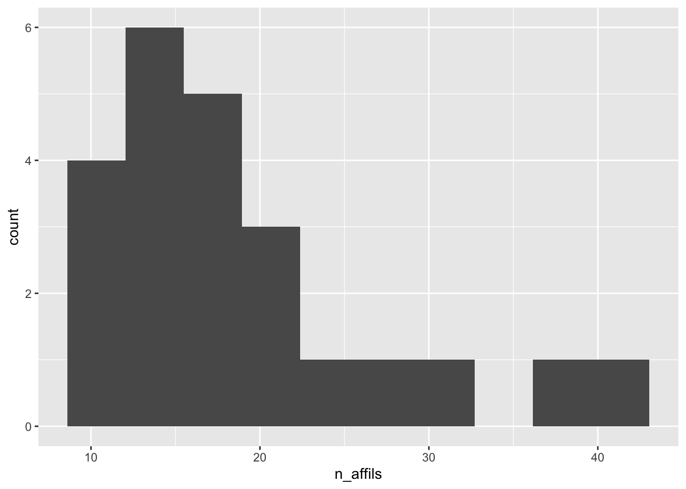
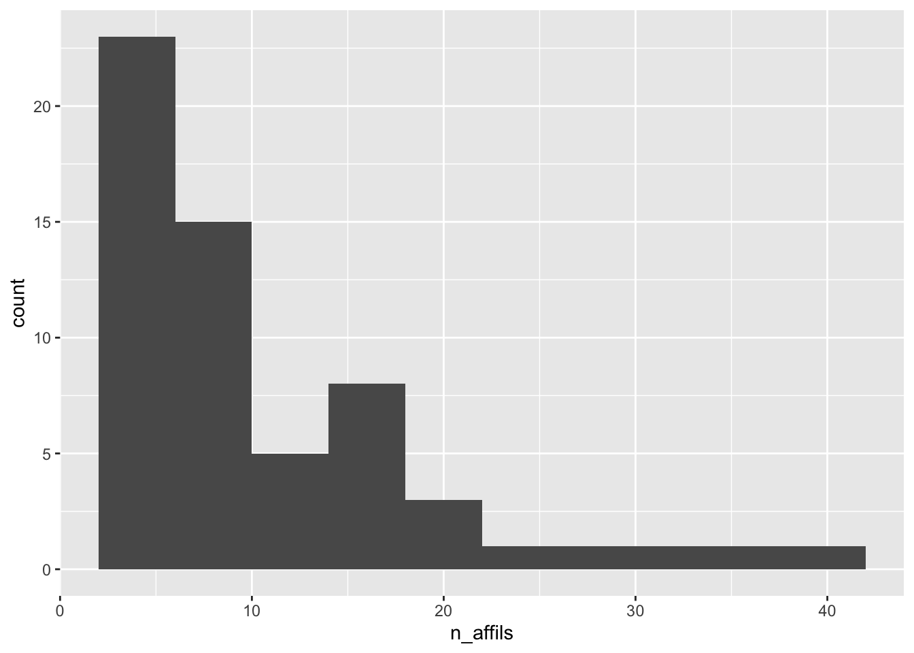
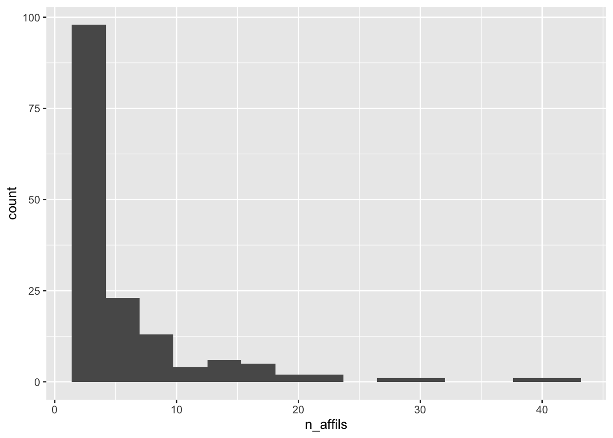
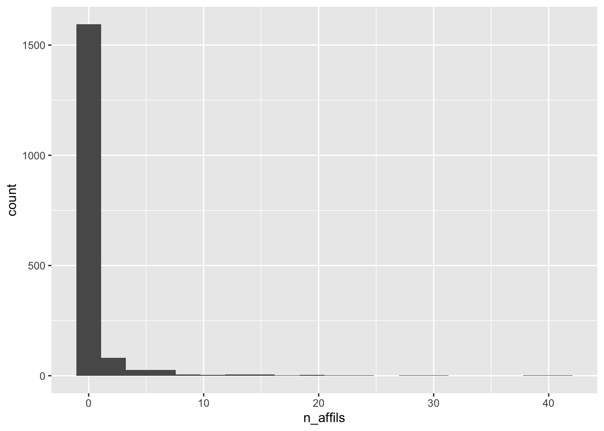

1 About
These pages summarize information about the Databrary data library.
Purpose
The separate reports take different views of Databrary’s holdings. The goal of the reports together is to provide useful information to the people who are running the repository and to those who wish to use data from it.
For information about Databrary, see https://databrary.github.io/guide/.
2 Weekly
These data are collected and reported on roughly a weekly basis.
Institutions & Authorized Users

(#fig:fig-databrary-inst-invest-timeseries)Change over time in authorized investigators and authorizing institutions
New Institutions
| Institution Name | Databrary URL |
|---|---|
| North Park University | https://databrary.org/party/12607 |
Volumes

(#fig:db-vols-plot)Change in shared and unshared volumes over time.
New volumes
| Volume Name | Date Created | Databrary URL |
|---|---|---|
| spreadsheet import | 2019-12-19 | https://nyu.databrary.org/volume/1037 |
| spreadsheet import | 2019-12-19 | https://nyu.databrary.org/volume/1037 |
| DBN - Republic of Ireland - Datasets | 2024-04-16 | https://nyu.databrary.org/volume/1727 |
| DBN - Republic of Ireland - Datasets | 2024-04-16 | https://nyu.databrary.org/volume/1727 |
| DBN - Republic of Ireland - Datasets | 2024-04-16 | https://nyu.databrary.org/volume/1727 |
| DBN - Republic of Ireland - Datasets | 2024-04-16 | https://nyu.databrary.org/volume/1727 |
| DBN - Republic of Ireland - Datasets | 2024-04-16 | https://nyu.databrary.org/volume/1727 |
| DBN - Republic of Ireland - Datasets | 2024-04-16 | https://nyu.databrary.org/volume/1727 |
| 2024 Mindfulness | 2024-04-12 | https://nyu.databrary.org/volume/1726 |
| 2024 Mindfulness | 2024-04-12 | https://nyu.databrary.org/volume/1726 |
| How does social contingency facilitate vocabulary development | 2024-04-09 | https://nyu.databrary.org/volume/1722 |
| How does social contingency facilitate vocabulary development | 2024-04-09 | https://nyu.databrary.org/volume/1722 |
| How does social contingency facilitate vocabulary development | 2024-04-09 | https://nyu.databrary.org/volume/1722 |
| How does social contingency facilitate vocabulary development | 2024-04-09 | https://nyu.databrary.org/volume/1722 |
| Adjectives | 2024-04-08 | https://nyu.databrary.org/volume/1721 |
| Adjectives | 2024-04-08 | https://nyu.databrary.org/volume/1721 |
| Adjectives | 2024-04-08 | https://nyu.databrary.org/volume/1721 |
| Adjectives | 2024-04-08 | https://nyu.databrary.org/volume/1721 |
| Adjectives | 2024-04-08 | https://nyu.databrary.org/volume/1721 |
| Adjectives | 2024-04-08 | https://nyu.databrary.org/volume/1721 |
| Curiosity-Measure-Applications | 2024-04-02 | https://nyu.databrary.org/volume/1719 |
| Curiosity-Measure-Applications | 2024-04-02 | https://nyu.databrary.org/volume/1719 |

3 Investigators and Institutions
Institutions
There are 816 total institutions in the Databrary system.
Of these, 783 or 96.0% have active Databrary Access Agreements (DAA).
Institutions with inactive DAAs
The following institutions previously had active DAAs:
| inst_id | inst_name |
|---|---|
| 9 | National Science Foundation (NSF) |
| 10 | National Institutes of Health (NIH) |
| 15 | National Institute of Child Health and Human Development (NICHD) |
| 47 | Okinawa Institute of Science and Technology (OIST) |
| 122 | New York State Institute for Basic Research in Developmental Disabilities |
| 139 | University of Sheffield |
| 156 | University of Hartford |
| 169 | University of Redlands |
| 180 | Bucknell University |
| 204 | Ramapo College |
| 205 | University of Rennes 2 |
| 208 | Smith-Kettlewell Eye Research Institute |
| 209 | Southern Illinois University |
| 214 | University of Bristol |
| 219 | University of Cleveland |
| 223 | University of Illinois |
| 230 | University of Nebraska |
| 231 | University of North Carolina |
| 238 | University of Western Sydney |
| 243 | Université de Bretagne Sud |
| 295 | Liverpool University |
| 312 | National Institute on Deafness and Communication Disorders |
| 382 | New York State Psychiatric Institute |
| 1427 | IRCCS Stella Maris Foundation |
| 2127 | International Congress on Infant Studies (ICIS) |
| 6065 | University of Osnabrueck |
| 8545 | Machado |
| 8717 | Mitsven |
| 8720 | Castellana |
| 9233 | University Mannheim |
| 9238 | Rose |
| 10551 | Wilkerson |
| 12569 | Kizilcec |
Investigators per institution
The number of authorized investigators/institution is in the range of [0, 38], with a median of 1 and a mean of 2.24.
(#fig:n-investigators-per-inst)Distribution of investigators/authorized institution
Investigators
There are \(n=\) 24 Authorized Investigators with 10 or more affiliates; \(n=\) 59 with 5 or more; \(n=\) 155 with 2 or more affiliates; and \(n=\) 1445 with no affilates.
10+ affiliates

| ai_id | ai_last | ai_first | ai_affiliation | n_affils |
|---|---|---|---|---|
| 5 | Adolph | Karen | New York University | 41 |
| 650 | Casasola | Marianella | Cornell University | 39 |
| 538 | Oakes | Lisa | UC Davis | 31 |
| 5032 | Richert | Rebekah | University of California, Riverside | 27 |
| 2382 | Berger | Sarah E | College of Staten Island, CUNY | 23 |
| 1612 | Corriveau | Kathleen | Boston University | 21 |
| 3110 | Reich | Stephanie | University of California, Irvine | 20 |
| 1913 | Kucker | Sarah | Southern Methodist University | 19 |
| 1197 | Jirout | Jamie | University of Virginia | 18 |
| 3044 | Cabrera | Natasha | University of Maryland College Park | 17 |
| 70 | Messinger | Daniel | University of Miami | 16 |
| 10208 | Cross Francis | Dionne | University of North Carolina at Chapel Hill | 16 |
| 82 | LoBue | Vanessa | Rutgers University | 15 |
| 6754 | Wang | Jenny | Rutgers University | 15 |
| 60 | Vishton | Peter | College of William and Mary | 15 |
| 4945 | Lombardi | Doug | University of Maryland | 15 |
| 96 | Perez-Edgar | Koraly | The Pennsylvania State University | 14 |
| 562 | Weisberg | Deena Skolnick | Villanova University | 14 |
| 104 | Barr | Rachel | Georgetown University | 13 |
| 531 | Goldstein | Thalia R. | George Mason University | 12 |
| 8101 | Wilson | Rujuta | University of California, Los Angeles | 11 |
| 11 | Tamis-LeMonda | Catherine | New York University | 10 |
| 126 | Fausey | Caitlin M. | University of Oregon | 10 |
| 32 | Karasik | Lana | CUNY | 10 |
5+ affiliates

| ai_id | ai_last | ai_first | ai_affiliation | n_affils |
|---|---|---|---|---|
| 5 | Adolph | Karen | New York University | 41 |
| 650 | Casasola | Marianella | Cornell University | 39 |
| 538 | Oakes | Lisa | UC Davis | 31 |
| 5032 | Richert | Rebekah | University of California, Riverside | 27 |
| 2382 | Berger | Sarah E | College of Staten Island, CUNY | 23 |
| 1612 | Corriveau | Kathleen | Boston University | 21 |
| 3110 | Reich | Stephanie | University of California, Irvine | 20 |
| 1913 | Kucker | Sarah | Southern Methodist University | 19 |
| 1197 | Jirout | Jamie | University of Virginia | 18 |
| 3044 | Cabrera | Natasha | University of Maryland College Park | 17 |
| 70 | Messinger | Daniel | University of Miami | 16 |
| 10208 | Cross Francis | Dionne | University of North Carolina at Chapel Hill | 16 |
| 82 | LoBue | Vanessa | Rutgers University | 15 |
| 6754 | Wang | Jenny | Rutgers University | 15 |
| 60 | Vishton | Peter | College of William and Mary | 15 |
| 4945 | Lombardi | Doug | University of Maryland | 15 |
| 96 | Perez-Edgar | Koraly | The Pennsylvania State University | 14 |
| 562 | Weisberg | Deena Skolnick | Villanova University | 14 |
| 104 | Barr | Rachel | Georgetown University | 13 |
| 531 | Goldstein | Thalia R. | George Mason University | 12 |
| 8101 | Wilson | Rujuta | University of California, Los Angeles | 11 |
| 11 | Tamis-LeMonda | Catherine | New York University | 10 |
| 126 | Fausey | Caitlin M. | University of Oregon | 10 |
| 32 | Karasik | Lana | CUNY | 10 |
| 6 | Gilmore | Rick O. | The Pennsylvania State University | 8 |
| 1117 | Jaswal | Vikram | University of Virginia | 8 |
| 2708 | Libertus | Melissa | University of Pittsburgh | 8 |
| 1371 | Lew-Williams | Casey | Princeton University | 8 |
| 2653 | Scott | Lisa | University of Florida | 8 |
| 2945 | Palmquist | Carolyn | Amherst College | 8 |
| 9020 | Saxbe | Darby | University of Southern California | 7 |
| 412 | Hoch | Justine | Vanderbilt University | 7 |
| 376 | Bahrick | Lorraine E. | Florida International University | 7 |
| 7159 | Saxe | Rebecca | MIT | 7 |
| 9065 | Sung | Jihyun | Sungkyunkwan University | 7 |
| 249 | Buss | Kristin A | The Pennsylvania State University | 6 |
| 1256 | Frank | Jennifer | The Pennsylvania State University | 6 |
| 1974 | Perry | Lynn | University of Miami | 6 |
| 99 | Frick | Janet | University of Georgia | 6 |
| 334 | Iverson | Jana | Boston University | 6 |
| 61 | Bergelson | Elika | Harvard University | 6 |
| 258 | Frank | Michael C. | Stanford University | 6 |
| 298 | Yoshida | Hanako | University of Houston | 6 |
| 3974 | Spencer | Rebecca | University of Massachusetts, Amherst | 6 |
| 998 | Lee | Mei-Hua | Michigan State University | 6 |
| 993 | Claxton | Laura | Purdue | 6 |
| 4605 | Froemke | Robert | NYU School of Medicine | 6 |
| 2176 | Harbourne | Regina | Duquesne University | 6 |
| 7679 | Dautel | Jocelyn | Queen’s University, Belfast | 6 |
| 7537 | Zhao | Xin (Alice) | East China Normal University | 6 |
| 277 | Rhodes | Marjorie | New York University | 5 |
| 244 | Woodward | Amanda | University of Chicago | 5 |
| 1228 | Marshall | Peter | Temple University | 5 |
| 5783 | Lucca | Kelsey | Arizona State University | 5 |
| 5539 | Bauer | Patricia | Emory University | 5 |
| 596 | Heathcock | Jill | Ohio State University | 5 |
| 4458 | Prado | Elizabeth | University of California Davis | 5 |
| 8771 | Sandhofer | Catherine | UCLA | 5 |
| 1040 | Gros-Louis | Julie Jeannette | University of Iowa | 5 |
2+ affiliates

| ai_id | ai_last | ai_first | ai_affiliation | n_affils |
|---|---|---|---|---|
| 5 | Adolph | Karen | New York University | 41 |
| 650 | Casasola | Marianella | Cornell University | 39 |
| 538 | Oakes | Lisa | UC Davis | 31 |
| 5032 | Richert | Rebekah | University of California, Riverside | 27 |
| 2382 | Berger | Sarah E | College of Staten Island, CUNY | 23 |
| 1612 | Corriveau | Kathleen | Boston University | 21 |
| 3110 | Reich | Stephanie | University of California, Irvine | 20 |
| 1913 | Kucker | Sarah | Southern Methodist University | 19 |
| 1197 | Jirout | Jamie | University of Virginia | 18 |
| 3044 | Cabrera | Natasha | University of Maryland College Park | 17 |
| 70 | Messinger | Daniel | University of Miami | 16 |
| 10208 | Cross Francis | Dionne | University of North Carolina at Chapel Hill | 16 |
| 82 | LoBue | Vanessa | Rutgers University | 15 |
| 6754 | Wang | Jenny | Rutgers University | 15 |
| 60 | Vishton | Peter | College of William and Mary | 15 |
| 4945 | Lombardi | Doug | University of Maryland | 15 |
| 96 | Perez-Edgar | Koraly | The Pennsylvania State University | 14 |
| 562 | Weisberg | Deena Skolnick | Villanova University | 14 |
| 104 | Barr | Rachel | Georgetown University | 13 |
| 531 | Goldstein | Thalia R. | George Mason University | 12 |
| 8101 | Wilson | Rujuta | University of California, Los Angeles | 11 |
| 11 | Tamis-LeMonda | Catherine | New York University | 10 |
| 126 | Fausey | Caitlin M. | University of Oregon | 10 |
| 32 | Karasik | Lana | CUNY | 10 |
| 6 | Gilmore | Rick O. | The Pennsylvania State University | 8 |
| 1117 | Jaswal | Vikram | University of Virginia | 8 |
| 2708 | Libertus | Melissa | University of Pittsburgh | 8 |
| 1371 | Lew-Williams | Casey | Princeton University | 8 |
| 2653 | Scott | Lisa | University of Florida | 8 |
| 2945 | Palmquist | Carolyn | Amherst College | 8 |
| 9020 | Saxbe | Darby | University of Southern California | 7 |
| 412 | Hoch | Justine | Vanderbilt University | 7 |
| 376 | Bahrick | Lorraine E. | Florida International University | 7 |
| 7159 | Saxe | Rebecca | MIT | 7 |
| 9065 | Sung | Jihyun | Sungkyunkwan University | 7 |
| 249 | Buss | Kristin A | The Pennsylvania State University | 6 |
| 1256 | Frank | Jennifer | The Pennsylvania State University | 6 |
| 1974 | Perry | Lynn | University of Miami | 6 |
| 99 | Frick | Janet | University of Georgia | 6 |
| 334 | Iverson | Jana | Boston University | 6 |
| 61 | Bergelson | Elika | Harvard University | 6 |
| 258 | Frank | Michael C. | Stanford University | 6 |
| 298 | Yoshida | Hanako | University of Houston | 6 |
| 3974 | Spencer | Rebecca | University of Massachusetts, Amherst | 6 |
| 998 | Lee | Mei-Hua | Michigan State University | 6 |
| 993 | Claxton | Laura | Purdue | 6 |
| 4605 | Froemke | Robert | NYU School of Medicine | 6 |
| 2176 | Harbourne | Regina | Duquesne University | 6 |
| 7679 | Dautel | Jocelyn | Queen’s University, Belfast | 6 |
| 7537 | Zhao | Xin (Alice) | East China Normal University | 6 |
| 277 | Rhodes | Marjorie | New York University | 5 |
| 244 | Woodward | Amanda | University of Chicago | 5 |
| 1228 | Marshall | Peter | Temple University | 5 |
| 5783 | Lucca | Kelsey | Arizona State University | 5 |
| 5539 | Bauer | Patricia | Emory University | 5 |
| 596 | Heathcock | Jill | Ohio State University | 5 |
| 4458 | Prado | Elizabeth | University of California Davis | 5 |
| 8771 | Sandhofer | Catherine | UCLA | 5 |
| 1040 | Gros-Louis | Julie Jeannette | University of Iowa | 5 |
| 368 | Raver | Cybele | New York University | 4 |
| 306 | Gelman | Susan | University of Michigan | 4 |
| 725 | Gunderson | Elizabeth | Temple University | 4 |
| 101 | Lockman | Jeff | Tulane University | 4 |
| 333 | Fox | Nathan | University of Maryland | 4 |
| 1515 | Srinivasan | Mahesh | UC Berkeley | 4 |
| 798 | Cordes | Sara | Boston College | 4 |
| 2521 | Hartshorne | Joshua | Boston College | 4 |
| 3517 | Curenton | Stephanie Michelle | Boston University | 4 |
| 610 | Gill | Simone | Boston University | 4 |
| 1285 | Wang | Su-hua | University of California, Santa Cruz | 4 |
| 314 | Blumberg | Mark | University of Iowa | 4 |
| 11881 | Johnson | Kevin | University of Pennsylvania | 4 |
| 1382 | Walle | Eric A | University of California, Merced | 4 |
| 7545 | Amin | Tamer | American University of Beirut | 4 |
| 11748 | Tian | Jing | Fordham University | 4 |
| 12465 | Wang | Qian | ShanghaiTech University | 4 |
| 4685 | Arunachalam | Sudha | New York University | 3 |
| 4648 | Vlach | Haley | University of Wisconsin-Madison | 3 |
| 9278 | Matarić | Maja | University of Southern California | 3 |
| 329 | Goldin-Meadow | Susan | University of Chicago | 3 |
| 11290 | Suskind | Dana | TMW Center for Early Learning + Public Health, University of Chicago | 3 |
| 9600 | Rowson | Steve | Virginia Tech | 3 |
| 5168 | Bailey | Janelle | Temple University | 3 |
| 546 | Hirsh-Pasek | Kathy | Temple University | 3 |
| 3310 | Benitez | Viridiana L. | Arizona State University | 3 |
| 6597 | Asada | Harry | Massachusetts Institute of Technology | 3 |
| 7039 | Tenenbaum | Joshua | MIT | 3 |
| 3225 | Cole | Renee | University of Iowa | 3 |
| 1699 | Noles | Nicholaus | University of Louisville | 3 |
| 2073 | Ross-Sheehy | Shannon | University of Tennessee | 3 |
| 4743 | Todorovic | Sinisa | Oregon State University | 3 |
| 2591 | Scott | Rose | University of California Merced | 3 |
| 2095 | Sullivan | Jessica | Skidmore College | 3 |
| 1216 | Goksun | Tilbe | Koc University - Turkey | 3 |
| 600 | West | Kelsey Louise | University of Alabama | 3 |
| 2624 | McMillan | Brianna | Smith College | 3 |
| 11783 | Fouhey | David | New York University | 2 |
| 11051 | Pinto | Lerrel | New York University | 2 |
| 252 | Scherf | Kathryn Suzanne | The Pennsylvania State University | 2 |
| 274 | Saffran | Jenny | University of Wisconsin - Madison | 2 |
| 120 | Yu | Chen | Indiana University | 2 |
| 585 | Legare | Cristine | The University of Texas at Austin | 2 |
| 9560 | Bian | Lin | University of Chicago | 2 |
| 9033 | Panneton | Robin | Virginia Tech | 2 |
| 10264 | Abney | Drew | University of Georgia | 2 |
| 118 | Needham | Amy | Vanderbilt University | 2 |
| 73 | Aslin | Richard | Yale University | 2 |
| 8179 | Turk-Browne | Nicholas | Yale University | 2 |
| 594 | Beier | Jonathan | University of Maryland | 2 |
| 1826 | Lidz | Jeffrey | University of Maryland | 2 |
| 6714 | Abrahamson | Dor | University of California Berkeley | 2 |
| 14 | Franchak | John | University of California, Riverside | 2 |
| 959 | Paulus | Markus | Ludwig-Maximilians-Universität München | 2 |
| 7115 | Stepp | Stephanie | University of Pittsburgh | 2 |
| 1526 | Ossmy | Ori | Birkbeck University of London | 2 |
| 5475 | Gweon | Hyowon | Stanford University | 2 |
| 6963 | Yeung | Serena | Stanford University | 2 |
| 729 | Brooks | Patricia | College of Staten Island and the Graduate Center, CUNY | 2 |
| 9063 | Laski | Elida | Boston College | 2 |
| 4071 | McAuliffe | Katherine | Boston College | 2 |
| 5908 | Doebel | Sabine | George Mason University | 2 |
| 20 | Gordon | Peter | Teachers College, Columbia University | 2 |
| 1365 | Emberson | Lauren | University of British Columbia | 2 |
| 11175 | Cingel | Drew | University of California, Davis | 2 |
| 1469 | Graf Estes | Katharine | University of California, Davis | 2 |
| 6239 | Lord | Catherine | University of California, Los Angeles | 2 |
| 10542 | Houston | Derek | University of Connecticut | 2 |
| 4963 | Lloyd | Emily Paige | University of Denver | 2 |
| 681 | Cook | Susan Wagner | University of Iowa | 2 |
| 8747 | Petersen | Isaac | University of Iowa | 2 |
| 6080 | Reynolds | Gregory Durelle | University of Tennessee, Knoxville | 2 |
| 5894 | Starr | Ariel | University of Washington | 2 |
| 4881 | Lindskog | Marcus | Uppsala University | 2 |
| 2089 | Nicolopoulou | Ageliki | Lehigh University | 2 |
| 5292 | Insel | Nathan | University of Montana | 2 |
| 1359 | Severson | Rachel Louise | University of Montana | 2 |
| 6232 | Mills | Candice | The University of Texas at Dallas | 2 |
| 1889 | Nonaka | Tetsushi | Kobe University | 2 |
| 10882 | Jenkins | Kimberly | University of North Carolina at Chapel Hill | 2 |
| 591 | Prosser | Laura | The Children’s Hospital of Philadelphia/University of Pennsylvania | 2 |
| 384 | Lee | Do Kyeong | California State University Fullerton | 2 |
| 10895 | Girolamo | Teresa | San Diego State University | 2 |
| 3743 | Ng | Florrie Fei-Yin | The Chinese University of Hong Kong | 2 |
| 6262 | Seehagen | Sabine | Ruhr University Bochum | 2 |
| 11557 | Roth | Guy | Ben-Gurion university | 2 |
| 8639 | Dutta | Tilak | University Health Network | 2 |
| 5912 | Lorenz | Megan | Augustana College | 2 |
| 8439 | Della Porta | Sandra | Brock University | 2 |
| 9526 | Nelson | Nicole L | University of Adelaide | 2 |
| 10004 | Tenenbaum | Elena | Duke University Medical Center | 2 |
| 10462 | Bican | Rachel | Ohio University | 2 |
| 10826 | Kita | Sotaro | University of Warwick | 2 |
| 11195 | Triesch | Jochen | Goethe University Frankfurt | 2 |
| 11560 | Ward | Nigel | University of Texas at El Paso | 2 |
| 4624 | Spencer | Trina D | University of Kansas | 2 |
All

| ai_id | ai_last | ai_first | ai_affiliation | n_affils |
|---|---|---|---|---|
| 5 | Adolph | Karen | New York University | 41 |
| 5 | Adolph | Karen | New York University | 41 |
| 650 | Casasola | Marianella | Cornell University | 39 |
| 538 | Oakes | Lisa | UC Davis | 31 |
| 5032 | Richert | Rebekah | University of California, Riverside | 27 |
| 2382 | Berger | Sarah E | College of Staten Island, CUNY | 23 |
| 1612 | Corriveau | Kathleen | Boston University | 21 |
| 3110 | Reich | Stephanie | University of California, Irvine | 20 |
| 1913 | Kucker | Sarah | Southern Methodist University | 19 |
| 1913 | Kucker | Sarah | Southern Methodist University | 19 |
| 1197 | Jirout | Jamie | University of Virginia | 18 |
| 3044 | Cabrera | Natasha | University of Maryland College Park | 17 |
| 70 | Messinger | Daniel | University of Miami | 16 |
| 10208 | Cross Francis | Dionne | University of North Carolina at Chapel Hill | 16 |
| 82 | LoBue | Vanessa | Rutgers University | 15 |
| 6754 | Wang | Jenny | Rutgers University | 15 |
| 60 | Vishton | Peter | College of William and Mary | 15 |
| 4945 | Lombardi | Doug | University of Maryland | 15 |
| 96 | Perez-Edgar | Koraly | The Pennsylvania State University | 14 |
| 562 | Weisberg | Deena Skolnick | Villanova University | 14 |
| 562 | Weisberg | Deena Skolnick | Villanova University | 14 |
| 104 | Barr | Rachel | Georgetown University | 13 |
| 531 | Goldstein | Thalia R. | George Mason University | 12 |
| 8101 | Wilson | Rujuta | University of California, Los Angeles | 11 |
| 11 | Tamis-LeMonda | Catherine | New York University | 10 |
| 126 | Fausey | Caitlin M. | University of Oregon | 10 |
| 32 | Karasik | Lana | CUNY | 10 |
| 6 | Gilmore | Rick O. | The Pennsylvania State University | 8 |
| 1117 | Jaswal | Vikram | University of Virginia | 8 |
| 2708 | Libertus | Melissa | University of Pittsburgh | 8 |
| 6 | Gilmore | Rick O. | The Pennsylvania State University | 8 |
| 1371 | Lew-Williams | Casey | Princeton University | 8 |
| 2653 | Scott | Lisa | University of Florida | 8 |
| 2945 | Palmquist | Carolyn | Amherst College | 8 |
| 9020 | Saxbe | Darby | University of Southern California | 7 |
| 412 | Hoch | Justine | Vanderbilt University | 7 |
| 376 | Bahrick | Lorraine E. | Florida International University | 7 |
| 7159 | Saxe | Rebecca | MIT | 7 |
| 9065 | Sung | Jihyun | Sungkyunkwan University | 7 |
| 249 | Buss | Kristin A | The Pennsylvania State University | 6 |
| 1256 | Frank | Jennifer | The Pennsylvania State University | 6 |
| 1974 | Perry | Lynn | University of Miami | 6 |
| 99 | Frick | Janet | University of Georgia | 6 |
| 334 | Iverson | Jana | Boston University | 6 |
| 61 | Bergelson | Elika | Harvard University | 6 |
| 258 | Frank | Michael C. | Stanford University | 6 |
| 334 | Iverson | Jana | Boston University | 6 |
| 61 | Bergelson | Elika | Harvard University | 6 |
| 298 | Yoshida | Hanako | University of Houston | 6 |
| 3974 | Spencer | Rebecca | University of Massachusetts, Amherst | 6 |
| 998 | Lee | Mei-Hua | Michigan State University | 6 |
| 993 | Claxton | Laura | Purdue | 6 |
| 4605 | Froemke | Robert | NYU School of Medicine | 6 |
| 2176 | Harbourne | Regina | Duquesne University | 6 |
| 7679 | Dautel | Jocelyn | Queen’s University, Belfast | 6 |
| 7537 | Zhao | Xin (Alice) | East China Normal University | 6 |
| 277 | Rhodes | Marjorie | New York University | 5 |
| 244 | Woodward | Amanda | University of Chicago | 5 |
| 1228 | Marshall | Peter | Temple University | 5 |
| 5783 | Lucca | Kelsey | Arizona State University | 5 |
| 5539 | Bauer | Patricia | Emory University | 5 |
| 596 | Heathcock | Jill | Ohio State University | 5 |
| 4458 | Prado | Elizabeth | University of California Davis | 5 |
| 8771 | Sandhofer | Catherine | UCLA | 5 |
| 1040 | Gros-Louis | Julie Jeannette | University of Iowa | 5 |
| 368 | Raver | Cybele | New York University | 4 |
| 306 | Gelman | Susan | University of Michigan | 4 |
| 725 | Gunderson | Elizabeth | Temple University | 4 |
| 101 | Lockman | Jeff | Tulane University | 4 |
| 333 | Fox | Nathan | University of Maryland | 4 |
| 1515 | Srinivasan | Mahesh | UC Berkeley | 4 |
| 725 | Gunderson | Elizabeth | Temple University | 4 |
| 798 | Cordes | Sara | Boston College | 4 |
| 2521 | Hartshorne | Joshua | Boston College | 4 |
| 3517 | Curenton | Stephanie Michelle | Boston University | 4 |
| 610 | Gill | Simone | Boston University | 4 |
| 1285 | Wang | Su-hua | University of California, Santa Cruz | 4 |
| 314 | Blumberg | Mark | University of Iowa | 4 |
| 11881 | Johnson | Kevin | University of Pennsylvania | 4 |
| 1382 | Walle | Eric A | University of California, Merced | 4 |
| 7545 | Amin | Tamer | American University of Beirut | 4 |
| 11748 | Tian | Jing | Fordham University | 4 |
| 12465 | Wang | Qian | ShanghaiTech University | 4 |
| 4685 | Arunachalam | Sudha | New York University | 3 |
| 4648 | Vlach | Haley | University of Wisconsin-Madison | 3 |
| 9278 | Matarić | Maja | University of Southern California | 3 |
| 329 | Goldin-Meadow | Susan | University of Chicago | 3 |
| 11290 | Suskind | Dana | TMW Center for Early Learning + Public Health, University of Chicago | 3 |
| 9600 | Rowson | Steve | Virginia Tech | 3 |
| 5168 | Bailey | Janelle | Temple University | 3 |
| 546 | Hirsh-Pasek | Kathy | Temple University | 3 |
| 3310 | Benitez | Viridiana L. | Arizona State University | 3 |
| 6597 | Asada | Harry | Massachusetts Institute of Technology | 3 |
| 7039 | Tenenbaum | Joshua | MIT | 3 |
| 3225 | Cole | Renee | University of Iowa | 3 |
| 1699 | Noles | Nicholaus | University of Louisville | 3 |
| 2073 | Ross-Sheehy | Shannon | University of Tennessee | 3 |
| 4743 | Todorovic | Sinisa | Oregon State University | 3 |
| 2591 | Scott | Rose | University of California Merced | 3 |
| 2095 | Sullivan | Jessica | Skidmore College | 3 |
| 1216 | Goksun | Tilbe | Koc University - Turkey | 3 |
| 600 | West | Kelsey Louise | University of Alabama | 3 |
| 2624 | McMillan | Brianna | Smith College | 3 |
| 11783 | Fouhey | David | New York University | 2 |
| 11051 | Pinto | Lerrel | New York University | 2 |
| 252 | Scherf | Kathryn Suzanne | The Pennsylvania State University | 2 |
| 274 | Saffran | Jenny | University of Wisconsin - Madison | 2 |
| 120 | Yu | Chen | Indiana University | 2 |
| 585 | Legare | Cristine | The University of Texas at Austin | 2 |
| 120 | Yu | Chen | Indiana University | 2 |
| 9560 | Bian | Lin | University of Chicago | 2 |
| 9033 | Panneton | Robin | Virginia Tech | 2 |
| 10264 | Abney | Drew | University of Georgia | 2 |
| 118 | Needham | Amy | Vanderbilt University | 2 |
| 73 | Aslin | Richard | Yale University | 2 |
| 8179 | Turk-Browne | Nicholas | Yale University | 2 |
| 594 | Beier | Jonathan | University of Maryland | 2 |
| 1826 | Lidz | Jeffrey | University of Maryland | 2 |
| 6714 | Abrahamson | Dor | University of California Berkeley | 2 |
| 14 | Franchak | John | University of California, Riverside | 2 |
| 959 | Paulus | Markus | Ludwig-Maximilians-Universität München | 2 |
| 7115 | Stepp | Stephanie | University of Pittsburgh | 2 |
| 1526 | Ossmy | Ori | Birkbeck University of London | 2 |
| 5475 | Gweon | Hyowon | Stanford University | 2 |
| 6963 | Yeung | Serena | Stanford University | 2 |
| 729 | Brooks | Patricia | College of Staten Island and the Graduate Center, CUNY | 2 |
| 9063 | Laski | Elida | Boston College | 2 |
| 4071 | McAuliffe | Katherine | Boston College | 2 |
| 5908 | Doebel | Sabine | George Mason University | 2 |
| 20 | Gordon | Peter | Teachers College, Columbia University | 2 |
| 1365 | Emberson | Lauren | University of British Columbia | 2 |
| 11175 | Cingel | Drew | University of California, Davis | 2 |
| 1469 | Graf Estes | Katharine | University of California, Davis | 2 |
| 6239 | Lord | Catherine | University of California, Los Angeles | 2 |
| 10542 | Houston | Derek | University of Connecticut | 2 |
| 4963 | Lloyd | Emily Paige | University of Denver | 2 |
| 681 | Cook | Susan Wagner | University of Iowa | 2 |
| 8747 | Petersen | Isaac | University of Iowa | 2 |
| 6080 | Reynolds | Gregory Durelle | University of Tennessee, Knoxville | 2 |
| 5894 | Starr | Ariel | University of Washington | 2 |
| 4881 | Lindskog | Marcus | Uppsala University | 2 |
| 2089 | Nicolopoulou | Ageliki | Lehigh University | 2 |
| 5292 | Insel | Nathan | University of Montana | 2 |
| 1359 | Severson | Rachel Louise | University of Montana | 2 |
| 6232 | Mills | Candice | The University of Texas at Dallas | 2 |
| 1889 | Nonaka | Tetsushi | Kobe University | 2 |
| 10882 | Jenkins | Kimberly | University of North Carolina at Chapel Hill | 2 |
| 591 | Prosser | Laura | The Children’s Hospital of Philadelphia/University of Pennsylvania | 2 |
| 384 | Lee | Do Kyeong | California State University Fullerton | 2 |
| 10895 | Girolamo | Teresa | San Diego State University | 2 |
| 3743 | Ng | Florrie Fei-Yin | The Chinese University of Hong Kong | 2 |
| 6262 | Seehagen | Sabine | Ruhr University Bochum | 2 |
| 11557 | Roth | Guy | Ben-Gurion university | 2 |
| 8639 | Dutta | Tilak | University Health Network | 2 |
| 5912 | Lorenz | Megan | Augustana College | 2 |
| 8439 | Della Porta | Sandra | Brock University | 2 |
| 9526 | Nelson | Nicole L | University of Adelaide | 2 |
| 10004 | Tenenbaum | Elena | Duke University Medical Center | 2 |
| 10462 | Bican | Rachel | Ohio University | 2 |
| 10826 | Kita | Sotaro | University of Warwick | 2 |
| 11195 | Triesch | Jochen | Goethe University Frankfurt | 2 |
| 11560 | Ward | Nigel | University of Texas at El Paso | 2 |
| 4624 | Spencer | Trina D | University of Kansas | 2 |
| 9752 | Brito | Natalie | New York University | 1 |
| 2953 | Lake | Brenden | New York University | 1 |
| 7136 | Ren | Mengye | New York University | 1 |
| 2240 | Yoshikawa | Hirokazu | New York University | 1 |
| 7133 | Ritter | Frank | The Pennsylvania State University | 1 |
| 245 | Wilkinson | Krista | The Pennsylvania State University | 1 |
| 1021 | Kirkorian | Heather | University of Wisconsin-Madison | 1 |
| 3038 | Shutts | Kristin | UW-Madison | 1 |
| 11727 | Davies | Patrick | NA | 1 |
| 10322 | Tadin | Duje | University of Rochester | 1 |
| 255 | Dusing | Stacey | University of Southern California | 1 |
| 9580 | Morales | Santiago | University of Southern California | 1 |
| 12399 | Breslin | Paul | Rutgers University | 1 |
| 2125 | Simpson | Elizabeth Ann | University of Miami | 1 |
| 8676 | Therrien | William | NA | 1 |
| 10519 | Bent | Tessa | Indiana University | 1 |
| 2536 | Fyfe | Emily Ruth | Indiana University | 1 |
| 11613 | Champagne | Frances | University of Texas at Austin | 1 |
| 9611 | Gilden | David | University of Texas at Austin | 1 |
| 6703 | Humphreys | Kathryn | Vanderbilt University | 1 |
| 11844 | Reschke | Peter | BYU | 1 |
| 635 | Newman | Rochelle | University of Maryland | 1 |
| 11460 | Riggins | Tracy | University of Maryland | 1 |
| 2921 | Xu | Fei | UC Berkeley | 1 |
| 11824 | Gervain | Judit | CNRS | 1 |
| 12374 | Testolin | Alberto | University of Padova | 1 |
| 10148 | Schuwerk | Tobias | Ludwig-Maximilians-Universität München | 1 |
| 155 | Libertus | Klaus | University of Pittsburgh | 1 |
| 7030 | Kennedy | Monroe | Stanford University | 1 |
| 4420 | Berteletti | Ilaria | Gallaudet University | 1 |
| 288 | Fabricius | William | Arizona State University | 1 |
| 5446 | Wagner | Nicholas | Boston University | 1 |
| 11027 | Dumitriu | Dani | Columbia University | 1 |
| 8297 | Kragel | Philip | Emory University | 1 |
| 2993 | Stout | Dietrich | Emory University | 1 |
| 10117 | Pruden | Shannon | Florida International University | 1 |
| 2173 | Bonawitz | Elizabeth | Harvard University | 1 |
| 2347 | Rowe | Meredith | Harvard University | 1 |
| 8025 | Landau | Barbara | Johns Hopkins University | 1 |
| 9132 | Liu | Shari | Johns Hopkins University, MIT | 1 |
| 1398 | Schulz | Laura | MIT | 1 |
| 9133 | Senier | Laura | Northeastern University | 1 |
| 275 | Waxman | Sandy | Northwestern University | 1 |
| 2525 | Hamlin | Kiley | University of British Columbia | 1 |
| 482 | Todd | Andrew | University of California, Davis | 1 |
| 93 | Johnson | Scott | University of California, Los Angeles | 1 |
| 477 | Warlaumont | Anne | University of California, Los Angeles | 1 |
| 4185 | Hwang | Hyesung Grace | University of California Santa Cruz | 1 |
| 279 | Naigles | Letitia | University of Connecticut | 1 |
| 9491 | Kim | Pilyoung | University of Denver | 1 |
| 761 | Strathearn | Lane | University of Iowa | 1 |
| 302 | Cashon | Cara | University of Louisville | 1 |
| 357 | Mandalaywala | Tara | University of Massachusetts Amherst | 1 |
| 6821 | Pickron | Charisse | University of Minnesota | 1 |
| 6150 | Sommerville | Jessica | University of Toronto | 1 |
| 6077 | Wu | Yang | University of Toronto Scarborough | 1 |
| 1286 | Markson | Lori | Washington University | 1 |
| 7502 | Salah | Albert Ali | Utrecht University | 1 |
| 1666 | Colunga | Eliana | University of Colorado Boulder | 1 |
| 331 | Brandone | Amanda | Lehigh University | 1 |
| 518 | Soderstrom | Melanie | University of Manitoba | 1 |
| 2658 | Hunnius | Sabine | Radboud University | 1 |
| 3737 | Swingley | Daniel | University of Pennsylvania | 1 |
| 6349 | Huenerfauth | Matt | Rochester Institute of Technology | 1 |
| 3985 | Hassinger-Das | Brenna | Pace University | 1 |
| 5598 | Boor | Brandon | Purdue University | 1 |
| 8907 | Laskin | Alexander | Purdue University | 1 |
| 10537 | Purpura | David | Purdue University | 1 |
| 4539 | Rennels | Jennifer L. | University of Nevada, Las Vegas | 1 |
| 2386 | Kunstman | Jonathan | Miami University | 1 |
| 11295 | Ramirez Villarin | Lorraine | University of North Georgia | 1 |
| 11348 | Greene | Michelle | Barnard College | 1 |
| 3233 | Cates | Carolyn | New York University School of Medicine | 1 |
| 727 | Thomason | Moriah | New York University Langone Health | 1 |
| 4249 | Bulgarelli | Federica | University at Buffalo | 1 |
| 10007 | Doermann | David | University at Buffalo | 1 |
| 6128 | Fagg | Andrew | University of Oklahoma | 1 |
| 6513 | Westermann | Gert | Lancaster University | 1 |
| 3766 | Seyranian | Viviane | Cal Poly Pomona | 1 |
| 11408 | Arias-Trejo | Natalia | Universidad Nacional Autónoma de México (UNAM) | 1 |
| 2182 | Liberman | Zoe | University of California Santa Barbara | 1 |
| 2285 | Sutherland | Clare | University of Western Australia | 1 |
| 2322 | Ciciolla | Lucia | Oklahoma State University | 1 |
| 11179 | Cheke | Lucy Gaia | University of Cambridge | 1 |
| 530 | Hopkins | Emily | University of Scranton | 1 |
| 8573 | Sparrey | Carolyn | Simon Fraser University | 1 |
| 3062 | Casillas | Marisa | Max Planck Institute for Psycholinguistics | 1 |
| 11910 | Doretto | Gianfranco | West Virginia University | 1 |
| 1019 | Suszek | Hubert | University of Warsaw | 1 |
| 3603 | Kose | Hatice | Istanbul Technical University | 1 |
| 7678 | Unal | Gozde | Istanbul Technical University | 1 |
| 3314 | Roberts | Kim | Wilfrid Laurier University | 1 |
| 11482 | Blashill | Aaron | San Diego State University | 1 |
| 3204 | Ding | Xiao Pan | National University of Singapore | 1 |
| 3812 | Miller | Joan | New School University | 1 |
| 3738 | Laing | Catherine | University of York | 1 |
| 3866 | Hoehle | Barbara | University of Potsdam | 1 |
| 7469 | Ozel | Serkan | Bogazici University | 1 |
| 7530 | Yu | Yue | Centre for Research in Child Development, National Institute of Education, Nanyang Technological University | 1 |
| 3954 | Jankovic | Milica | University of Belgrade - Faculty of Electrical Engineering | 1 |
| 8799 | Hsiao | Janet | University of Hong Kong | 1 |
| 10898 | Goble | Priscilla | Texas State University | 1 |
| 11189 | Steedman | Mark | University of Edinburgh | 1 |
| 11656 | Wilcox | Teresa | Florida Atlantic University | 1 |
| 5014 | Burdett | Emily | University of Nottingham | 1 |
| 5234 | Jordan | Kerry | Utah State University | 1 |
| 5276 | Ayaz | Hasan | Drexel University | 1 |
| 5415 | Frog | Kermit | Muppets University, Professor | 1 |
| 4830 | Hadjikhani | Nouchine | Harvard University | 1 |
| 6067 | Mondloch | Catherine | Brock University | 1 |
| 9376 | Atyabi | Adham | University of Colorado Colorado Springs | 1 |
| 10205 | Ougrin | Dennis | Queen Mary University of London | 1 |
| 3714 | Nava | Elena | University of Milano-Bicocca | 1 |
| 12175 | Moriguchi | Yusuke | Kyoto University | 1 |
| 6700 | Palmerini | Luca | University of Bologna | 1 |
| 7006 | Bayet | Laurie | American University | 1 |
| 10022 | Lorenzo | Nicole | American University | 1 |
| 6966 | Faubert | Jocelyn | University of Montreal | 1 |
| 10313 | Wang | Tien-Ni | National Taiwan University | 1 |
| 7694 | Pronovost | Megan | California State University, Fresno | 1 |
| 8098 | Dragicevic | Pierre | Université Paris-Saclay | 1 |
| 8558 | Schulz | Eric | Max Planck Insititute for Biological Cybernetics | 1 |
| 7863 | Frermann | Lea | University of Melbourne | 1 |
| 8123 | Camps | Guido | Wageningen University & Research | 1 |
| 10555 | Spear | Jack | The Chicago School of Professional Psychology | 1 |
| 3750 | Furman | Reyhan | University of Central Lancashire | 1 |
| 9176 | Estévez | Angeles F. | University of Almeria (Spain) | 1 |
| 10990 | Brady | Nuala | University College Dublin | 1 |
| 11833 | Waller | Bridget | Nottingham Trent University | 1 |
| 8722 | Su | Yanjie | Peking University | 1 |
| 10805 | Rosen | Maya | Smith College | 1 |
| 10090 | Chen | Eva E | National Tsing Hua University | 1 |
| 11825 | Yao | Zai-Fu | National Tsing Hua University | 1 |
| 10277 | Ting | Alan Huong Yong | University of Technology Sarawak | 1 |
| 8881 | Tisserand | Romain | Université de Poitiers - Faculté des Sciences du Sport | 1 |
| 10471 | Galar | Mikel | Public University of Navarre | 1 |
| 11261 | Mikeska | Jamie | Educational Testing Service | 1 |
| 11222 | Lipina | Sebastian | Applied Neurobiology Unit | 1 |
| 11894 | Ginzburg | Jonathan | Université Paris Cité | 1 |
| 11400 | Gao | Tianyu | Beijing Normal University at Zhuhai | 1 |
| 11023 | Farran | Emily | University of Surrey, UK | 1 |
| 11684 | Shevchenko | Jennifer | NA | 1 |
| 12047 | Lam | Chun Bun | The Education University of Hong Kong | 1 |
| 12387 | Camodeca | Marina | University of Udine | 1 |
| 1261 | Oudeyer | Pierre-Yves | Inria, France | 1 |
| 12476 | Skeryte-Kazlauskiene | Monika | NA | 1 |
| 6499 | Amodio | David | New York University | 0 |
| 1834 | Besser | Howard | NYU | 0 |
| 1254 | Blair | Clancy | New York University | 0 |
| 4790 | Bloom | Stacie | New York University | 0 |
| 2355 | Cheung | Olivia | New York University Abu Dhabi | 0 |
| 3017 | Dillon | Moira | New York University | 0 |
| 8726 | Gao | Chen | New York University | 0 |
| 2782 | Gennetian | Lisa | New York University | 0 |
| 9816 | Grigos | Maria | New York University | 0 |
| 6507 | Howe | Tsu-Hsin | NA | 0 |
| 1098 | Hughes | Diane | New York University | 0 |
| 3775 | Ma | Jasmine | New York University | 0 |
| 321 | Marcus | Gary | New York University | 0 |
| 3854 | Merry | Sally Engle | New York University | 0 |
| 7 | Millman | David | New York University | 0 |
| 3802 | Morris | Pamela | New York University | 0 |
| 6640 | OConnor | Erin | New York University | 0 |
| 6517 | Pargeter | Justin | New York University | 0 |
| 5851 | Picheny | Michael | NYU | 0 |
| 9203 | Ripolles | Pablo | New York University | 0 |
| 3890 | Sanes | Dan | New York University | 0 |
| 2289 | Schieffelin | Bambi B | New York University | 0 |
| 6697 | Schneider | David | New York University | 0 |
| 2936 | Shrout | Patrick E. | New York University | 0 |
| 6869 | Trainor | Audrey | New York University | 0 |
| 335 | Vouloumanos | Athena | NA | 0 |
| 2810 | West | Tessa | NYU | 0 |
| 1807 | Berenbaum | Sheri | The Pennsylvania State University | 0 |
| 4399 | Bierman | Karen | The Pennsylvania State University | 0 |
| 7298 | Clair | Kevin | The Pennsylvania State University | 0 |
| 7240 | Ezray | Briana Danielle | The Pennsylvania State University | 0 |
| 9348 | Finke | Roger | Penn State University | 0 |
| 3043 | Liu | Yanxi | The Pennsylvania State University | 0 |
| 1902 | Marshall | Amy | The Pennsylvania State University | 0 |
| 6474 | Mattila | Anna | The Pennsylvania State University | 0 |
| 847 | Murphy | P. Karen | The Pennsylvania State University | 0 |
| 8047 | O’Sullivan | Deirdre | The Pennsylvania State University | 0 |
| 7450 | Oliver | Mary | The Pennsylvania State University | 0 |
| 4658 | Rajtmajer | Sarah | The Pennsylvania State University | 0 |
| 9584 | Schussler | Deborah | Penn State University | 0 |
| 273 | Wyble | Brad | The Pennsylvania State University | 0 |
| 393 | van Hell | Janet | The Pennsylvania State University | 0 |
| 327 | Alibali | Martha W. | University of Wisconsin - Madison | 0 |
| 1102 | Davidson | Richard | University of Wisconsin-Madison | 0 |
| 9743 | Greenberg | Julia | University of Wisconsin-Madison | 0 |
| 12146 | Hawkins | Robert | University of Wisconsin-Madison | 0 |
| 2828 | Kalish | Charles | University of Wisconsin-Madison | 0 |
| 8306 | Matthews | Percival | University of Wisconsin - Madison | 0 |
| 1361 | Pollak | Seth | University of Wisconsin-Madison | 0 |
| 1227 | Simmering | Vanessa | University of Wisconsin - Madison | 0 |
| 7438 | Ackerman | Joshua | University of Michigan | 0 |
| 1509 | Alter | George | University of Michigan | 0 |
| 1694 | Cortina | Kai | University of Michigan | 0 |
| 1524 | Lampert | Magdalene | Professor Emeritus, University of Michigan and Coordinator of Design, Development, and Documentation, Boston Plan for Excellence | 0 |
| 2985 | Levenstein | Margaret | ICPSR | 0 |
| 4740 | Richardson | James | University of Michigan | 0 |
| 2820 | Tardif | Twila | University of Michigan | 0 |
| 1069 | Ulrich | Dale | University of Michigan School of Kinesiology | 0 |
| 1540 | Wellman | Henry | University of Michigan | 0 |
| 1619 | Elenbaas | Laura | University of Rochester | 0 |
| 6829 | Rosengren | Karl | University of Rochester | 0 |
| 5264 | Sturge-Apple | Melissa | University of Rochester | 0 |
| 657 | Adamson | Lauren | Georgia State University | 0 |
| 369 | Bakeman | Roger | Georgia State University | 0 |
| 10806 | Phelps | Chavez | NA | 0 |
| 9383 | Roach | Andrew | Georgia State University | 0 |
| 1269 | Tully | Erin | Georgia State University | 0 |
| 7166 | Brault | John | University of Southern California | 0 |
| 2817 | Kesselman | Carl | University of Southern California | 0 |
| 10248 | Kretch | Kari | University of Southern California | 0 |
| 7100 | Mintz | Toben | University of Southern California | 0 |
| 2807 | Smith | Beth | University of Southern California | 0 |
| 11776 | Soleymani | Mohammad | University of Southern California | 0 |
| 5945 | Behrmann | Marlene | Carnegie Mellon University | 0 |
| 1628 | Carver | Sharon M. | Carnegie Mellon University Children’s School | 0 |
| 257 | Fisher | Anna | Carnegie Mellon University | 0 |
| 315 | MacWhinney | Brian | Carnegie Mellon University | 0 |
| 10940 | Vales | Catarina | Carnegie Mellon University | 0 |
| 3037 | Yurovsky | Daniel | Carnegie Mellon University | 0 |
| 4732 | Carcea | Ioana | Rutgers BHI | 0 |
| 1414 | Rivera | Luis M. | Rutgers, Newark | 0 |
| 5287 | Rosenberg-Lee | Miriam | Rutgers University | 0 |
| 1339 | Shafto | Patrick | Rutgers University - Newark | 0 |
| 4363 | Tricomi | Elizabeth | Rutgers University - Newark | 0 |
| 6972 | Hepburn | Alexa | Rutgers University | 0 |
| 6536 | Mikesell | Lisa | Rutgers University | 0 |
| 6973 | Potter | Jonathan | Rutgers, The State University of New Jersey | 0 |
| 4481 | Syrett | Kristen | Rutgers University - New Brunswick | 0 |
| 908 | Allen | Joseph | University of Virginia | 0 |
| 1326 | Connelly | Jessica | University of Virginia | 0 |
| 264 | DeLoache | Judy | University of Virginia | 0 |
| 8571 | Doryab | Afsaneh | University of Virginia | 0 |
| 1521 | Grossmann | Tobias | University of Virginia | 0 |
| 318 | Lillard | Angeline | University of Virginia | 0 |
| 67 | Nosek | Brian | University of Virginia | 0 |
| 2735 | Vaish | Amrisha | University of Virginia | 0 |
| 294 | Bertenthal | Bennett I. | Indiana University | 0 |
| 4850 | Diekman | Amanda | Indiana University | 0 |
| 1375 | James | Karin | Indiana University | 0 |
| 11258 | Park Rogers | Meredith | Indiana University | 0 |
| 161 | Smith | Linda B. | Indiana University | 0 |
| 8231 | Wood | Samantha | Indiana University Bloomington | 0 |
| 10047 | Talbott | Elizabeth | William & Mary | 0 |
| 7040 | Arredondo | Maria | University of Texas at Austin | 0 |
| 1825 | Bigler | Rebecca | University of Texas at Austin | 0 |
| 8844 | Jabbar | Huriya | University of Texas at Austin | 0 |
| 11001 | Ong | Desmond | The University of Texas at Austin | 0 |
| 10972 | Pestilli | Franco | The University of Texas | 0 |
| 9564 | Preston | Alison | The University of Texas at Austin | 0 |
| 11964 | Schmitt | Mary Beth | University of Texas at Austin | 0 |
| 80 | Shapiro | Liza | University of Texas at Austin | 0 |
| 4415 | Tillman | Katharine | The University of Texas at Austin | 0 |
| 1133 | Woolley | Jacqueline | University of Texas | 0 |
| 3731 | de Barbaro | Kaya | The University of Texas at Austin | 0 |
| 8236 | Hall | Geoffrey | McMaster University | 0 |
| 124 | Lewis | Terri L. | McMaster University | 0 |
| 354 | Maurer | Daphne | McMaster University | 0 |
| 7322 | Trainor | Laurel | McMaster University | 0 |
| 8589 | Xiao | Gabriel | McMaster University | 0 |
| 328 | Brentari | Diane | Linguistics Department, University of Chicago | 0 |
| 3764 | Decety | Jean | University of Chicago | 0 |
| 12053 | Levine | Susan | University of Chicago | 0 |
| 1083 | Norman | Greg | University of Chicago | 0 |
| 2640 | Schreiber | Michael D. | University of Chicago | 0 |
| 6733 | Yang | Fan | The University of Chicago | 0 |
| 12403 | Fausto-Sterling | Anne | Brown University | 0 |
| 5888 | Feiman | Roman | Brown University | 0 |
| 5998 | Pavlick | Ellie | Brown University | 0 |
| 544 | Serre | Thomas | Brown university | 0 |
| 111 | Sobel | David | Brown University | 0 |
| 9817 | Chae | David | Tulane University | 0 |
| 1911 | Drury | Stacy | Tulane | 0 |
| 1160 | Markant | Julie | Tulane University | 0 |
| 1300 | O’Brien | Laurie | Tulane University | 0 |
| 4794 | Scheeringa | Michael | Tulane University School of Medicine | 0 |
| 5830 | Corpuz | Randy | UMass Boston | 0 |
| 12196 | Eisenkraft | Arthur | NA | 0 |
| 102 | Kaldy | Zsuzsa | University of Massachusetts, Boston | 0 |
| 2962 | Shukla | Mohinish | University of Massachusetts Boston | 0 |
| 7890 | Tronick | Ed | University of Massachusetts Boston | 0 |
| 669 | Bell | Martha Ann | Virginia Tech | 0 |
| 5348 | Choi | Koeun | Virginia Polytechnic Institute and State University | 0 |
| 5979 | Howell | Brittany | Fralin Biomedical Research Institute at Virginia Tech Carilion | 0 |
| 8282 | Lee | Tae-Ho | Virginia Tech | 0 |
| 10731 | Ehrlich | Katherine | University of Georgia | 0 |
| 10956 | Ravindran | Niyantri | University of Georgia | 0 |
| 1977 | Booth | Amy | Vanderbilt University | 0 |
| 752 | Fazio | Lisa | Vanderbilt University | 0 |
| 3688 | Jones | Robin | Vanderbilt University Medical Center | 0 |
| 9413 | Kunda | Maithilee | Vanderbilt University | 0 |
| 3267 | Noland | Julia | Vanderbilt University | 0 |
| 8224 | Osina | Maria | Vanderbilt University | 0 |
| 1972 | Troseth | Georgene Lynn | Vanderbilt University | 0 |
| 1280 | Brooker | Rebecca Jo | Texas A&M University | 0 |
| 3899 | Bailey | Craig | Yale University | 0 |
| 7628 | Deng | Jun | Yale University | 0 |
| 324 | Dunham | Yarrow | Yale University | 0 |
| 3169 | Gee | Dylan | Yale University | 0 |
| 2118 | Lewkowicz | David | Yale University | 0 |
| 133 | Wynn | Karen | Yale University | 0 |
| 8564 | Yildirim | Ilker | Yale University | 0 |
| 2620 | Herrera | Carol | Brigham Young University | 0 |
| 2629 | Jarvis | Tyler | Brigham Young University | 0 |
| 4154 | Lundwall | Rebecca A. | Brigham Young University | 0 |
| 3951 | Sansom | Rebecca Louise | Brigham Young University | 0 |
| 4640 | Fernandez | Victor | Georgetown University | 0 |
| 5623 | Getz | Heidi | Georgetown University | 0 |
| 433 | Marsh | Abigail | Georgetown University | 0 |
| 1841 | Bolger | Donald J. | University of Maryland College Park | 0 |
| 129 | Butler | Lucas P. | University of Maryland | 0 |
| 5837 | He | Minxuan | University of Maryland, College Park | 0 |
| 4721 | Kiemel | Tim | University of Maryland | 0 |
| 1611 | Killen | Melanie | University of Maryland | 0 |
| 8611 | Mix | Kelly | University of Maryland | 0 |
| 601 | Ramani | Geetha | University of Maryland | 0 |
| 1811 | Ratner | Nan | University of Maryland | 0 |
| 3395 | Redcay | Elizabeth | University of Maryland | 0 |
| 514 | Rubin | Kenneth H | University of Maryland | 0 |
| 490 | Shackman | Alex | University of Maryland | 0 |
| 1819 | Wang | Cixin | NA | 0 |
| 6784 | Chakrabarti | Bhismadev | University of Reading | 0 |
| 2344 | Dodd | Helen | University of Reading | 0 |
| 2843 | Murray | Lynne | Reading, UK | 0 |
| 8199 | Gopnik | Alison | University Of California at Berkeley | 0 |
| 9951 | Krakowski | Ariel | University of California, Berkeley Lawrence Hall of Science | 0 |
| 8884 | Cheung | Cecilia | University of California Riverside | 0 |
| 2932 | Davis | Elizabeth | University of California, Riverside | 0 |
| 1199 | Gauvain | Mary | University of California, Riverside | 0 |
| 130 | Wu | Rachel | University of California, Riverside | 0 |
| 7471 | Benavides-Varela | Silvia | University of Padova | 0 |
| 7639 | Castelli | Luigi | University of Padova | 0 |
| 6089 | Rubaltelli | Enrico | University of Padova | 0 |
| 4888 | Simonelli | Alessandra | University of Padua | 0 |
| 2468 | Lichtenfeld | Stephanie | University of Munich | 0 |
| 1766 | Alper | Rebecca Mae | Temple University | 0 |
| 259 | Newcombe | Nora S. | Temple University | 0 |
| 2250 | Scott | Molly | Temple University | 0 |
| 1897 | Tucker | Carole | Temple University | 0 |
| 11865 | Vucetic | Slobodan | Temple University | 0 |
| 11692 | Beschorner | Kurt | University of Pittsburgh | 0 |
| 1485 | Perlman | Susan | University of Pittsburgh | 0 |
| 7778 | Redfern | Mark | U. of Pittsburgh | 0 |
| 260 | Kirkham | Natasha | Birkbeck, University of London | 0 |
| 94 | Smith | Tim | Birkbeck, University of London | 0 |
| 250 | Tucker | Leslie | Birkbeck, University of London | 0 |
| 6068 | Anderson | David | Georgia Tech | 0 |
| 2189 | Howard | Ayanna | Georgia Institute of Technology | 0 |
| 400 | Rehg | James M. | Georgia Institute of Technology | 0 |
| 8612 | Valdez | Jeffrey | Georgia Institute of Technology | 0 |
| 1733 | Wheaton | Lewis | Georgia Tech | 0 |
| 148 | Boudreau | Jean-Paul | Ryerson University | 0 |
| 3140 | Milligan | Karen | Ryerson University | 0 |
| 474 | Moulson | Margaret | Ryerson University | 0 |
| 6046 | Wagner | Anne | Ryerson University | 0 |
| 3746 | Baldwin | Dare | University of Oregon | 0 |
| 4193 | Berkman | Elliot | University of Oregon | 0 |
| 6534 | De Anda | Stephanie | University of Oregon | 0 |
| 536 | Fisher | Philip | University of Oregon | 0 |
| 6626 | Greenhouse | Ian | University of Oregon | 0 |
| 2788 | Atencio | David | University of New Mexico | 0 |
| 5261 | Stieglitz | Jonathan | University of New Mexico | 0 |
| 2362 | Gustafsson | Erik | University of Portsmouth | 0 |
| 9549 | Mohasseb | Alaa | University of Portsmouth | 0 |
| 2467 | Nomikou | Iris | University of Portsmouth | 0 |
| 3506 | Nye | Joanna | University of Portsmouth | 0 |
| 1214 | Reddy | Vasudevi | University of Portsmouth, UK | 0 |
| 4445 | Somogyi | Eszter | University of Portsmouth | 0 |
| 6742 | Gaither | Sarah Elizabeth | Duke University | 0 |
| 8810 | Seli | Paul | Duke University | 0 |
| 3191 | Gotlib | Ian | Stanford University | 0 |
| 4206 | Lowery | Brian | Stanford University | 0 |
| 8292 | Obradovic | Jelena | Stanford University | 0 |
| 4365 | Wall | Dennis | Stanford University | 0 |
| 3039 | Gillespie-Lynch | Kristen | CUNY | 0 |
| 5181 | Wagner | Jennifer | City University of New York, College of Staten Island | 0 |
| 320 | Deák | Gedeon O. | University of California, San Diego | 0 |
| 6528 | Powell | Lindsey | UC San Diego | 0 |
| 1637 | Schachner | Adena | University of California, San Diego | 0 |
| 8555 | Serra-Garcia | Marta | UC San Diego | 0 |
| 287 | Langdon | Clifton | Gallaudet University | 0 |
| 286 | Petitto | Laura Ann | Gallaudet University | 0 |
| 8063 | Thornton | Kristen | Gallaudet University | 0 |
| 11293 | Barlev | Michael | Arizona State University | 0 |
| 1812 | Bradley | Robert Harold | Arizona State University | 0 |
| 6712 | Guerrero | Laura | Arizona State University | 0 |
| 5493 | Marley | Scott | Arizona State University | 0 |
| 11654 | Nelson-Coffey | Katherine | Arizona State University | 0 |
| 5632 | Peterson | Daniel | Arizona State University | 0 |
| 2664 | Spinrad | Tracy Lorraine | Arizona State University | 0 |
| 558 | Benga | Oana | Babes-Bolyai University Cluj-Napoca | 0 |
| 5988 | Diosan | Laura | Babes Bolyai University, Faculty of Mathematics and Computer Science | 0 |
| 3600 | Stefan | Catrinel Alice | Babes-Bolyai University | 0 |
| 9826 | Bottema-Beutel | Kristen | Boston College | 0 |
| 4626 | Miele | David | Boston College | 0 |
| 7742 | Betke | Margrit | Boston University | 0 |
| 1049 | Blake | Peter | Boston University | 0 |
| 10105 | Ferre | Claudio | Boston University | 0 |
| 7156 | Ghossainy | Maliki E. | Boston University | 0 |
| 2434 | Kelemen | Deborah | Boston University | 0 |
| 2400 | Kibbe | Melissa | Boston University | 0 |
| 2082 | Lieberman | Amy | Boston University | 0 |
| 7541 | Rockers | Peter | Boston University | 0 |
| 7630 | Tarullo | Amanda | Boston University | 0 |
| 297 | Amso | Dima | Brown University | 0 |
| 8006 | Bauer | Daniel | Columbia University | 0 |
| 7290 | Miller | Kenneth | Columbia University | 0 |
| 1639 | Tottenham | Nim | Columbia University | 0 |
| 6789 | De Rosa | Eve | Cornell University | 0 |
| 1879 | Evans | Gary | Cornell University | 0 |
| 2644 | Kinzler | Katherine | Cornell University | 0 |
| 5813 | Kushnir | Tamar | Cornell University | 0 |
| 9146 | Crabtree | Charles | Dartmouth College | 0 |
| 5648 | Smith | Aimee West | East Carolina University | 0 |
| 3940 | Brown | Patrick Jerry Paul | East Tennessee State University | 0 |
| 1008 | Dixon | Wallace Edward | East Tennessee State University | 0 |
| 6386 | Rilling | James | Emory University | 0 |
| 2389 | Rochat | Philippe | Emory University | 0 |
| 3019 | Stapel-Wax | Jennifer | Emory University | 0 |
| 744 | Lickliter | Robert | Florida International University | 0 |
| 407 | Todd | James Torrence | Florida International University | 0 |
| 1419 | Fisher | Carla | George Mason University | 0 |
| 8797 | Lukyanenko | Cynthia | George Mason University | 0 |
| 7444 | Sheridan | Kimberly | George Mason University | 0 |
| 5439 | Sigelman | Carol | George Washington University | 0 |
| 1099 | Subiaul | Francys | George Washington University | 0 |
| 7695 | Davis | Helen Elizabeth | Harvard University | 0 |
| 7535 | Harris | Paul Lansley | Harvard University | 0 |
| 12070 | Jones | Stephanie | Harvard University, Graduate School of Education | 0 |
| 7214 | Konkle | Talia | Harvard University | 0 |
| 896 | Leech | Katie | University of Maryland | 0 |
| 6266 | Mehr | Samuel | Harvard University | 0 |
| 4781 | Spelke | Elizabeth | Harvard University | 0 |
| 7574 | Thomas | Ashley | Harvard University | 0 |
| 5552 | Boyle | Elizabeth | Johns Hopkins University | 0 |
| 12334 | Isik | Leyla | Johns Hopkins University | 0 |
| 6701 | Lee | Young-Joo | NA | 0 |
| 1468 | Moran | Meghan | Johns Hopkins Bloomberg School of Public Health | 0 |
| 12129 | Nachman | Keeve | Johns Hopkins University | 0 |
| 8385 | Shelton | Amy | Johns Hopkins University | 0 |
| 9362 | Cannistraci | Ryan | Lafayette College | 0 |
| 712 | Myers | Lauren | Lafayette College | 0 |
| 7859 | Kanwisher | Nancy | Massachusetts Institute of Technology | 0 |
| 12320 | Kim | Yoon | Massachusetts Institute of Technology | 0 |
| 10540 | Levy | Roger Philip | Massachusetts Institute of Technology | 0 |
| 9145 | Seethapathi | Nidhi | Massachusetts Institute of Technology | 0 |
| 590 | Lakusta | Laura | Montclair State University | 0 |
| 569 | Woods | Rebecca J. | North Dakota State University | 0 |
| 7008 | Baker | Allison | Northeastern University | 0 |
| 4174 | Coley | John D. | Northeastern University | 0 |
| 828 | Goodwin | Matthew | Northeastern University | 0 |
| 2618 | Isaacowitz | Derek | Northeastern University | 0 |
| 3751 | Levac | Danielle | Northeastern University | 0 |
| 9292 | Qi | Zhenghan | Northeastern University | 0 |
| 6361 | Bodenhausen | Galen | Northwestern University | 0 |
| 2466 | Broaders | Sara | Northwestern University | 0 |
| 4773 | Danilovich | Margaret | Northwestern University | 0 |
| 914 | Haase | Claudia | Northwestern University | 0 |
| 7495 | Moulton | Theresa | Northwestern University | 0 |
| 8093 | Novack | Miriam | Northwestern University | 0 |
| 6417 | Peyton | Colleen | Northwestern University | 0 |
| 10023 | Pila | Sarah Charlotte | Northwestern University | 0 |
| 1689 | Reinecke | Mark | Northwestern University | 0 |
| 404 | Sabol | Terri | Northwestern University | 0 |
| 4075 | Weisleder | Adriana | Northwestern University | 0 |
| 6127 | Anderson | Sarah | The Ohio State University | 0 |
| 463 | Gort | Mileidis | The Ohio State University | 0 |
| 4427 | Hupp | Julie | Ohio State University | 0 |
| 5702 | Saygin | Zeynep | Ohio State University | 0 |
| 8590 | Sloutsky | Vladimir | The Ohio State University | 0 |
| 5092 | Srinivasan | Manoj | The Ohio State University | 0 |
| 11371 | Stone-Sabali | Steven | Ohio State University | 0 |
| 10076 | Wagner | Laura | The Ohio State University | 0 |
| 1112 | Walton | Katherine Meyer | The Ohio State University | 0 |
| 95 | Bellagamba | Francesca | Dipartimento di Psicologia Dinamica e Clinica, Sapienza University of Rome | 0 |
| 4918 | Lai | Carlo | Department of Dynamic and Clinical Psychology, Sapienza University of Rome | 0 |
| 6717 | Joh | Amy | Seton Hall University | 0 |
| 4883 | Lloyd | Marianne | Seton Hall University | 0 |
| 11691 | Callaghan | Tara | St. Francis Xavier University | 0 |
| 7611 | Lin | Xiaodong | Teachers College, Columbia University | 0 |
| 4493 | Kapa | Leah | University of Arizona | 0 |
| 6113 | Talanquer | Vicente | University of Arizona | 0 |
| 7150 | Babel | Molly | University of British Columbia | 0 |
| 904 | Baron | Andrew | University of British Columbia | 0 |
| 8106 | Black | Alexis | University of British Columbia | 0 |
| 1073 | Bredin | Shannon S.D. | University of British Columbia | 0 |
| 2204 | Cameron | Ann | University of British Columbia | 0 |
| 1240 | Diamond | Adele | University of British Columbia | 0 |
| 8753 | Kingstone | Alan | University of British Columbia | 0 |
| 8317 | Kuo | Calvin | University of British Columbia | 0 |
| 2475 | Marshall | Sheila | University of British Columbia | 0 |
| 1813 | Odic | Darko | University of British Columbia | 0 |
| 7784 | Rhodin | Helge | University of British Columbia | 0 |
| 284 | Werker | Janet F. | The University of British Columbia | 0 |
| 344 | Guyer | Amanda | University of California, Davis | 0 |
| 3238 | Rivera | Susan | University of California, Davis | 0 |
| 2278 | Swartz | Johnna | University of California, Davis | 0 |
| 2668 | Trzesniewski | Kali | UC Davis | 0 |
| 985 | Colosimo | Laura | University of California, Los Angeles | 0 |
| 906 | Hajal | Nastassia | UCLA Semel Institute for Neuroscience & Human Behavior | 0 |
| 8642 | Mistry | Rashmita | UCLA, Department of Education | 0 |
| 5689 | Paquette-Smith | Melissa | UCLA | 0 |
| 1627 | Silvers | Jennifer Ashley | UCLA | 0 |
| 910 | Tan | Patricia | UCLA School of Medicine | 0 |
| 1238 | Akhtar | Nameera | UC Santa Cruz | 0 |
| 7529 | Dahl | Audun | University of California, Santa Cruz | 0 |
| 9539 | Davidenko | Nicolas | University of California, Santa Cruz | 0 |
| 2816 | Rogoff | Barbara | UC Santa Cruz | 0 |
| 7986 | Chaney | Kimberly | University of Connecticut | 0 |
| 699 | Cuevas | Kimberly | University of Connecticut | 0 |
| 12034 | Eigsti | Inge-Marie | University of Connecticut | 0 |
| 769 | Hall | Matthew L | University of Connecticut | 0 |
| 390 | Lillo-Martin | Diane | University of Connecticut and Haskins Laboratories | 0 |
| 11991 | Miller | Jonas | University of Connecticut | 0 |
| 1426 | Schwartz | Marlene Beth | University of Connecticut | 0 |
| 1891 | Sheya | Adam | University of Connecticut | 0 |
| 3963 | Davis | Elysia | University of Denver | 0 |
| 4938 | Miller | Pamela | University of Denver | 0 |
| 1132 | Barr | Christopher | University of Houston | 0 |
| 11481 | Borjon | Jeremy | University of Houston | 0 |
| 4099 | Frankel | Leslie | University of Houston | 0 |
| 8775 | Matta | Michael | University of Houston | 0 |
| 5353 | Mills | Monique | University of Houston | 0 |
| 7718 | Roy | Amanda | University of Illinois at Chicago | 0 |
| 697 | Demir-Lira | O. Ece | University of Iowa | 0 |
| 2712 | McGregor | Karla | University of Iowa | 0 |
| 2706 | Moore | Cathleen | University of Iowa | 0 |
| 2941 | Moore | Joyce | University of Iowa | 0 |
| 1366 | Murray | Jeff | University of Iowa | 0 |
| 448 | Neel | Rebecca | University of Iowa | 0 |
| 6864 | Plumert | Jodie | University of Iowa | 0 |
| 1483 | Rosen | Paul | University of Louisville | 0 |
| 4133 | Cheries | Erik | UMass Amherst | 0 |
| 6372 | Harvey | Elizabeth | University of Massachusetts | 0 |
| 2363 | Perry-Jenkins | Maureen | University of Massachusetts Amherst | 0 |
| 2846 | Sullivan | Florence | University of Massachusetts, Amherst | 0 |
| 1527 | Woodman | Ashley | UMass Amherst | 0 |
| 3469 | Carlson | Stephanie M. | University of Minnesota | 0 |
| 2470 | Elison | Jed | University of Minnesota | 0 |
| 12379 | Looman | Wendy | University of Minnesota | 0 |
| 2414 | Stoffregen | Thomas | University of Minnesota | 0 |
| 7680 | Syed | Moin | University of Minnesota | 0 |
| 595 | Woodward | Amanda Mae | University of Minnesota Twin Cities | 0 |
| 1620 | Yonas | Albert | University of Minnesota | 0 |
| 3187 | Ha | Oh-Ryeong | University of Missouri-Kansas City | 0 |
| 2146 | Gross | Jules | University of Otago | 0 |
| 2060 | Taumoepeau | Mele | University of Otago | 0 |
| 11516 | Fong | Frankie T. K. | University of Queensland | 0 |
| 7130 | Grainger | Sarah | University of Queensland | 0 |
| 1857 | Banerjee | Meeta | University of South Carolina | 0 |
| 10154 | Bradshaw | Jessica | University of South Carolina | 0 |
| 10216 | Edmunds | Sarah | University of South Carolina | 0 |
| 617 | Fu | Xiaoxue | University of South Carolina | 0 |
| 1057 | Mulvey | Kelly Lynn | University of South Carolina | 0 |
| 11246 | DuBois | Bob | University of Tennessee, Knoxville | 0 |
| 3299 | Hay | Jessica | University of Tennessee, Knoxville | 0 |
| 9432 | Lamer | Sarah | University of Tennessee, Knoxville | 0 |
| 1274 | Buchsbaum | Daphna | University of Toronto | 0 |
| 5915 | Chu | Charlene | University of Toronto | 0 |
| 2738 | Cirelli | Laura | University of Toronto Mississauga | 0 |
| 1252 | Comay | Julie | University of Toronto | 0 |
| 2328 | Danielson | Kyle | University of Toronto | 0 |
| 9489 | Finn | Amy | University of Toronto | 0 |
| 808 | Ganea | Patricia | University of Toronto | 0 |
| 9053 | Johnson | Elizabeth | University of Toronto Mississauga | 0 |
| 3178 | Mack | Michael | University of Toronto | 0 |
| 4692 | Malti | Tina | University of Toronto | 0 |
| 5043 | Mihailidis | Alex | University of Toronto | 0 |
| 3206 | Molnar | Monika | University of Toronto | 0 |
| 4985 | Ronfard | Samuel | University of Toronto | 0 |
| 3112 | Rudzicz | Frank | Toronto Rehab; University of Toronto | 0 |
| 3461 | Rule | Nick | University of Toronto | 0 |
| 3256 | Schlichting | Margaret | University of Toronto | 0 |
| 1810 | Schmuckler | Mark A. | University of Toronto Scarborough | 0 |
| 6757 | Smith | Mary Lou | University of Toronto | 0 |
| 4565 | Starmans | Christina | University of Toronto | 0 |
| 9097 | Woodruff | Earl | University of Toronto | 0 |
| 7142 | Zemel | Richard | University of Toronto | 0 |
| 8459 | Barkan | Susan | NA | 0 |
| 10754 | Mattson | Julia | University of Washington | 0 |
| 6316 | Muir | Brittney | University of Washington | 0 |
| 1806 | Olson | Kristina R | University of Washington | 0 |
| 1439 | Pace | Amy | University of Washington | 0 |
| 1719 | Fawcett | Christine | Uppsala University | 0 |
| 4787 | Forssman | Linda | Uppsala university | 0 |
| 4546 | Gredebäck | Gustaf | Uppsala University | 0 |
| 2438 | Bae | Christine | Virginia Commonwealth University | 0 |
| 3551 | Chu | Virginia | Virginia Commonwealth University | 0 |
| 2815 | Dzokoto | Vivian | Virginia Commonwealth University | 0 |
| 10801 | Spence | Christine | Virginia Commonwealth University | 0 |
| 5030 | Barch | Deanna | Washington University | 0 |
| 2672 | Gaffrey | Michael | Washington University | 0 |
| 10856 | Armstrong | Thomas | Whitman College | 0 |
| 4477 | Prull | Matthew | Whitman College | 0 |
| 6490 | Endendijk | Joyce | Utrecht University | 0 |
| 2140 | Huijding | Jorg | Utrecht University | 0 |
| 2020 | Keij | Brigitta | Utrecht University | 0 |
| 11035 | Oliveira | Manuel | Utrecht University | 0 |
| 6866 | Oudgenoeg-Paz | Ora | Utrecht University | 0 |
| 4291 | Nez | Reda | NYU | 0 |
| 4168 | Kan | Pui Fong | University of Colorado | 0 |
| 4499 | Moore | Emily Brooke | University of Colorado Boulder | 0 |
| 316 | Munakata | Yuko | University of Colorado Boulder | 0 |
| 341 | Gibb | Brandon | Binghamton University (SUNY) | 0 |
| 10448 | An | Danming | Lehigh University | 0 |
| 332 | Baker | David | Drs. Nicholas and Dorothy Cummings Center for the History of Psychology, University of Akron | 0 |
| 322 | Wilkinson | Louise C. | Syracuse University | 0 |
| 9843 | Brophy-Herb | Holly | Michigan State University | 0 |
| 997 | Hauck | Janet | Michigan State University | 0 |
| 1047 | Talge | Nicole | Michigan State University | 0 |
| 1976 | Vallotton | Claire | Michigan State University | 0 |
| 4884 | Venker | Courtney | Michigan State University | 0 |
| 7003 | Manoel | Edison de Jesus | University of Sao Paulo - School of Physical Education and Sport - São Paulo, Brazil | 0 |
| 348 | Osório | Flávia de Lima | Ribeirão Preto School of Medicine (FMRP), University of São Paulo | 0 |
| 8750 | Romero | Roseli | University of Sao Paulo | 0 |
| 418 | Jia | Gisela | Lehman College, City University of New York | 0 |
| 427 | Kosson | David | Rosalind Franklin University of Medicine and Science | 0 |
| 440 | Kaufman | Jordy | Swinburne University of Technology | 0 |
| 766 | Tarasuik | Joanne | Swinburne University of Technology | 0 |
| 775 | Anselmi | Dina | Trinity College | 0 |
| 501 | Helt | Molly | Trinity College | 0 |
| 520 | Pedapati | Ernest | Cincinnati Children’s Hospital Medical Center | 0 |
| 537 | Demuth | Katherine | Macquarie University | 0 |
| 559 | Dunphy-Lelii | Sarah | Bard College | 0 |
| 9711 | Ren | Jie | Longy School of Music of Bard College | 0 |
| 619 | Darling | Nancy | Oberlin College | 0 |
| 7605 | Daubert | Emily | University of Hawaii at Manoa | 0 |
| 2326 | Suzuka | Kara | University of Hawaii | 0 |
| 10247 | Washington | Peter | University of Hawaii at Manoa | 0 |
| 792 | Gherasim | Loredana | Alexandru Ioan Cuza | 0 |
| 1463 | Crasborn | Onno | Radboud University | 0 |
| 5325 | Frankenhuis | Willem | Utrecht University | 0 |
| 8356 | Hinne | Max | Radboud University | 0 |
| 7554 | Lange | Wolf-Gero | Behavioural Science Institute, Radboud University Nijmegen, The Netherlands | 0 |
| 6765 | Noldus | Lucas | Radboud University Nijmegen | 0 |
| 820 | Sierksma | Jellie | Vrije Universiteit Amsyerdam | 0 |
| 770 | Fisher-Thompson | Donna | Niagara University | 0 |
| 5047 | Radell | Milen | Niagara University | 0 |
| 799 | Arterberry | Martha E | Colby College | 0 |
| 677 | Olofson | Eric | Wabash College | 0 |
| 4457 | Ketcheson | Leah | Wayne State University | 0 |
| 653 | Burack | Jake | McGill University | 0 |
| 5179 | Anggoro | Florencia K. | College of the Holy Cross | 0 |
| 622 | Bukatko | Danuta | College of the Holy Cross | 0 |
| 9106 | Bowie | Christopher | Queen’s University | 0 |
| 917 | Fitneva | Stanka | Queen’s University | 0 |
| 9311 | Sabbagh | Mark | Queen’s University | 0 |
| 899 | Best | Deborah L. | Wake Forest University | 0 |
| 1970 | Simonetti | Alessio | Baylor College of Medicine, department of Neuropsychiatry, Houston TX | 0 |
| 1165 | Arriaga | Patricia | ISCTE-IUL | 0 |
| 928 | Collins | Elizabeth | ISCTE-Instituto Universitario de Lisboa | 0 |
| 2254 | Garrido | Margarida | ISCTE-Instituto Universitário de Lisboa | 0 |
| 7389 | Kording | Konrad | University of Pennsylvania | 0 |
| 9690 | Lee | Stephen | University of Pennsylvania | 0 |
| 3124 | Liberman | Mark Yoffe | University of Pennsylvania | 0 |
| 1670 | Trueswell | John | University of Pennsylvania | 0 |
| 7201 | Prat-Sala | Merce | The University of Winchester | 0 |
| 11292 | Whyte | Adrian | University of Winchester | 0 |
| 995 | Rodgers | Jonathan | Canisius College | 0 |
| 2687 | Hines | Rebecca Ann | University of Central Florida | 0 |
| 972 | Hughes | Charles | University of Central Florida | 0 |
| 1015 | Ellis | Ann | Grinnell College | 0 |
| 672 | Kelty-Stephen | Emma | Grinnell College | 0 |
| 2824 | Hoehl | Stefanie | Max Planck Institute for Human Cognitive and Brain Sciences | 0 |
| 6236 | Ruggeri | Azzurra | Max Planck Institute for Human Development | 0 |
| 439 | Verrel | Julius | Max Planck Institute for Human Development | 0 |
| 2914 | Dye | Matthew | Rochester Institute of Technology | 0 |
| 9892 | Fitch | Allison | Rochester Institute of Technology | 0 |
| 6325 | Hill | Joseph | Rochester Institute of Technology | 0 |
| 961 | Pelz | Jeff B | Rochester Institute of Technology; Carlson Center for Imaging Science | 0 |
| 6732 | Phillips | Dan | Rochester Institute of Technology | 0 |
| 9623 | Sutton | Tina Marie | Rochester Institute of Technology | 0 |
| 983 | Baumann | Nicola | University of Trier | 0 |
| 3584 | Franco | Fabia | Middlesex University, London, UK | 0 |
| 1027 | Reynolds | Gemma | Middlesex University | 0 |
| 4611 | Fern | Alan | Oregon State University | 0 |
| 4799 | Fern | Xiaoli | Oregon State University | 0 |
| 4750 | Li | Fuxin | Oregon State University | 0 |
| 1000 | Logan | Samuel Wood | Oregon State University | 0 |
| 4744 | Tadepalli | Prasad | Oregon State University | 0 |
| 566 | Bouakaz | Saida | Claude Bernard University Lyon 1 | 0 |
| 1010 | Ilgaz | Hande | Bilkent University | 0 |
| 9051 | Urgen | Burcu Aysen | Bilkent University | 0 |
| 4542 | Gregory | Kyomi | Pace University | 0 |
| 7775 | Rao | Anindita | Pace University | 0 |
| 7794 | Borovsky | Arielle | Purdue University | 0 |
| 992 | Haddad | Jeff | Purdue | 0 |
| 3234 | McCormick | Carolyn | Purdue University | 0 |
| 6982 | Tay | Louis | Purdue University | 0 |
| 3911 | Tonnsen | Bridgette | Purdue University | 0 |
| 1487 | Weber | Christine | Purdue University | 0 |
| 1018 | Spangler | Gottfried | University of Erlangen-Nuremberg | 0 |
| 1030 | Basu | Anna | Newcastle University | 0 |
| 9483 | Read | Jenny | Newcastle University | 0 |
| 9479 | Sainsbury | David | Newasctle Upon Tyne Hospitals | 0 |
| 5832 | Congdon | Eliza Lincoln | Williams College | 0 |
| 10237 | Guo | Cynthia | Williams College | 0 |
| 2935 | Hane | Amie | Williams College | 0 |
| 1085 | Moher | Mariko | Williams College | 0 |
| 741 | Gerstein | Emily | University of Missouri, St. Louis | 0 |
| 642 | Cain | Kathleen | Gettysburg College | 0 |
| 3170 | Goubet | Nathalie | Gettysburg College | 0 |
| 676 | Masnick | Amy | Hofstra University | 0 |
| 3303 | Davidson | Denise | Loyola University Chicago | 0 |
| 3247 | Guy | Maggie | Loyola University Chicago | 0 |
| 581 | Haden | Catherine | Loyola University Chicago | 0 |
| 1188 | Wakefield | Elizabeth | Loyola University Chicago | 0 |
| 533 | Lin | Hung-Chu | University of Louisiana at Lafayette | 0 |
| 1975 | MacGyvers | Valanne L. | University of Louisiana at Lafayette | 0 |
| 3087 | Hannon | Erin | University of Nevada, Las Vegas | 0 |
| 4194 | Morris | Brendan Tran | University of Nevada, Las Vegas | 0 |
| 691 | Avellar Mercon-Vargas | Elisa | University of North Carolina at Greensboro | 0 |
| 1200 | Boseovski | Janet | University of North Carolina at Greensboro | 0 |
| 8704 | Cassidy | Brittany | University of North Carolina at Greensboro | 0 |
| 4454 | Coffman | Jennifer | University of North Carolina at Greensboro | 0 |
| 1535 | DeJesus | Jasmine M | University of North Carolina at Greensboro | 0 |
| 1915 | Leerkes | Esther Mae | The University of North Carolina at Greensboro | 0 |
| 1169 | Marcovitch | Stuart | University of North Carolina Greensboro | 0 |
| 1159 | Harris | Yvette Renee | Miami University | 0 |
| 3756 | Hugenberg | Kurt | Miami University | 0 |
| 4576 | Shield | Aaron | Miami University | 0 |
| 1171 | Rollins | Leslie | Christopher Newport University | 0 |
| 1916 | Grady | Jessica Stoltzfus | Millersville University | 0 |
| 1091 | Sorhagen | Nicole | Millersville University | 0 |
| 1212 | Demetriou | Andreas | University of Nicosia, Cyprus | 0 |
| 719 | Boerger | Elizabeth | Slippery Rock University | 0 |
| 1154 | Aldrich | Naomi J. | Grand Valley State University | 0 |
| 1222 | Maouene | Josita | Grand Valey State University MI | 0 |
| 1225 | Gaab | Nadine | Harvard Medical School/Boston Children’s Hospital | 0 |
| 4577 | Nelson | Charles | Harvard | 0 |
| 3319 | Barth | Hilary | Wesleyan University | 0 |
| 2891 | Eisen | Sierra | Wesleyan University | 0 |
| 1236 | Shusterman | Anna | Wesleyan University | 0 |
| 1224 | Mounts | Nina | Northern Illinois University | 0 |
| 2237 | Odeh | Christina | Northern Illinois University | 0 |
| 10078 | Olson | Janet | Northern Illinois University | 0 |
| 1211 | Pillow | Bradford | Northern Ilinois University | 0 |
| 2587 | de Marchena | Ashley Brooke | University of the Sciences | 0 |
| 1278 | Newman | Ellen | IE University, Spain | 0 |
| 1342 | Dost Gozkan | Ayfer | Ozyegin University | 0 |
| 4655 | Ünal | Ercenur | Ozyegin University | 0 |
| 4581 | Clark | Caron | University of Nebraska-Lincoln | 0 |
| 4645 | Finch | Jenna Elizabeth | University of Nebraska-Lincoln | 0 |
| 9439 | Neta | Maital | University of Nebraska-Lincoln | 0 |
| 11983 | Stevens | Jeffrey R. | University of Nebraska-Lincoln | 0 |
| 9388 | Scott | Brandon | Montana State University | 0 |
| 1328 | Reavis | Rachael D. | Earlham College | 0 |
| 8568 | Cohen | Jonathan | Princeton University | 0 |
| 3623 | Shafir | Eldar | Princeton University | 0 |
| 1270 | Holmes | Kevin | Colorado College | 0 |
| 834 | Behrend | Douglas A. | University of Arkansas, Fayetteville | 0 |
| 1234 | Blevins-Knabe | Belinda | University of Arkansas at Little Rock | 0 |
| 2283 | Muir | Lois | University of Montana | 0 |
| 1876 | Sun | Jingjing | University of Montana | 0 |
| 1330 | Caldwell | Christine | University of Stirling | 0 |
| 9339 | Rafetseder | Eva | University of Stirling | 0 |
| 1406 | Escalante | Hugo Jair | INAOE | 0 |
| 1357 | Peterson | Carole | Memorial University of Newfoundland | 0 |
| 1385 | Peltola | Mikko | University of Tampere | 0 |
| 11749 | Diener | Marissa | University of Utah | 0 |
| 4748 | Hermans | Tucker | University of Utah | 0 |
| 1450 | LaSalle | Bernie | University of Utah | 0 |
| 11563 | Lopez | Lukas David | University of Utah | 0 |
| 2203 | Csibra | Gergely | Central European University | 0 |
| 1413 | Fiser | Jozsef | Central European University | 0 |
| 7781 | Flaherty | Molly | Davidson College | 0 |
| 523 | Leyva | Diana | Davidson College | 0 |
| 8646 | Sockol | Laura E. | Davidson College | 0 |
| 8879 | Filippa | Manuela | University of Geneva | 0 |
| 1392 | Samson | Andrea | University of Geneva, Switzerland | 0 |
| 5004 | Governor | Donna | University of North Georgia | 0 |
| 1181 | McCrink | Koleen | Barnard College, Columbia University | 0 |
| 7677 | Sussan | Danielle | Barnard College | 0 |
| 380 | Bertels | Julie | Université Libre de Bruxelles | 0 |
| 1378 | brechet | claire | University Montpellier III | 0 |
| 1259 | Bialecka-Pikul | Marta | Jagiellonian University | 0 |
| 1264 | Bialek | Arek | Jagiellonian University | 0 |
| 9438 | Abreu | Nicolas | NYU Langone | 0 |
| 11734 | Castellanos | Francisco Xavier | NYU Grossman School of Medicine | 0 |
| 12395 | Gould | Laura | NYU Grossman School of Medicine | 0 |
| 336 | Gross | Rachel | New York University School of Medicine | 0 |
| 11733 | Huang | Keng-Yen | NYU School of Medicine | 0 |
| 10482 | Johnson | Aaron | New York University | 0 |
| 438 | Mendelsohn | Alan L. | New York University School of Medicine | 0 |
| 969 | Messito | Mary Jo | NYU | 0 |
| 7644 | Pardoe | Heath | NYU Grossman School of Medicine | 0 |
| 10714 | Roby | Erin | NYU Grossman School of Medicine | 0 |
| 11453 | Schambra | Heidi | NYU Langone | 0 |
| 2605 | Schoppik | David | New York University School of Medicine | 0 |
| 4537 | Surkis | Alisa | NYU Langone Health | 0 |
| 10414 | Svirsky | Mario | New York University | 0 |
| 4726 | Willheim | Erica | New York University School of Medicine, Dept of Child and Adolescent Psychiatry | 0 |
| 1423 | Butcher | Natalie | Teesside University | 0 |
| 1267 | Hill | Alison | Oregon Health & Science University | 0 |
| 1519 | Jones | Rebecca | Weill Cornell Medical College | 0 |
| 10876 | Nwogu | Ifeoma | University at Buffalo, SUNY | 0 |
| 1623 | Frenkel | Tahl | Interdisciplinary Center, Herzliya (IDC), Israel | 0 |
| 1503 | Shai | Dana | IDC Herzliya | 0 |
| 3583 | Mills-Smith | Laura | St. Lawrence University | 0 |
| 1401 | El Massioui | Farid | Université Vincennes / Saint-Denis Paris 8 | 0 |
| 2759 | Alonso | Natalia | University of the Basque Country | 0 |
| 1549 | Cases | Blanca Rosa | University of the Basque Country | 0 |
| 7862 | Isbell | Elif | University of California Merced | 0 |
| 1513 | Brand | Rebecca | Villanova University | 0 |
| 1246 | Cross | David | TCU | 0 |
| 1232 | Ekas | Naomi | Texas Christian University | 0 |
| 1599 | Richmond | Jenny | University of New South Wales | 0 |
| 5675 | Spehar | Branka | The University of New South Wales, Sydney, Australia | 0 |
| 1597 | Poitras | Karine | Université du Québec à Trois-Rivières | 0 |
| 1617 | Jones | Nicola | Liverpool Hope University | 0 |
| 3798 | Pennington | Glen | Liverpool Hope University | 0 |
| 9449 | Berzenski | Sara | California State University, Northridge | 0 |
| 1559 | Kantner | Justin | California State University, Northridge | 0 |
| 3054 | Ma | Debbie | CSUN | 0 |
| 1062 | Romack | Jennifer Lee | California State University, Northridge | 0 |
| 1514 | Ethridge | Lauren | University of Oklahoma Health Sciences Center | 0 |
| 3779 | Ntourou | Katerina | University of Oklahoma Health Sciences Center | 0 |
| 1671 | Pereira Bellon | Olga Regina | Universidade Federal do Paraná | 0 |
| 1641 | Dunn Davison | Megan | Queens College | 0 |
| 3075 | Riina | Elizabeth | Queens College, CUNY | 0 |
| 1315 | Vaucheret Paz | Esteban | Hospital Italiano de Buenos Aires | 0 |
| 633 | Bryant | Judith | University of South Florida | 0 |
| 7786 | Licato | John | University of South Florida | 0 |
| 739 | Lopez | Lisa | University of South Florida | 0 |
| 7693 | O’Brien | Jennifer | University of South Florida | 0 |
| 8948 | Potts | Geoffrey | University of South Florida, Dept. of Psychology | 0 |
| 2091 | Blaye | Agnes | Aix Marseille University & CNRS | 0 |
| 1674 | Deruelle | Christine | Aix Marseille University | 0 |
| 1730 | Filatova | Aleksandra | Omsk State Pedagogical University, Russia | 0 |
| 1552 | Lancelot | Céline | University of Angers | 0 |
| 1688 | Cookston | Jeff | San Francisco State University | 0 |
| 2594 | Koenig | Christopher “CJ” | San Francisco State University | 0 |
| 1279 | De Vasconcelos Monteiro | Margareth | UNIVERSIDADE FEDERAL DO RIO GRANDE DO NORTE | 0 |
| 1655 | Del Vecchio | Tamara | St. John’s University | 0 |
| 4846 | Nevid | Jeffrey | St. John’s University | 0 |
| 7814 | Rabinowicz | Susan | St. John’s University | 0 |
| 3272 | Yu | Yan | St. John’s University | 0 |
| 1681 | Marulis | Loren Marie | Connecticut College | 0 |
| 1698 | Barros | Luisa | Universidade de Lisboa | 0 |
| 2572 | Garcia-Marques | Leonel | University of Lisbon | 0 |
| 11972 | Moreno Lopez | Plinio | Universidade de Lisboa | 0 |
| 2595 | Cook | Gina | California State University Stanislaus | 0 |
| 1679 | Paradis | Grace | California State University Stanislaus | 0 |
| 1718 | Hess | Ursula | Humboldt-University of Berlin | 0 |
| 9223 | Ziegler | Matthias | Humboldt Universität zu Berlin | 0 |
| 1650 | Heberle | Julia | Albright College | 0 |
| 5502 | Hughes | Susan | Albright College | 0 |
| 1781 | Fu | Genyue | Hangzhou Normal University | 0 |
| 824 | Bos | Peter | Leiden University | 0 |
| 1498 | Emmen | Rosanneke | Leiden University | 0 |
| 6604 | Guroglu | Berna | Leiden University | 0 |
| 1863 | Hoekzema | Elseline | Leiden University | 0 |
| 6126 | Huffmeijer | Rens | Leiden University | 0 |
| 3508 | Levelt | Clara | Leiden University | 0 |
| 5866 | de Jonge | Maretha | University Leiden | 0 |
| 4014 | van Rijn | Sophie | Leiden University | 0 |
| 1653 | Chambers | Kyle | Gustavus Adolphus College | 0 |
| 1804 | Halim | May Ling Dodge | California State University, Long Beach | 0 |
| 12440 | Hall | Nancy | California State University Long Beach | 0 |
| 7882 | Miller | Karissa | California State University, Long Beach | 0 |
| 6106 | Spina | Noel | California State University, Long Beach | 0 |
| 2831 | Van Reet | Jennifer | Providence College | 0 |
| 1803 | Warmuth | Kelly | Providence College | 0 |
| 3058 | Zhang | Lin | Providence College | 0 |
| 1767 | Hildebrandt | Andrea | Ernst-Moritz-Arndt-Universität Greifswald | 0 |
| 6032 | Lischke | Alexander | University of Greifswald | 0 |
| 1734 | Kanngiesser | Patricia | Freie Universität Berlin | 0 |
| 1791 | Iftekharuddin | Khan | Old Dominion University | 0 |
| 1892 | Basu | Arindam | University of Canterbury | 0 |
| 10370 | Swit | Cara | University of Canterbury | 0 |
| 1251 | Maguire | Mandy | University of Texas at Dallas | 0 |
| 2353 | Raman | Rachna | The University of Texas at Dallas | 0 |
| 2028 | Spence | Melanie | The University of Texas at Dallas | 0 |
| 12052 | Yuan | May | University of Texas at Dallas | 0 |
| 8286 | Field | Andy | University of Sussex | 0 |
| 9302 | Fink | Elian | University of Sussex | 0 |
| 624 | Horst | Jessica S. | University of Sussex | 0 |
| 6729 | Skelton | Alice | Sussex Baby Lab, University of Sussex | 0 |
| 1934 | Lavelli | Manuela | University of Verona | 0 |
| 4142 | Gladstone | Melissa | NA | 0 |
| 3053 | Rowland | Caroline | MPI for Psycholinguistics | 0 |
| 3701 | Chemla | Emmanuel | CNRS | 0 |
| 1034 | Cristia | Alejandrina | Laboratoire de Sciences Cognitives et Psycholinguistique, Centre Nationale de la Recherche Scientifique | 0 |
| 1917 | Nishizaki | Miho | Iwate Prefectural University | 0 |
| 4992 | Braithwaite | David | Florida State University | 0 |
| 5061 | Hansen | Edward | Florida State University | 0 |
| 2818 | Hart | Sara | Florida State University | 0 |
| 1910 | Pereno | Germán | National University of Córdoba | 0 |
| 11466 | Alcock | Katie | Lancaster University | 0 |
| 7640 | Bazhydai | Marina | Lancaster University | 0 |
| 2011 | Dunn | Kirsty Jayne | Lancaster University | 0 |
| 3093 | Hartley | Calum | Lancaster University | 0 |
| 556 | Hüg | Mercedes X. | Centro de Investigación y Transferencia en Acústica - CONICET | 0 |
| 1948 | Mesurado | María Belén | Consejo Nacional de Investigaciones Científicas y Técnicas (National Scientific and Technical Research Council - Argentina) | 0 |
| 3094 | Rosemberg | Celia | Consejo Nacional de Investigaciones Científicas y Técnicas (CONICET) | 0 |
| 6114 | Dole | Robin | Widener University | 0 |
| 1856 | Schug | Mariah Gabrielle | Widener University | 0 |
| 3904 | Zarabba | Jacqlyn | Widener University | 0 |
| 1898 | Griswold | Olga | California State Polytechnic University at Pomona | 0 |
| 1516 | Rossi | Eleonora | California State Polytechnic University | 0 |
| 4393 | Hayward | Dana A | University of Alberta | 0 |
| 3218 | Marchak | Kristan | University of Alberta | 0 |
| 1988 | Wiebe | Sandra | University of Alberta | 0 |
| 10236 | Martin | Pierre-Etienne | Max Planck Institute for Evolutionary Anthropology | 0 |
| 2773 | Wojcik | Erica | Skidmore College | 0 |
| 2156 | VanDam | Mark | Washington State University | 0 |
| 2117 | Rossignol | Mandy | Université de Mons | 0 |
| 2083 | Sanborn | Sarah Mae | Clemson University | 0 |
| 2071 | Alva | Elda Alicia | Universidad Nacional Autonoma de Mexico | 0 |
| 7762 | Reyes Aguilar | Azalea | UNAM | 0 |
| 6193 | Ruiz | Alejandra Evelyn | Universidad Nacional Autónoma de México | 0 |
| 1961 | Gerholm | Tove | Stockholm University | 0 |
| 1899 | Ingram | Gordon | Universidad de los Andes | 0 |
| 1928 | Byers-Heinlein | Krista | Concordia University | 0 |
| 7857 | Poulin Dubois | Diane | Concordia University | 0 |
| 2604 | Wiercinski | Jared | Concordia University | 0 |
| 2163 | Gawrilow | Caterina | Eberhard Karls University Tuebingen | 0 |
| 2171 | Taylor-Partridge | Teresa | University of the Incarnate Word | 0 |
| 7129 | Bang | Janet | San Jose State University | 0 |
| 2097 | Duh | Shinchieh | San Jose State University | 0 |
| 2077 | Fusaro | Maria | San Jose State University | 0 |
| 11083 | Jadhav | Shrikant | NA | 0 |
| 2143 | Vibbert | Martha | Boston Medical Center | 0 |
| 10573 | Kobayashi | Megumi | Niigata University | 0 |
| 2219 | Shirai | Nobu | Niigata University | 0 |
| 2821 | Gurven | Michael | University of California, Santa Barbara | 0 |
| 2234 | Denison | Stephanie | University of Waterloo | 0 |
| 1345 | Friedman | Ori | University of Waterloo | 0 |
| 2975 | Henderson | Heather | University of Waterloo | 0 |
| 5805 | Laing | Andrew Charles | University of Waterloo | 0 |
| 7751 | McPhee | John | University of Waterloo | 0 |
| 6625 | Mombaur | Katja | University of Waterloo | 0 |
| 3001 | Howard | Lauren | Franklin & Marshall | 0 |
| 7504 | Leimgruber | Kristin Lyn | Franklin and Marshall College | 0 |
| 2051 | Rottman | Joshua | Franklin & Marshall College | 0 |
| 2210 | Pastrovicchio | Sonia | NA | 0 |
| 1837 | Best | Catherine | Kutztown University | 0 |
| 7728 | Fraschini | Nicola | University of Western Australia | 0 |
| 7891 | Cheatham | Carol | University of North Carolina at Chapel Hill | 0 |
| 2168 | Gray | Kurt | University of North Carolina at Chapel Hill | 0 |
| 3079 | Hughes | Sherick | The University of North Carolina at Chapel Hill | 0 |
| 9810 | Leech | Kathryn | University of North Carolina at Chapel Hill | 0 |
| 9297 | Li | Rosa | UNC Chapel Hill | 0 |
| 930 | Lindquist | Kristen | University of North Carolina at Chapel Hill | 0 |
| 5667 | Payne | Keith | University of North Carolina | 0 |
| 11765 | Willis | Erik | University of North Carolina at Chapel Hill | 0 |
| 2150 | Rakoczy | Hannes | University of Göttingen | 0 |
| 2214 | Blais | Caroline | Université du Québec en Outaouais | 0 |
| 4547 | Byrd-Craven | Jennifer | Oklahoma State University | 0 |
| 5755 | Kaipa | Roha | Oklahoma State University | 0 |
| 8781 | Moore | Kara | University of Utah | 0 |
| 2301 | Chen | Wenfeng | Institute of Psychology, Chinese Academy of Sciences | 0 |
| 2852 | Shen | Xunbing | Institute of Psychology, Chinese Academy of Sciences | 0 |
| 2327 | Begum | Momotaz | University of New Hampshire | 0 |
| 3342 | Nesbitt | Kimberly Turner | University of New Hampshire | 0 |
| 7503 | Reyes Jaquez | Boli | University of California, Riverside | 0 |
| 2364 | Begolli | Kreshnik Nasi | University of California, Irvine | 0 |
| 5148 | Chernyak | Nadia | University of California - Irvine | 0 |
| 2358 | Lukowski | Angela | University of California, Irvine | 0 |
| 1206 | Richland | Lindsey | University of California, Irvine | 0 |
| 5486 | Sarnecka | Barbara | University of California—Irvine | 0 |
| 2388 | Hlaing | Ei | Lynchburg College | 0 |
| 2375 | Beier | Klaus | Charité - Universitätsmedizin Berlin | 0 |
| 3772 | Bermpohl | Felix | Department of Psychiatry and Psychotherapy, Charité - Universitätsmedizin Berlin | 0 |
| 8303 | Cohen | Dov | University of Illinois | 0 |
| 6859 | Hasegawa-Johnson | Mark | University of Illinois | 0 |
| 3635 | Krist | Christina | University of Illinois at Urbana-Champaign | 0 |
| 6987 | Pietrowicz | Mary | University of Illinois at Urbana-Champaign, Applied Research Institute | 0 |
| 2341 | Pomerantz | Eva | University of Illinois at Urbana-Champaign | 0 |
| 6552 | Regenwetter | Michel | University of Illinois at Urbana-Champaign | 0 |
| 3919 | Thornton | Rebecca | University of Illinois at Urbana Champaign | 0 |
| 7220 | Willits | Jon | University of Illinois | 0 |
| 9671 | D’Souza | Hana | Cardiff University | 0 |
| 5899 | Gattis | Merideth | Cardiff University | 0 |
| 2378 | Gerson | Sarah | Cardiff University | 0 |
| 3614 | Haddock | Geoffrey | Cardiff University | 0 |
| 10965 | Morey | Candice | Cardiff University | 0 |
| 6064 | Paine | Amy | Cardiff University | 0 |
| 3633 | Vanderwert | Ross | Cardiff University | 0 |
| 4098 | Shannon | Jacqueline | Brooklyn College, CUNY | 0 |
| 2338 | Song | Lulu | Brooklyn college, CUNY | 0 |
| 10418 | Cahoon | Abbie | Ulster University | 0 |
| 4619 | Gerard | Juliana | Ulster University | 0 |
| 2446 | Simms | Victoria | Ulster University | 0 |
| 4931 | Yogarajah | Pratheepan | Ulster University | 0 |
| 2377 | Logan | John | Carleton University | 0 |
| 894 | Grezes | Julie | Inserm U960 - ENS | 0 |
| 2088 | Im-Bolter | Nancie | Trent University | 0 |
| 2593 | Gleason | Tracy | Wellesley College | 0 |
| 3281 | Pyers | Jennie | Wellesley College | 0 |
| 7748 | Ferris | Daniel | University of Florida | 0 |
| 5153 | Jain | Eakta | University of Florida | 0 |
| 2487 | Brown | Janice | London South Bank University | 0 |
| 3799 | Hugon | Marie-Anne | Université Paris Nanterre | 0 |
| 2558 | Pinabiaux | Charlotte | University Paris Nanterre | 0 |
| 8661 | Ropinski | Timo | Ulm University | 0 |
| 2589 | Wilhelm | Oliver | Universität Ulm | 0 |
| 2447 | Figuccio | Michael | Farmingdale State College | 0 |
| 2559 | Jeon | Myounghoon | Michigan Technological University | 0 |
| 5862 | Inventado | Paul Salvador Bernedo | California State University Fullerton | 0 |
| 7834 | Kronmüller | Edmundo | Pontificia Universidad Católica de Chile | 0 |
| 2648 | Susperreguy | María Inés | Pontificia Universidad Católica de Chile | 0 |
| 2433 | Jipson | Jennifer | Cal Poly - San Luis Obispo | 0 |
| 801 | Strouse | Gabrielle | University of South Dakota | 0 |
| 2675 | Whipple | Sara | Virginia Military Institute | 0 |
| 2662 | Hahn | Amanda | Humboldt State University | 0 |
| 12328 | Degnan | Kathryn | Catholic University of America, Department of Psychology, Developmental Psychology Program | 0 |
| 2704 | Kukke | Sahana Nalini | The Catholic University of America | 0 |
| 8355 | Schladen | Manon | The Catholic University of America | 0 |
| 2491 | Atkins | Melissa S | Marshall University | 0 |
| 2700 | Smiley | Patrcia A | Pomona College | 0 |
| 7671 | Forcino | Stacy | California State University, San Bernardino | 0 |
| 2689 | Reimer | Jason | California State University, San Bernadino | 0 |
| 2439 | Jaeger | Garrett J | LEGO Foundation | 0 |
| 2573 | Willis | Megan | Australian Catholic University | 0 |
| 10443 | Eitam | Baruch | University of Haifa | 0 |
| 3968 | Hadad | Bat Sheva | University of Haifa | 0 |
| 2880 | Oppenheim | David | University of Haifa Israel | 0 |
| 2679 | Scher | Anat | University of Haifa | 0 |
| 2691 | Baker | Sara | University of Cambridge | 0 |
| 7899 | Maine | Fiona | University of Cambridge | 0 |
| 2471 | Ribeiro | Filipa Neiva Correia | Institute of Health Sciences. Universidade Católica Portuguesa | 0 |
| 3983 | Guo | Kun | University of Lincoln, UK | 0 |
| 11915 | Pollux | Petra Maria Josef | University of Lincoln | 0 |
| 2456 | Ritchie | Kay | University of Lincoln, UK | 0 |
| 10113 | Hammond | Stuart | University of Ottawa | 0 |
| 2780 | Thomassin | Kristel | University of Ottawa | 0 |
| 2774 | Noda | Mitsuru | Edogawa University | 0 |
| 2772 | Martins | Ana Teresa | University of Algarve | 0 |
| 2752 | Dexter | Amy | Roosevelt University | 0 |
| 3103 | Kono | Tetsuya | Rikkyo University | 0 |
| 2518 | Yamamoto | Naoki | Rikkyo University | 0 |
| 2581 | Camparo Avila | Daniel | Universidad de la República | 0 |
| 7736 | Franchin | Laura | University of Trento | 0 |
| 6799 | Piazza | Manuela | University of Trento, Italy | 0 |
| 2746 | Aschersleben | Gisa | Saarland University | 0 |
| 718 | Bunce | Louise | Oxford Brookes University | 0 |
| 4885 | Kenward | Ben | Oxford Brookes University | 0 |
| 3946 | Horowitz-Kraus | Tzipi | Technion | 0 |
| 2825 | Kimmel | Ron | Technion - IIT | 0 |
| 2931 | Krol | Magdalena | SWPS University of Social Sciences and Humanities | 0 |
| 12259 | Parzuchowski | Michał | SWPS University | 0 |
| 2853 | Tanas | Lukasz | SWPS University of Social Sciences and Humanities | 0 |
| 8331 | Burnham | Bryan | University of Scranton | 0 |
| 6404 | Shukla | Jainendra | Indraprastha Institute of Information Technology, Delhi (IIIT-Delhi) | 0 |
| 2872 | Singh | Ric | IIIT Delhi | 0 |
| 2680 | DeCat | Cecile | University of Leeds | 0 |
| 2889 | Staples | Angela Dawn | Eastern Michigan University | 0 |
| 2715 | Connelly | Mark | Children’s Mercy Hospital Kansas City | 0 |
| 2923 | Dent-Brown | Kim | University of Hull | 0 |
| 3725 | Nakabayashi | Kazuyo | University of Hull, UK | 0 |
| 7603 | Tidoni | Emmanuele | University of Hull | 0 |
| 2933 | Cloud | Mark | Lock Haven University | 0 |
| 2726 | Martin Herz | Susanne | University of California San Francisco | 0 |
| 2908 | Lahlou | Saadi | London School of Economics and Political Science | 0 |
| 3734 | Antle | Alissa | Simon Fraser University | 0 |
| 9435 | Lim | Angelica | Simon Fraser University | 0 |
| 2693 | Robinovitch | Stephen | Simon Fraser University | 0 |
| 2987 | Beisert | Maria | Adam Mickiewicz University in Poznań, Poland | 0 |
| 2737 | Nordmeyer | Ann | Southern New Hampshire University | 0 |
| 2988 | Enticott | Peter | Deakin University | 0 |
| 9660 | Lum | Jarrad | Deakin University | 0 |
| 9178 | Nakisa | Bahareh | Deakin University | 0 |
| 3066 | Saad | Carmel Sarah | Westmont College | 0 |
| 3068 | Christensen | Bo | Copenhagen Business School | 0 |
| 1237 | Brown | Melissa | Texas Woman’s University | 0 |
| 2883 | McCarroll | Elizabeth | Texas Woman’s University | 0 |
| 726 | Bergmann | Christina | Max Planck Institute for Psycholinguistics | 0 |
| 3105 | Ricanek | Karl | Univ of North Carolina Wilmington | 0 |
| 7489 | Toth | Jeffrey | University of North Carolina Wilmington | 0 |
| 2763 | Langley | Hillary | Sam Houston State University | 0 |
| 3147 | Lany | Jill | University of Notre Dame | 0 |
| 9236 | Pentimonti | Jill | University of Notre Dame | 0 |
| 3242 | Karl | Jenni | Thompson Rivers University | 0 |
| 3184 | Rasanen | Okko | Aalto University | 0 |
| 3217 | Taylor | Gemma | University of Salford | 0 |
| 3286 | Fitzpatrick | Caroline | Université Sainte-Anne | 0 |
| 3305 | Page | Melanie | West Virginia University | 0 |
| 3290 | Lipp | Ottmar | Curtin University | 0 |
| 10696 | Preece | David | Curtin University | 0 |
| 9829 | Wylie | Karen | NA | 0 |
| 3269 | Tutnjevic | Slavica | Banja Luka University | 0 |
| 386 | Krogh-Jespersen | Sheila | DePaul University | 0 |
| 758 | Barton | Michelle | New College of Florida | 0 |
| 3277 | George | Nathan | Adelphi University | 0 |
| 3410 | Santana-Vargas | Angel Daniel | Hospital General de Mexico, Mexico City | 0 |
| 3366 | Budd | Mary-Jane | University of East London | 0 |
| 6730 | Wass | Sam | University of East London | 0 |
| 3425 | Rocha | Anderson | University of Campinas, Unicamp, Brazil | 0 |
| 12152 | Bryant | Lauren | NA | 0 |
| 9205 | Mishra | Avinash | Sacred Heart University | 0 |
| 3270 | Shaenfield | David | Sacred Heart University | 0 |
| 10902 | Simmons | Elizabeth | Sacred Heart University | 0 |
| 11869 | McQuade | Julia Daisey | Amherst College | 0 |
| 3386 | Liao | Yuan-Fu | National Taipei University of Technology | 0 |
| 3397 | Daunhauer | Lisa | Colorado State University | 0 |
| 10973 | Rojas | Don | Colorado State University | 0 |
| 3250 | Newton | Kamala London | University of Toledo | 0 |
| 3464 | Bhagwat | Jui | Santa Clara University | 0 |
| 3465 | Read | Kirsten | Santa Clara University | 0 |
| 3276 | Kärtner | Joscha | University of Münster | 0 |
| 2902 | Dennis-Tiwary | Tracy | Hunter College, the City University of New York | 0 |
| 7459 | Hyun | Jungmoon | Hunter College, CUNY | 0 |
| 506 | Rachwani | Jaya | Hunter College, CUNY | 0 |
| 3431 | Motomura | Yuki | Kyushu University | 0 |
| 3562 | Ogata | Kohichi | Kumamoto University | 0 |
| 3552 | Fischer | Gregory | Worcester Polytechnic Institute | 0 |
| 10012 | Althaus | Nadja | University of East Anglia | 0 |
| 7758 | Ewing | Louise | University of East Anglia | 0 |
| 2930 | Gliga | Teodora | University of East Anglia | 0 |
| 3505 | Samuelson | Larissa | University of East Anglia | 0 |
| 8173 | Smith | Fraser | University of East Anglia | 0 |
| 3537 | Kindelberger | Cécile | University of Nantes (France) | 0 |
| 3575 | Nittono | Hiroshi | NA | 0 |
| 3519 | Admodisastro | Novia Indriaty | Universiti Putra Malaysia | 0 |
| 3526 | Folino | Jorge | National University of La Plata | 0 |
| 5873 | Esposito | Alena | Emory University | 0 |
| 3596 | Jensen | Lene | Clark University | 0 |
| 9268 | Saunders | Jessica | Clark University | 0 |
| 3166 | Cusack | Rhodri | Trinity College Dublin | 0 |
| 6111 | Hildebrand | Diogo | Baruch College, CUNY | 0 |
| 3905 | Lennon | Mary Clare | Graduate Center, CUNY | 0 |
| 3205 | Marton | Klara | Graduate Center, City University of New York | 0 |
| 4382 | Hobaiter | Catherine | University of St Andrews | 0 |
| 1316 | Robbins | Erin | University of St Andrews | 0 |
| 3018 | Farmer | Antonina | Randolph-Macon College | 0 |
| 10156 | Jambon | Marc Maurice | Wilfrid Laurier University | 0 |
| 3285 | Friend | Margaret | San Diego State University | 0 |
| 3232 | Adler | Scott | York University | 0 |
| 3823 | Pathman | Thanujeni | York University | 0 |
| 3674 | Melnyk Gribble | Laura | King’s University College at the University of Western Ontario | 0 |
| 3661 | Hitti | Aline | University of San Francisco | 0 |
| 3640 | Koopmans | Matthijs | Mercy College | 0 |
| 3530 | Nelson | Eric Edwin | The Research Institute at Nationwide Children’s Hospital | 0 |
| 11230 | Reader | Ben | Nationwide Children’s Hospital | 0 |
| 3762 | Gillen-O’Neel | Cari | Macalester College | 0 |
| 6204 | Eisenbarth | Hedwig | Victoria University of Wellington | 0 |
| 3720 | Martin | Alia | Victoria University of Wellington | 0 |
| 3254 | Loucks | Jeff | University of Regina | 0 |
| 3817 | Krippl | Martin | University of Magdeburg | 0 |
| 9882 | Singh | Leher | National University of Singapore | 0 |
| 5825 | Conrad | Megan | William Paterson University | 0 |
| 3820 | Learmonth | Amy | William Paterson University | 0 |
| 3767 | Arteche | Adriane Xavier | Pontifícia Universidade Católica do Rio Grande do Sul | 0 |
| 3768 | Karlsson | Hasse | University of Turku | 0 |
| 3830 | Braun | Bettina | University of Konstanz | 0 |
| 3239 | Lyons | Kristen | Metropolitan State University of Denver | 0 |
| 3663 | Geangu | Elena | University of York | 0 |
| 3879 | Ramos-Loyo | Julieta | University of Guadalajara | 0 |
| 5742 | Yang | Yijian | The Chinese University of Hong Kong | 0 |
| 3883 | Huziwara | Edson Massayuki | Universidade Federal de Minas Gerais | 0 |
| 9378 | Kliesch | Christian | University of Potsdam | 0 |
| 3967 | Soley | Gaye | Bogazici University | 0 |
| 7499 | Tahiroglu | Deniz | Bogazici University | 0 |
| 7395 | Yeniad | Nihal | Boğaziçi | 0 |
| 3235 | Banerjee | Bonny | University of Memphis | 0 |
| 4000 | Tincoff | Ruth | The College of Idaho | 0 |
| 10048 | Ahn | Ho Seok | The University of Auckland | 0 |
| 4687 | Henderson | Annette | University of Auckland | 0 |
| 4019 | Overall | Nickola Christine | University of Auckland | 0 |
| 2035 | Wouldes | Trecia | The University of Auckland | 0 |
| 3848 | Ferrara | Michele | University of L’Aquila | 0 |
| 4252 | Brase | Gary L. | Kansas State University | 0 |
| 1309 | Cheung | Pierina | Nanyang Technological University / National Institute of Education | 0 |
| 7824 | Esposito | Gianluca | Nanyang Technological University | 0 |
| 6806 | Rifkin-Graboi | Anne | National Institute of Education, Nanyang Technological University | 0 |
| 4159 | Setoh | Peipei | Nanyang Technological University | 0 |
| 7132 | Yang | Yang | National Institute of Education, Nanyang Technological University | 0 |
| 4090 | Jia | Michael | University of Hong Kong | 0 |
| 10485 | Lam | Shui-fong | The University of Hong Kong | 0 |
| 9260 | Wong | Terry Tin Yau | University of Hong Kong | 0 |
| 11448 | Depto-Hoffman | Debra | University of North Florida | 0 |
| 8938 | Phills | Curtis Edward | University of North Florida | 0 |
| 4430 | Halliday-Boykins | Colleen | Medical University of South Carolina | 0 |
| 4226 | Beach | Elizabeth | National Acoustic Laboratories | 0 |
| 3481 | Voigt | Babett | Ruhr-Universität Bochum | 0 |
| 4414 | Bobb | Susan | Gordon College | 0 |
| 4521 | Diekhof | Esther | University of Hamburg | 0 |
| 4046 | Liszkowski | Ulf | Hamburg University | 0 |
| 4405 | Kloetzer | Laure | University of Neuchatel, Switzerland | 0 |
| 6908 | Clegg | Jennifer | Texas State University | 0 |
| 4456 | Vanegas | Sandra | Texas State University | 0 |
| 5497 | Caplan | Stacey | Wingate University | 0 |
| 4416 | Lapan | Candace | Wingate University | 0 |
| 5259 | Swiggum | Mary | Wingate University | 0 |
| 753 | Childers | Jane | Trinity University | 0 |
| 3964 | Dudding-Byth | Tracy | Hunter New England Health and the University of Newcastle | 0 |
| 4500 | Minervino | Carla | Federal University of Paraiba | 0 |
| 3994 | Lipko-Speed | Amanda | The College of Brockport -SUNY | 0 |
| 4535 | Florea | Corneliu | University Politehnica of Bucharest | 0 |
| 9434 | Cordasco | Gennaro | Università degli studi della campania “L.Vanvitelli” | 0 |
| 4268 | Senese | Vincenzo Paolo | University of Campania “Luigi Vanvitelli” Italy | 0 |
| 5349 | Brown-Iannuzzi | Jazmin | University of Kentucky | 0 |
| 4689 | Farr | Rachel | University of Kentucky | 0 |
| 4522 | Sidney | Pooja | University of Kentucky | 0 |
| 4585 | de Klepper | Maurits | Amsterdam University College | 0 |
| 4586 | Burch | Melissa | Hampshire College | 0 |
| 4578 | Bascandziev | Igor | Reed College | 0 |
| 4489 | Rashad | Fatimah | Emirates College for Advanced Education | 0 |
| 4233 | Chalik | Lisa | Yeshiva University | 0 |
| 9338 | Thomsen | Lotte | University of Oslo, Norway; Aarhus University, Denmark | 0 |
| 4497 | Zambrana | Imac Maria | University of Oslo | 0 |
| 11738 | Biefeld | Sharla | University of Alabama | 0 |
| 4553 | Morett | Laura | University of Alabama | 0 |
| 4527 | Yoo | Hyunjoo | University of Alabama | 0 |
| 5186 | Banks | Brea M | Illinois State University | 0 |
| 7103 | Hund | Alycia | Illinois State University | 0 |
| 4700 | Wagman | Jeffrey | Illinois State University | 0 |
| 4776 | Sansom | Jennifer | Central Michigan University | 0 |
| 8864 | Rohrer | Jonathan | University College London | 0 |
| 4784 | Steinbeis | Nikolaus | University College London | 0 |
| 1545 | Ganel | Tzvi | Ben-Gurion University of the Negev | 0 |
| 4817 | Gueron-Sela | Noa | Ben-Gurion University | 0 |
| 10760 | Kogut | Tehila | Ben Gurion University | 0 |
| 125 | Uzefovsky | Florina | Ben Gurion University | 0 |
| 4813 | Dawel | Amy | The Australian National University | 0 |
| 4767 | Wu | Jinglong | Okayama University | 0 |
| 10270 | Heft | Harry | Denison University | 0 |
| 5089 | Henshaw | Erin | Denison University | 0 |
| 4853 | Matthews | Nestor | Denison University | 0 |
| 4852 | Hudson | Danae | Missouri State University | 0 |
| 4871 | Black | Jessica Jan | Saint Vincent College | 0 |
| 4865 | Judd | Katherine Ann | Truman State University | 0 |
| 6519 | Montgomery | Derek | Bradley University | 0 |
| 4911 | San Juan | Valerie | Bradley University | 0 |
| 4851 | Guardino | Christine | Dickinson College | 0 |
| 4652 | Li | Ming | Duke Kunshan University | 0 |
| 4955 | Pratico | John | Anna Maria College | 0 |
| 4919 | Hiester | Marnie | Misericordia University | 0 |
| 4956 | Barnhart | Anthony | Carthage College | 0 |
| 4957 | Cameron | Leslie | Carthage College | 0 |
| 11060 | Sylaska | Kateryna | Carthage College | 0 |
| 1035 | Guler | O. Evren | Augsburg University | 0 |
| 4455 | Donovan | Mary Suzanne | SERP Institute | 0 |
| 4840 | White | Noland | Georgia College & State University | 0 |
| 4858 | Luedtke | Amy | Indiana Wesleyan University | 0 |
| 4861 | Warren | Sarah | Indiana Wesleyan University | 0 |
| 4886 | Barry | Carolyn | Loyola University Maryland | 0 |
| 5028 | Ganier | Franck | Université de Bretagne Occidentale | 0 |
| 4839 | Shane-Simpson | Christina | University of Wisconsin Stout | 0 |
| 4855 | Toulouse | Trent | Central New Mexico College | 0 |
| 4856 | Eggerman | Jason | Spokane Community College | 0 |
| 4406 | Chevalier | Nicolas | University of Edinburgh | 0 |
| 4441 | Rabagliati | Hugh | University of Edinburgh | 0 |
| 7222 | Stewart | Tracy | University of Edinburgh | 0 |
| 5068 | Cotter | Shane | ECBE Department, Union College | 0 |
| 5104 | López | Juan Manuel | Escuela Colombiana de Ingeniería Julio Garavito | 0 |
| 5118 | Bowden | Edward | University of Wisconsin-Parkside | 0 |
| 4869 | Carkenord | David Michael | Longwood University | 0 |
| 5640 | Anzures | Gizelle | Florida Atlantic University | 0 |
| 5131 | Lanning | Kevin | Florida Atlantic University | 0 |
| 6957 | Rowell | Shaina | Florida Atlantic University | 0 |
| 5021 | Kalagher | Hilary | Drew University | 0 |
| 4825 | Stotland | Mitchell Andrew | Associate Clinical Professor of Surgery, Weill Cornell Medical College Qatar | 0 |
| 5213 | Alarcon Rubio | David | Universidad Pablo de Olavide | 0 |
| 4697 | Jakobsen | Krisztina Varga | James Madison University | 0 |
| 5162 | Tripathi | Shikha | PES University, Bangalore, India | 0 |
| 4866 | Bergstrom | Brian | Maryville University in St. Louis | 0 |
| 352 | Einav | Shiri | University of Nottingham | 0 |
| 11048 | Madan | Christopher | University of Nottingham | 0 |
| 4949 | Dowling | Carey Bernini | University of Mississippi | 0 |
| 6450 | Miller | Stephanie | University of Mississippi | 0 |
| 3213 | Daum | Moritz | University of Zurich | 0 |
| 5594 | Gampe | Anja | University of Zurich | 0 |
| 8206 | Stoll | Sabine | University of Zurich | 0 |
| 5228 | Ladd | Kevin | Indiana University South Bend | 0 |
| 4517 | Sharon | Tanya Lee | Mercer University | 0 |
| 5284 | Conry-Murray | Clare | Saint Joseph’s University | 0 |
| 4844 | Riser | Diana | Columbus State University | 0 |
| 5205 | Mitchell | Mica | Methodist University | 0 |
| 5320 | Gosselin | Dora | High Point University | 0 |
| 5059 | O’Leary | Allison | Brevard College | 0 |
| 5251 | Loth | Dr Eva | Kings College London | 0 |
| 9167 | Morís | Joaquín | NA | 0 |
| 8989 | Romero | Dulce | Universidad de Granada | 0 |
| 5379 | Rueda | M Rosario | University of Granada | 0 |
| 5356 | Mastergeorge | Ann | Texas Tech University | 0 |
| 5360 | Zaier | Amani | Texas Tech University | 0 |
| 5303 | Taylor | Marianne | Pacific Lutheran University | 0 |
| 4766 | Carvalho | Chrissie Ferreira de | Federal University of Santa Catarina | 0 |
| 5377 | Hartelius | Glenn | California Institute of Integral Studies | 0 |
| 4649 | Booker | Jordan | University of Missouri, Columbia | 0 |
| 11664 | Campione-Barr | Nicole | University of Missouri | 0 |
| 11280 | Rose | Amanda | Universiry of Missouri | 0 |
| 8724 | Thibodeau | Rachel Beth | University of Missouri | 0 |
| 5246 | Ko | Byoug Chul | Keimyung University | 0 |
| 6048 | Alozie | Nonye | SRI International | 0 |
| 5064 | Grindal | Todd | SRI International | 0 |
| 7844 | Axelsson | Emma | The University of Newcastle | 0 |
| 12346 | Ledger | Susan | University of Newcastle | 0 |
| 5391 | Loughland | Carmel | University of Newcastle, Australia | 0 |
| 4646 | Borschel | Gregory | Hospital for Sick Children, University of Toronto | 0 |
| 5547 | Rizaoglu | Filiz | Pamukkale University | 0 |
| 4674 | Thanheiser | Eva | Portland State University | 0 |
| 7072 | Khan | Shehroz | Toronto Rehabilitation Institute | 0 |
| 4634 | Taati | Babak | Toronto Rehabilitation Institute / University of Toronto | 0 |
| 5452 | Bagley | Erika | Muhlenberg College | 0 |
| 5200 | Hoplight | Blair | Dominican College | 0 |
| 4837 | Briganti | Alicia | Dalton State College | 0 |
| 4882 | Simpson | Royce | Spring Hill College | 0 |
| 915 | Brakke | Karen | Spelman College | 0 |
| 5308 | Kayyal | Mary | University of Massachusetts Dartmouth | 0 |
| 4671 | Jovic | Svetlana | SUNY College at Old Westbury | 0 |
| 5351 | Rushton | Gregory | Middle Tennessee State University | 0 |
| 5629 | Yoshikawa | Takahiro | Osaka City University Graduate School of Medicine | 0 |
| 662 | Tompkins | Virginia | The Ohio State University | 0 |
| 4205 | Zosh | Jennifer | The Pennsylvania State University, Brandywine | 0 |
| 3647 | Fraleigh | Robert | The Pennsylvania State University | 0 |
| 982 | Bernstein | Michael | The Pennsylvania State University | 0 |
| 6056 | Orban | Levente | Kwantlen Polytechnic University | 0 |
| 5529 | St Loe | Stephanie | Kwantlen Polytechnic University | 0 |
| 5686 | Kalpidou | Maria | Assumption College | 0 |
| 5676 | Lei | Ryan | Haverford College | 0 |
| 5709 | Kaur | Maninderjit | MGH Institute of Health Professions | 0 |
| 5244 | Knuth | Ashley | Carroll University | 0 |
| 8146 | Goldwater | Micah | University of Sydney | 0 |
| 7956 | Kim | Minkang | The University of Sydney | 0 |
| 5511 | Togher | Leanne | The University of Sydney | 0 |
| 5248 | Schwickert | Lars | Robert-Bosch-Hospital | 0 |
| 4845 | Ibaraki | Alicia | Western Oregon University | 0 |
| 7091 | Nyhout | Angela | University of Kent | 0 |
| 5762 | Rudolph | Kelli | University of Kent | 0 |
| 5492 | Armstrong | Laura Marie | UNC Charlotte | 0 |
| 5772 | Spatta | Brooke | Presbyterian College | 0 |
| 4478 | Bihun | Joan | University of Colorado Denver | 0 |
| 4925 | Cabral | Gail | Marywood University | 0 |
| 4847 | Sledjeski | Eve | Rowan University | 0 |
| 9060 | Abend | Omri | The Hebrew University of Jerusalem | 0 |
| 5747 | Zohary | Ehud | The Hebrew University of Jerusalem | 0 |
| 5779 | McBride | Eileen | Emerson College | 0 |
| 5761 | Alishahi | Afra | Tilburg University | 0 |
| 10602 | Chrupała | Grzegorz | Tilbug University | 0 |
| 7877 | Abu-Zhaya | Rana | University of Plymouth | 0 |
| 1220 | Cattani | Allegra | University of Plymouth, UK | 0 |
| 10254 | Chen | Chi-hsin | University of Plymouth | 0 |
| 4769 | Pika | Simone | University of Osnabrueck | 0 |
| 7083 | Campbell | Karen | Brock University | 0 |
| 9477 | Mahy | Caitlin | Brock University | 0 |
| 8548 | Vanderlee | Mary-Louise | Brock University - Faculty of Education | 0 |
| 6550 | Clayton | Krisstal | University of North Texas | 0 |
| 5974 | Nielsen | Rodney | University of North Texas | 0 |
| 5409 | Luo | Rufan | Rutgers University - Camden | 0 |
| 2794 | Zsido | Andras N. | Institute of Psychology, University of Pécs | 0 |
| 5936 | Colmenares-Guillen | Luis Enrique | Benemerita Universidad Autonoma de Puebla | 0 |
| 12039 | Guterstam | Arvid | Karolinska Institutet, Department of Clinical Neuroscience | 0 |
| 6099 | Herlitz | Agneta | Karolinska Institutet | 0 |
| 5870 | Flannery | Kathleen | Saint Anselm College | 0 |
| 6109 | Duff | Susan | Chapman University | 0 |
| 7510 | Miller-Day | Michelle | Chapman University | 0 |
| 6188 | Neuner | Frank | Bielefeld University | 0 |
| 6178 | Bredbenner | Todd L | University of Colorado Colorado Springs | 0 |
| 6118 | Gagnon | Kendra | Baylor University | 0 |
| 7739 | Melton | Karen | Baylor University | 0 |
| 6208 | Xiaofen | South China University of Technology | 0 | |
| 1002 | Hamamouche | Karina | Belmont University | 0 |
| 10275 | Plummer | Teresa | Belmont University | 0 |
| 6295 | Mareschal | Isabelle | Queen Mary University of London | 0 |
| 6281 | Lewing | Chad | University of Louisiana at Monroe | 0 |
| 6398 | Scales | Melissa | Elon University | 0 |
| 6405 | Casas | Roberto | Universidad de Zaragoza | 0 |
| 6549 | Benjamini | Yoav | Tel Aviv University | 0 |
| 6579 | Golani | Ilan | Tel Aviv University | 0 |
| 12444 | Naim | Reut | Tel-Aviv University | 0 |
| 6710 | Wronski | Caroline | University of Applied Sciences Potsdam, Potsdam, Germany | 0 |
| 8092 | Anderson | Michael | University of Western Ontario | 0 |
| 254 | Jayaraman | Swapnaa | Indiana University, Western University | 0 |
| 9523 | Mohsenzadeh | Yalda | Western University | 0 |
| 11168 | Mur | Marieke | Western University | 0 |
| 8153 | Stevenson | Ryan | University of Western Ontario | 0 |
| 6734 | Palaniswamy | Suja | Amrita Vishwa Vidyapeetham | 0 |
| 6774 | Hirsh | Adam Todd | Indiana University - Purdue University Indianapolis | 0 |
| 6560 | Barhoumi | Walid | University of Carthage | 0 |
| 6767 | Bani | Marco | University of Milano - Bicocca | 0 |
| 6815 | Dorning | Janet | Athens State University | 0 |
| 6272 | Romain | Carline | Borough of Manhattan Community College and Bergen Community College | 0 |
| 6939 | Pasqualini | Marcia | Avila University | 0 |
| 6921 | Kano | Fumihiro | Kyoto University | 0 |
| 6932 | Ghiduk | ِAhmed Sayed | Taif University Saudi Arabia | 0 |
| 6891 | Bardid | Farid | University of Strathclyde | 0 |
| 8811 | Couperus | Jane | Mount Holyoke College | 0 |
| 4408 | Haydon | KC | Mount Holyoke College | 0 |
| 9309 | Fantie | Bryan | American University | 0 |
| 6997 | Gillis | Steven | University of Antwerp | 0 |
| 9365 | Dede Yildirim | Elif | Auburn University | 0 |
| 7001 | Richling | Sarah | Auburn University | 0 |
| 7015 | Dinkel | Danae | University of Nebraska at Omaha | 0 |
| 6993 | Beecher | Constance | Iowa State University | 0 |
| 7017 | Cheah | Charissa | University of Maryland, Baltimore County | 0 |
| 7767 | Delafuente | Patricia | University of Maryland Baltimore County | 0 |
| 7085 | Arnold | Amanda Jean | Ohio Dominican University | 0 |
| 6527 | Ibbotson | Paul | The Open University | 0 |
| 6531 | Oates | John | The Open University UK | 0 |
| 6857 | Gross | Dana | St. Olaf College | 0 |
| 8633 | Sakkalou | Elena | Anglia Ruskin University | 0 |
| 7004 | Abels | Monika | UiT The Arctic University of Norway | 0 |
| 7064 | Hsieh | Ching-Lin | National Taiwan University | 0 |
| 7332 | Kirkham | Julie | University of Chester | 0 |
| 7260 | Sidera | Francesc | University of Girona | 0 |
| 7167 | Watanabe | Eiji | National Institute for Basic Biology | 0 |
| 7369 | Wickham | Robert | Palo Alto University | 0 |
| 7233 | Awazu | Shunji | Jissen Women’s University | 0 |
| 7280 | Hayes | Amy Roberson | University of Texas at Tyler | 0 |
| 7200 | Kandemirci | Birsu | Kingston University London | 0 |
| 3427 | Vallee | Gaelle | Kingston University | 0 |
| 7551 | Diesendruck | Gil | Bar-Ilan University | 0 |
| 10942 | Chen | Xi | East China Normal University | 0 |
| 12141 | Zhang | Xutong | East China Normal University | 0 |
| 7333 | Moradi | Hadi | University of Tehran | 0 |
| 8070 | DeFlorio | Lydia | University of Nevada, Reno | 0 |
| 9343 | Joyce | Daniel | University of Nevada, Reno | 0 |
| 11538 | Lescroart | Mark | University of Nevada Reno | 0 |
| 7479 | Mortensen | Jennifer | University of Nevada, Reno | 0 |
| 7609 | Samarasinghe | Pradeepa | Sri Lanka Institute of Information Technology | 0 |
| 7513 | Zeigler | Stacey | Clarkson University | 0 |
| 2783 | Ferry | Alissa Lauren | University of Manchester | 0 |
| 4967 | Jackson | Iain | University of Manchester | 0 |
| 9904 | Twomey | Katherine | University of Manchester | 0 |
| 7524 | Bennetts | Rachel | Brunel University London | 0 |
| 12393 | O’Brien | Justin | Brunel University London, UK | 0 |
| 583 | Wen | Nicole J. | The University of Texas at Austin | 0 |
| 7647 | Anunciação | Luis | Pontifical Catholic University of Rio de Janeiro | 0 |
| 7531 | Jee | Benjamin David | Worcester State University | 0 |
| 7501 | Holy | Karolin | Ernst-Abbe-Hochschule Jena | 0 |
| 7657 | Nowatka | Cecile | Wofford College | 0 |
| 7624 | Novak | Jodie | University of Northern Colorado | 0 |
| 7703 | Weaver | Joanna | Northeastern University | 0 |
| 7618 | Lee | Alees | Weber State University | 0 |
| 7597 | Tarle | Stephanie | California Lutheran University | 0 |
| 8582 | Komisar | Vicki | The University of British Columbia | 0 |
| 8357 | Kraeutner | Sarah | University of British Columbia | 0 |
| 2251 | Ward | Shannon | University of British Columbia | 0 |
| 7808 | Young | Andrew | Northeastern Illinois University | 0 |
| 7852 | Queen | Jennifer | Rollins College | 0 |
| 7867 | Kovack-Lesh | Kristine | Ripon College | 0 |
| 7826 | Martijn | Carolien | Faculty of Psychology & Neuroscience, Maastricht University, The Netherlands | 0 |
| 8095 | Lengenfelder | Jeannie | Kessler Foundation | 0 |
| 8064 | Alharbawee | Luma | University of Mosul | 0 |
| 7746 | Furl | Nicholas | Royal Holloway University of London | 0 |
| 10083 | Breiner | Kaitlyn | California State University, Dominguez Hills | 0 |
| 7704 | Kuwabara | Megumi | California State University, Dominguez Hills | 0 |
| 8256 | Takeda | Yukio | Tokyo Institute of Technology | 0 |
| 7749 | Robert | Thomas | University Gustave Eiffel | 0 |
| 8283 | Riley | Derek | Milwaukee School of Engineering | 0 |
| 10167 | Tsuji | Sho | The University of Tokyo | 0 |
| 8272 | Kustubayeva | Almira M | al-Farabi Kazakh National University | 0 |
| 8129 | Nakamichi | Keito | Chiba University | 0 |
| 8133 | Vaughn | Kelly | University of Texas Health Science Center at Houston | 0 |
| 8022 | Menz | Hylton | La Trobe University | 0 |
| 7578 | Gregory | Nicola | Bournemouth University | 0 |
| 9814 | Waters | Theodore | NA | 0 |
| 7619 | von Suchodoletz | Antje | New York University Abu Dhabi | 0 |
| 8281 | Anderson | Angelika | The University of Waikato | 0 |
| 8424 | Paraitham | Venkata Krishna Sandeep | SreeNidhi Institute of Science and Technology | 0 |
| 1985 | Koch | Felix-Sebastian | Linköping University | 0 |
| 8470 | Sundqvist | Annette | Linköping University | 0 |
| 8572 | Best | Eric | Penn State University Harrisburg | 0 |
| 6037 | Vinhal | Gustavo | PUC Goiás | 0 |
| 10507 | Marchand | Steeve | University of Melbourne | 0 |
| 2145 | Salley | Brenda | University of Kansas Medical Center | 0 |
| 8678 | Sosnoff | Jacob | University of Kansas Medical Center | 0 |
| 8672 | Benitez | Diego | Universidad San Francisco de Quito (USFQ) | 0 |
| 8658 | Pandit | Dipti | Vishwakarma Institute of Information Technology | 0 |
| 8567 | Fuligni | Allison | California State University, Los Angeles | 0 |
| 8723 | Caprì | Tindara | Institute for Biomedical Research and Innovation (IRIB), National Research Council of Italy (CNR) of Messina | 0 |
| 4778 | Tummolini | Luca | National Research Council of Italy | 0 |
| 8789 | Buttelmann | David | University of Bern | 0 |
| 8946 | Song | Qingfang | Western Kentucky University | 0 |
| 8267 | Cho | Bridget | University of South Carolina Aiken | 0 |
| 8949 | Palmer | Carolyn | Vassar College | 0 |
| 9084 | Lee | Ji Young | Temple Univeristy | 0 |
| 9495 | Park | Daeun | Sungkyunkwan University | 0 |
| 9395 | Hendry | Alexandra | University of Oxford | 0 |
| 9043 | Hepach | Robert | University of Oxford | 0 |
| 8817 | Lukasiewicz | Thomas | University of Oxford | 0 |
| 11313 | Mathers | Sandra | University of Oxford | 0 |
| 9147 | Akiyama | Yasuhiro | Nagoya University | 0 |
| 9062 | Mizuno | Koji | Nagoya University | 0 |
| 9099 | Mahoney | Amanda | The Chicago School of Professional Psychology | 0 |
| 9069 | Otaka | Yohei | Fujita Health University | 0 |
| 8960 | Lara | Karen Hjortsvang | Southwestern University | 0 |
| 8351 | Little | Lauren | Rush University | 0 |
| 8966 | Jacquey | Lisa | University of Lille | 0 |
| 9642 | Schiaratura | Loris Tamara | University of Lille | 0 |
| 9129 | Yoshizawa | Hiroyuki | Gifu University | 0 |
| 9121 | Kanero | Junko | Sabancı University | 0 |
| 9179 | Harari | Daniel | Weizmann Institute of Science | 0 |
| 8126 | Ullman | Shimon | Weizmann Institute of Science | 0 |
| 8823 | Höfling | Tim | University Mannheim | 0 |
| 1946 | Tham | Diana Su Yun | Edge Hill University | 0 |
| 1701 | Gil | Sandrine | Université de Poitiers France | 0 |
| 9134 | Reda | Mohamed | Mansoura university, Egypt | 0 |
| 12044 | Namba | Shushi | Hiroshima University | 0 |
| 9118 | Raytchev | Bisser | Hiroshima University | 0 |
| 9162 | Wong | Tze Peng | University of Nottingham, Malaysia campus | 0 |
| 9357 | Woodard | Shailee | Keene State College | 0 |
| 9422 | daSilva | Elizabeth | Indiana University Purdue University Columbus | 0 |
| 6332 | Blumberg | Fran | Fordham University | 0 |
| 7528 | Taylor | Laura Kathryn | University College Dublin / Queen’s University Belfast | 0 |
| 9080 | Kronrod | Ann | University of Massachusetts, Lowell | 0 |
| 7315 | Cohen | Annabel | University of Prince Edward Island | 0 |
| 11238 | Sumich | Alexander Luke | Nottingham Trent University | 0 |
| 9212 | Tuncgenc | Bahar | Nottingham Trent University | 0 |
| 10326 | Li | Zhi | Peking University | 0 |
| 9541 | Peng | Yujia | Peking University | 0 |
| 9492 | Parthasarathy | Subashini | Avinashilingam University for Women | 0 |
| 9662 | Sharpe | Emma Elizabeth | NA | 0 |
| 9317 | Esquivel | Amanda Olivia | NA | 0 |
| 9621 | Cangi | Mehmet Emrah | Üsküdar University | 0 |
| 9634 | Lim | Yujin | Sookmyung Women’s University | 0 |
| 9274 | Giddins | Grey | Royal United Hospitals, Bath | 0 |
| 9277 | Brisini | Kellie | Louisiana State University | 0 |
| 10611 | Thorley | Craig | University of Adelaide | 0 |
| 7697 | Evans | Denise | NA | 0 |
| 9751 | Reardon | Kathleen Wade | Cleveland State University | 0 |
| 9799 | Li | Wenhui | Shenyang Normal University | 0 |
| 10491 | Borhani | Khatereh | Shahid Beheshti University | 0 |
| 9871 | Purmohammad | Mehdi | Shahid Beheshti University | 0 |
| 9710 | Barbosa | Altemir José Gonçalves | Federal University of Juiz de Fora | 0 |
| 9773 | Nishio | Chihiro | Chukyo University | 0 |
| 9901 | Leria Dulcic | Francisco | University of Atacama | 0 |
| 9806 | Brown | Dane | Rhodes University | 0 |
| 9996 | Atay | Mustafa | Winston-Salem State University | 0 |
| 9874 | Donaldson | Cathron | Russell Sage College | 0 |
| 9776 | Campbell | Matthew | California State University, Channel Islands | 0 |
| 12348 | Audley | Shannon | Smith College | 0 |
| 9261 | Angeard | Nathalie | Université de Paris | 0 |
| 9745 | Qian | Miao | University of Detroit Mercy | 0 |
| 10388 | Korb | Sebastian | University of Essex | 0 |
| 10062 | de Klerk | Carina | University of Essex | 0 |
| 10242 | Beer | Jessica | Butler University | 0 |
| 10344 | Chartier | Chris | Ashland University | 0 |
| 10385 | Girgis | Helana | Stockton University | 0 |
| 10327 | Martin | Doug | University of Aberdeen | 0 |
| 10280 | Weinert | Sabine | University of Bamberg | 0 |
| 10464 | Lacroix | Guy | Laval University | 0 |
| 10372 | Altenburger | Lauren | Penn State University | 0 |
| 10493 | Albert | Rachel Ryan | Lebanon Valley College | 0 |
| 10347 | Lyle | Sarah | Eckerd College | 0 |
| 1352 | Träuble | Birgit | University of Cologne | 0 |
| 10580 | Körner | Anita | University of Kassel | 0 |
| 10554 | Lopes | Ana | University of Coimbra | 0 |
| 10692 | Montirosso | Rosario | IRCCS “E. Medea” - Bosisio Parini (Lecco) - Italy | 0 |
| 10763 | Boggs | Saskia | Wilmington College | 0 |
| 10707 | Reiter | Lawrence | The University of Tennessee Health Science Center | 0 |
| 10957 | Aussems | Suzanne | University of Warwick | 0 |
| 10958 | McGillion | Michelle | University of Warwick | 0 |
| 10879 | Johnson | Sarah | Moravian University | 0 |
| 10919 | WIlliams | Cylie | NA | 0 |
| 11045 | Tree | Jeremy | swansea university | 0 |
| 10849 | Schechter | Daniel | CHUV | 0 |
| 10660 | Harshaw | Christopher | University of New Orleans | 0 |
| 10993 | Holtzman | Steven | Educational Testing Service | 0 |
| 11260 | Howell | Heather | Educational Testing Service | 0 |
| 11089 | Benjamin | Rebekah | Huntington University | 0 |
| 10746 | Distefano | Rebecca | Roger Williams University | 0 |
| 11132 | Sheskin | Mark | Minerva University | 0 |
| 10676 | D’Souza | Dean | City, University of London | 0 |
| 11076 | Kleiven | Svein | KTH Royal Institute of Technology | 0 |
| 11081 | Zhou | Zhou | KTH Royal Institute of Technology | 0 |
| 11376 | Young | Jesse | Northeast Ohio Medical University | 0 |
| 11421 | Li | Yan | Claremont Graduate University | 0 |
| 11409 | Javidnia | Hossein | Dublin City University | 0 |
| 11306 | Tillmann | Barbara | LEAD CNRS-UMR 5022 University of Burgundy | 0 |
| 11446 | Fons | Carmen | Sant Joan de Déu Hospital-Barcelona University | 0 |
| 10884 | Ponce | Carlos | Harvard Medical School | 0 |
| 11456 | Walker | Sue | Southern Cross University | 0 |
| 11573 | Thompson | Abbie | Valparaiso University | 0 |
| 11584 | Winquist | Jennifer | Valparaiso University | 0 |
| 11618 | Movinsky | Cassandra | Saint Francis University | 0 |
| 7217 | Sen | Hilal | University of Akureyri | 0 |
| 11375 | Foerster | Frank | University of Hertfordshire | 0 |
| 11729 | Fuentes | Jessica | Augustana University | 0 |
| 11746 | Robertson | Chelsea | West Liberty University | 0 |
| 11775 | Amemiya | Jamie | Occidental College | 0 |
| 11799 | Eggleston | Adam | York St John University | 0 |
| 11558 | Kim | Chomyong | ICT Convergence Centre, Soonchunhyang University, South Korea | 0 |
| 11973 | Friesen | Justin | University of Winnipeg | 0 |
| 11136 | Ko | Eon-Suk | Chosun University | 0 |
| 12124 | Barraza | Paulo | Universidad de Chile | 0 |
| 8461 | Kobayashi | Yoshiyuki | National Institute of Advanced Industrial Science and Technology | 0 |
| 5837 | He | Minxuan | University of Maryland, College Park | 0 |
| 10545 | Sheikh | Aamer | Quinnipiac University | 0 |
| 2710 | DiMercurio | Abigail | Kennesaw State University | 0 |
| 11744 | Marsil | Dorothy | NA | 0 |
| 12437 | Morawetz | Carmen | University of Innsbruck | 0 |
| 11934 | Lang | Yue | Ocean University of China | 0 |
| 12294 | Zaferiou | Antonia | Stevens Institute of Technology | 0 |
4 Tags and keywords
This report summarizes data about searchable tags on all shared Databrary volumes.
The tags data is updated approximately every 13 weeks.
The most recent tags data were collected on 2024-04-22 17:55:57.646406.
Tag stats
Word cloud

5 Funders
This document describes funders associated with Databrary volumes (projects).
Volumes by funder
\(n\) volumes listing funders
There are \(n=\) 149 volumes that list funders.
| funder_name | funder_award | vol_id |
|---|---|---|
| National Science Foundation (NSF) | BCS-1238599 | 1 |
| National Institute of Child Health and Human Development (NICHD) | U01-HD-076595 | 1 |
| National Science Foundation (NSF) | BCS-1147440 | 2 |
| National Institute of Child Health and Human Development (NICHD) | R37-HD33486 | 4 |
| National Institute of Child Health and Human Development (NICHD) | R37-HD33486 | 5 |
| National Institute of Child Health and Human Development (NICHD) | R37-HD33486 | 7 |
| National Science Foundation (NSF) | 0721383 | 8 |
| National Institute of Child Health and Human Development (NICHD) | R37-HD33486 | 9 |
| National Science Foundation (NSF) | BCS-1349044 | 11 |
| National Institutes of Health (NIH) | R01HD047417 | 15 |
| National Institutes of Health (NIH) | R01MH051435 | 15 |
| National Science Foundation (NSF) | INT-0808767 | 15 |
| National Science Foundation (NSF) | 1052736 | 15 |
| Autism Speaks | NA | 15 |
| National Institute of Child Health and Human Development (NICHD) | R37-HD033486 | 16 |
| National Science Foundation (NSF) | BCS-1147440 | 23 |
| National Institute of Child Health and Human Development (NICHD) | R01-HD-33486 | 24 |
| National Institute of Child Health and Human Development (NICHD) | R29-HD-033486 | 28 |
| National Institute of Child Health and Human Development (NICHD) | F32-HD-NRSA | 28 |
| National Science Foundation (NSF) | BCS-1247590 | 30 |
| National Science Foundation (NSF) | BCS-00-92452 | 31 |
| National Science Foundation (NSF) | BCS-00-92452 | 32 |
| National Science Foundation (NSF) | BCS-1147543 | 45 |
| National Institute of Child Health and Human Development (NICHD) | 5-R01-HD40827 | 46 |
| National Science Foundation (NSF) | BCS-1147440 | 49 |
| National Institute of Child Health and Human Development (NICHD) | HD-25271 | 61 |
| National Institute on Deafness and Other Communication Disorders (NIDCD) | T32 HD007323 | 61 |
| James S. McDonnell Foundation (JSMF) | NA | 62 |
| National Institute of General Medical Sciences (NIGMS) | P20GM103645 | 62 |
| National Institute of Mental Health (NIMH) | MH066154 | 65 |
| National Science Foundation (NSF) | BCS-1147440 | 68 |
| National Science Foundation (NSF) | BCS-1147440 | 73 |
| National Science Foundation (NSF) | BCS-1147440 | 75 |
| National Science Foundation (NSF) | IIS-1248076 | 77 |
| National Science Foundation (NSF) | BCS-1331073 | 79 |
| National Science Foundation (NSF) | BCS-1147440 | 81 |
| National Institutes of Health (NIH) | R37-HD33486 | 83 |
| National Institutes of Health (NIH) | R01-HD33486 | 83 |
| National Institute of Child Health and Human Development (NICHD) | R37-HD33486 | 84 |
| National Institute of Child Health and Human Development (NICHD) | R37HD033486 | 86 |
| National Institute of Child Health and Human Development (NICHD) | R37-HD33486 | 89 |
| National Institute of Mental Health (NIMH) | 1ROIMH60922 | 90 |
| National Institutes of Health (NIH) | HD059108 | 96 |
| James S. McDonnell Foundation (JSMF) | NA | 96 |
| National Science Foundation (NSF) | 1220305 | 109 |
| National Institute of Child Health and Human Development (NICHD) | R37-HD33486 | 114 |
| National Science Foundation (NSF) | BCS-1147440 | 116 |
| National Institute of Child Health and Human Development (NICHD) | R37-HD33486 | 116 |
| National Institute of Child Health and Human Development (NICHD) | R37-HD033486 | 123 |
| National Institute of Child Health and Human Development (NICHD) | R37-HD33486 | 124 |
| National Institute of Child Health and Human Development (NICHD) | R37-HD33486 | 135 |
| National Institute of Child Health and Human Development (NICHD) | R37-HD33486 | 136 |
| National Institute of Child Health and Human Development (NICHD) | R37-HD33486 | 140 |
| National Institute of Child Health and Human Development (NICHD) | R37HD033486 | 162 |
| National Institute of Child Health and Human Development (NICHD) | R37-HD033486 | 163 |
| National Institute of Child Health and Human Development (NICHD) | R21-HD095153 | 174 |
| Bill & Melinda Gates Foundation (BMGF) | OPP1129031 | 174 |
| National Institute of Child Health and Human Development (NICHD) | R37HD033486 | 192 |
| National Institute of Child Health and Human Development (NICHD) | R01HD042697 | 193 |
| National Science Foundation (NSF) | BCS-1929935 | 207 |
| National Science Foundation (NSF) | BCS-1661068 | 207 |
| National Institute of Mental Health (NIMH) | R03MH67797 | 212 |
| National Institute of Mental Health (NIMH) | R01MH75750 | 212 |
| European Research Council (ERC), Belgium | StG-201111-24 | 214 |
| National Science Foundation (NSF) | BCS-1147440 | 218 |
| National Institute of Mental Health (NIMH) | R01MH075750 | 234 |
| National Institute of Mental Health (NIMH) | K01MH100240 | 234 |
| National Institute of Mental Health (NIMH) | P20GM104417 | 234 |
| National Institute of Mental Health (NIMH) | R21-MH-104547 | 248 |
| National Science Foundation (NSF) | BCS-1929935 | 253 |
| National Science Foundation (NSF) | BCS-1661068 | 253 |
| National Institute of Child Health and Human Development (NICHD) | NA | 254 |
| Office of Behavioral and Social Sciences Research (OBSSR) | NA | 254 |
| New York University (NYU) | NA | 254 |
| Society for Research in Child Development (SRCD) | NA | 254 |
| LEGO Foundation (LEGO) | NA | 254 |
| National Science Foundation (NSF) | BCS-15233982 | 268 |
| National Institutes of Health (NIH) | R01HD 074601 | 268 |
| National Institutes of Health (NIH) | R01HD 28675 | 268 |
| National Institutes of Health (NIH) | T32HD007475 | 268 |
| National Science Foundation (NSF) | BCS-1929935 | 269 |
| National Science Foundation (NSF) | NSF BCS-166106 | 269 |
| National Institute of Child Health and Human Development (NICHD) | R37-HD-033486 | 271 |
| National Institute of Child Health and Human Development (NICHD) | R01-HD-42697 | 271 |
| National Science Foundation (NSF) | DGE1255832 | 272 |
| Social Science Research Institute, Penn State University (Penn State Social Science Research Institute, SSRI, PSU) | NA | 272 |
| National Science Foundation (NSF) | Bonawitz: NSF Choosing to Learn | 273 |
| National Science Foundation (NSF) | IIS-1248076 | 324 |
| National Institutes of Health (NIH) | DP5 OD019812-01 | 330 |
| National Institutes of Health (NIH) | DP5 OD019812-01 | 335 |
| National Institutes of Health (NIH) | DP5 OD019812-01 | 338 |
| National Institute of Mental Health (NIMH) | R21-MH-104547 | 339 |
| National Institute of Child Health and Human Development (NICHD) | R37-HD0334-86 | 458 |
| National Institute of Child Health and Human Development (NICHD) | R01-HD0334-86 | 458 |
| National Institute of Child Health and Human Development (NICHD) | R37-HD33486 | 459 |
| National Science Foundation (NSF) | NSF/SBE-BSF-1627993 | 471 |
| National Institute of Child Health and Human Development (NICHD) | R37-HD033486 | 471 |
| National Institute of Child Health and Human Development (NICHD) | R01-HD033486 | 471 |
| National Institute of Child Health and Human Development (NICHD) | R29-HD033486 | 471 |
| National Institute of Child Health and Human Development (NICHD) | F32 Predoctoral National Research Service Award | 471 |
| National Science Foundation (NSF) | 1561182 | 480 |
| National Science Foundation (NSF) | 1561122 | 480 |
| National Science Foundation (NSF) | BCS-1056805 | 545 |
| National Science Foundation (NSF) | BCS-1056805 | 546 |
| National Science Foundation (NSF) | BCS-1560810 | 546 |
| LEGO Foundation (LEGO) | The Science of Everyday Play, Tamis-LeMonda & Adolph, PIs | 563 |
| National Institutes of Health (NIH) | R03-091476-01 | 564 |
| National Institute of Child Health and Human Development (NICHD) | R01-HD087672 | 598 |
| National Science Foundation (NSF) | 1560810 | 608 |
| National Institutes of Health (NIH) | DP5 OD019812-01 | 653 |
| National Institutes of Health (NIH) | DP5 OD019812-01 | 666 |
| National Institutes of Health (NIH) | DP5 OD019812-01 | 667 |
| National Institutes of Health (NIH) | DP5 OD019812-01 | 668 |
| National Institutes of Health (NIH) | DP5 OD019812-01 | 669 |
| National Institutes of Health (NIH) | DP5 OD019812-01 | 670 |
| National Institutes of Health (NIH) | DP5 OD019812-01 | 694 |
| National Institutes of Health (NIH) | DP5 OD019812-01 | 695 |
| National Institutes of Health (NIH) | DP5 OD019812-01 | 696 |
| National Science Foundation (NSF) | NSF BCS1627993 | 707 |
| James S. McDonnell Foundation (JSMF) | Understanding Human Cognition – Scholar Award (No. 220020511) | 785 |
| National Institutes of Health (NIH) | R01MH091363 | 819 |
| National Institutes of Health (NIH) | R01-HD033486 | 827 |
| National Institutes of Health (NIH) | F31-HD107999 | 827 |
| Defense Sciences Office, DARPA (DARPA Defense Science Office, DSO, DARPA) | N66001-19-2-4035 | 827 |
| National Institute of Child Health and Human Development (NICHD) | RO1-HD083381 | 880 |
| National Institute of Mental Health (NIMH) | R61-MH110624 | 884 |
| National Institute of Mental Health (NIMH) | R33-MH110624 | 884 |
| James S. McDonnell Foundation (JSMF) | 220020502 | 893 |
| National Institute of Child Health and Human Development (NICHD) | R01-HD086034 | 897 |
| James S. McDonnell Foundation (JSMF) | #220020510 | 927 |
| National Institute of Child Health and Human Development (NICHD) | R01-HD0334-86 | 943 |
| Defense Sciences Office, DARPA (DARPA Defense Science Office, DSO, DARPA) | N66001-19-2-4035 | 943 |
| National Science Foundation (NSF) | BCS-1929935 | 950 |
| National Science Foundation (NSF) | BCS-1661068 | 950 |
| National Institute of Child Health and Human Development (NICHD) | R01-HD033486 | 955 |
| National Institute of Child Health and Human Development (NICHD) | R01-HD086034 | 955 |
| National Institute of Child Health and Human Development (NICHD) | R01-HD094830 | 955 |
| Institute of Education Sciences | R324A180203 (07/2018-06/2022) | 987 |
| Institute of Education Sciences | Teacher and Peer Speech in Inclusion Classrooms: Malleable Factors Affecting Language Outcomes for Children with Disabilities | 987 |
| National Science Foundation (NSF) | 1620294 (2016-2020) | 987 |
| National Science Foundation (NSF) | IBSS-L: Continuous Measurement of Children’s Behavior and the Development of Social Dynamics | 987 |
| National Institute on Deafness and Other Communication Disorders (NIDCD) | R01DC018542 (2021-2026) | 987 |
| National Institute on Deafness and Other Communication Disorders (NIDCD) | Language Development and Social Interaction in Children with Hearing Loss | 987 |
| James S. McDonnell Foundation (JSMF) | 220020511 | 1015 |
| National Science Foundation (NSF) | 1462280 | 1062 |
| National Science Foundation (NSF) | 1400802 | 1062 |
| National Science Foundation (NSF) | 1400810 | 1062 |
| National Institute of Child Health and Human Development (NICHD) | R01-HD086034 | 1108 |
| National Science Foundation (NSF) | 1627993 | 1116 |
| National Institute of Child Health and Human Development (NICHD) | R01HD086034 | 1116 |
| Defense Sciences Office, DARPA (DARPA Defense Science Office, DSO, DARPA) | N66001-19-2-4035 | 1116 |
| LEGO Foundation (LEGO) | The Science of Everyday Play, Tamis-LeMonda & Adolph, PIs | 1118 |
| James S. McDonnell Foundation (JSMF) | Scholar Award in Understanding Human Cognition to DY | 1128 |
| National Institutes of Health (NIH) | R01EY022525 | 1131 |
| National Institutes of Health (NIH) | R01EY030127 | 1131 |
| National Institutes of Health (NIH) | R01EY027792 | 1131 |
| National Institutes of Health (NIH) | T32 EY015387 | 1131 |
| National Science Foundation (NSF) | 1302741 | 1135 |
| LEGO Foundation (LEGO) | NA | 1136 |
| National Institute of Child Health and Human Development (NICHD) | R01HD094830 | 1136 |
| National Institutes of Health (NIH) | dfafd | 1139 |
| National Institutes of Health (NIH) | df | 1139 |
| National Institute of Child Health and Human Development (NICHD) | HD-076311 | 1152 |
| John Templeton Foundation | CURIOSITY AND CLASSROOMS: AN EXPLORATION OF CURIOSITY AND THE DEVELOPMENT OF INTELLECTUAL VIRTUES IN SCHOOLS | 1153 |
| National Institutes of Health (NIH) | R01EY027792 | 1154 |
| National Institutes of Health (NIH) | R01EY030127 | 1161 |
| National Institute of Child Health and Human Development (NICHD) | R01HD094830 | 1168 |
| National Institute of Child Health and Human Development (NICHD) | R01 HD 041607 | 1175 |
| National Institutes of Health (NIH) | R01-HD082844 | 1187 |
| National Science Foundation (NSF) | BCS-1655300 | 1187 |
| LEGO Foundation (LEGO) | Private Organization | 1223 |
| National Institute of Child Health and Human Development (NICHD) | R01HD094830 | 1223 |
| National Science Foundation (NSF) | 1761053 | 1241 |
| John Templeton Foundation | NA | 1247 |
| National Science Foundation (NSF) | 1462280 | 1249 |
| National Institutes of Health (NIH) | 1F32HD096829-01 | 1253 |
| National Institutes of Health (NIH) | 5R01HD043842 | 1259 |
| National Institutes of Health (NIH) | 5R01HD067581 | 1259 |
| National Institute of Child Health and Human Development (NICHD) | R01-HD0334-86 | 1273 |
| National Science Foundation (NSF) | 1749376 | 1279 |
| National Institute of Child Health and Human Development (NICHD) | R21-HD095153 | 1281 |
| James S. McDonnell Foundation (JSMF) | NA | 1289 |
| National Institutes of Health (NIH) | R01EY030127 | 1294 |
| National Science Foundation (NSF) | BCS 0951580 | 1294 |
| National Institute of Child Health and Human Development (NICHD) | R01-HD63071 | 1311 |
| National Institute of Child Health and Human Development (NICHD) | R37-HD81168 | 1311 |
| National Institute of Child Health and Human Development (NICHD) | R21-HD95153 | 1311 |
| National Institute of Mental Health (NIMH) | R01-MH66424 | 1311 |
| Bill & Melinda Gates Foundation (BMGF) | OPP1129031 | 1311 |
| National Institutes of Health (NIH) | R01EY030127 | 1316 |
| Institute of Education Sciences | R305B140048 | 1321 |
| Institute of Education Sciences | University of Chicago | 1321 |
| National Institute of Child Health and Human Development (NICHD) | R01 HD041607 | 1330 |
| National Institute of Child Health and Human Development (NICHD) | R01HD094830 - Play & Learning Across a Year (PLAY) | 1358 |
| LEGO Foundation (LEGO) | The Science of Everyday Play | 1358 |
| National Institutes of Health (NIH) | UL1 RR024153 | 1361 |
| National Institutes of Health (NIH) | UL1 TR000005 | 1361 |
| National Institute of Child Health and Human Development (NICHD) | R01 HD073255 | 1361 |
| National Institute of Mental Health (NIMH) | T32 MH018269 | 1361 |
| National Institute on Deafness and Other Communication Disorders (NIDCD) | F31 DC014614 | 1361 |
| Environmental Protection Agency (EPA) | 84020201-0 | 1364 |
| John Templeton Foundation | 61461: Curiosity and Classrooms: An exploration of curiosity and the development of intellectual virtues in schools | 1368 |
| John Templeton Foundation | Jacobs Foundation Research Fellowship | 1368 |
| National Science Foundation (NSF) | 2043717 | 1398 |
| James S. McDonnell Foundation (JSMF) | 220020547 | 1401 |
| National Science Foundation (NSF) | NSF #1761053 Collaborative Research: Math Cognition in Toddlers from Latine and White Families | 1403 |
| National Science Foundation (NSF) | Robin Hood Foundation: Routine Language in Hispanic Families | 1403 |
| James S. McDonnell Foundation (JSMF) | Understanding Human Cognition | 1420 |
| National Science Foundation (NSF) | [BCS-1056805 | 1437 |
| National Science Foundation (NSF) | BCS-1560810 | 1437 |
| National Science Foundation (NSF) | CS-1728133 | 1437 |
| National Science Foundation (NSF) | 1052736 | 1474 |
| National Institutes of Health (NIH) | MH096951 | 1474 |
| National Institutes of Health (NIH) | GM105004 | 1474 |
| National Institutes of Health (NIH) | U24 AA027684 | 1474 |
| National Science Foundation (NSF) | NSF 1628300 | 1495 |
| National Institutes of Health (NIH) | P01-HD064653 | 1495 |
| National Science Foundation (NSF) | 1444758 | 1550 |
| National Science Foundation (NSF) | 1948790 | 1550 |
| National Institute of Child Health and Human Development (NICHD) | HD098235 | 1559 |
| National Science Foundation (NSF) | BCS #1941449 | 1580 |
| National Science Foundation (NSF) | 2004983 | 1589 |
| National Institutes of Health (NIH) | F32HD103439 | 1589 |
| National Institutes of Health (NIH) | R01HD095912 | 1589 |
| National Science Foundation (NSF) | 1920896 | 1612 |
| National Science Foundation (NSF) | National Science Foundation (NSF) Award # 1832405 | 1644 |
| National Institute of Child Health and Human Development (NICHD) | R01-HD033486 | 1660 |
| National Institute of Child Health and Human Development (NICHD) | F31-HD107999 | 1660 |
| National Institutes of Health (NIH) | R01 MH114974 | 1677 |
| National Institutes of Health (NIH) | R01 MH114974S1 | 1677 |
| National Institutes of Health (NIH) | R01 MH114974-04S1 Diversity Supplement | 1677 |
| John Templeton Foundation | 61461 | 1719 |
Funders by number of volumes
| funder_name | n_vols |
|---|---|
| National Science Foundation (NSF) | 67 |
| National Institute of Child Health and Human Development (NICHD) | 61 |
| National Institutes of Health (NIH) | 49 |
| National Institute of Mental Health (NIMH) | 13 |
| James S. McDonnell Foundation (JSMF) | 10 |
| LEGO Foundation (LEGO) | 6 |
| John Templeton Foundation | 5 |
| Institute of Education Sciences | 4 |
| National Institute on Deafness and Other Communication Disorders (NIDCD) | 4 |
| Defense Sciences Office, DARPA (DARPA Defense Science Office, DSO, DARPA) | 3 |
| Bill & Melinda Gates Foundation (BMGF) | 2 |
| Autism Speaks | 1 |
| Environmental Protection Agency (EPA) | 1 |
| European Research Council (ERC), Belgium | 1 |
| National Institute of General Medical Sciences (NIGMS) | 1 |
| New York University (NYU) | 1 |
| Office of Behavioral and Social Sciences Research (OBSSR) | 1 |
| Social Science Research Institute, Penn State University (Penn State Social Science Research Institute, SSRI, PSU) | 1 |
| Society for Research in Child Development (SRCD) | 1 |
6 Assets
This report summarizes the types of files (assets) that are stored and shared.
Assets by volume
The following shows data about the number of files and total storage by shared volume.
| vol_id | n_tot_files | tot_gb |
|---|---|---|
| 899 | 339 | 278.9003308 |
| 954 | 243 | 229.9873828 |
| 444 | 266 | 221.8835980 |
| 143 | 1117 | 190.9240801 |
| 350 | 97 | 184.3763976 |
| 1297 | 772 | 175.1693556 |
| 1397 | 174 | 172.4644660 |
| 1515 | 178 | 170.9805345 |
| 1517 | 210 | 144.4833468 |
| 322 | 196 | 114.8655738 |
| 1422 | 88 | 112.1931536 |
| 476 | 283 | 111.5334127 |
| 87 | 430 | 110.0919857 |
| 1376 | 103 | 107.2424879 |
| 152 | 151 | 107.1642422 |
| 1391 | 106 | 106.1245301 |
| 1 | 128 | 93.8244405 |
| 1481 | 89 | 79.4542869 |
| 996 | 73 | 71.1330701 |
| 966 | 66 | 62.9276603 |
| 1590 | 51 | 57.3390467 |
| 1078 | 13 | 54.0905371 |
| 1576 | 44 | 49.8850702 |
| 88 | 197 | 47.2916149 |
| 1459 | 45 | 46.8323761 |
| 239 | 66 | 43.1763632 |
| 460 | 64 | 30.5665514 |
| 1075 | 138 | 30.4646919 |
| 1400 | 33 | 28.7635878 |
| 1656 | 27 | 26.4218546 |
| 169 | 100 | 23.9600327 |
| 709 | 50 | 22.9592644 |
| 1635 | 51 | 21.5101645 |
| 1278 | 150 | 18.4678944 |
| 896 | 52 | 12.9072342 |
| 132 | 22 | 11.4957061 |
| 455 | 79 | 11.3324770 |
| 876 | 119 | 11.1845622 |
| 145 | 17 | 10.5633845 |
| 254 | 150 | 8.3867543 |
| 323 | 16 | 7.4137936 |
| 430 | 44 | 6.6811806 |
| 473 | 9 | 6.4796084 |
| 237 | 45 | 5.6234590 |
| 106 | 12 | 5.2630509 |
| 290 | 39 | 4.4878168 |
| 1174 | 472 | 3.8282927 |
| 1509 | 7 | 3.6951828 |
| 2 | 16 | 3.4886962 |
| 232 | 33 | 3.3289155 |
| 1684 | 25 | 2.7042861 |
| 148 | 9 | 2.5234593 |
| 736 | 17 | 1.7893286 |
| 1116 | 448 | 1.6932614 |
| 200 | 15 | 1.5417262 |
| 932 | 3 | 1.5047450 |
| 142 | 1 | 1.1756294 |
| 955 | 14 | 1.1715837 |
| 686 | 10 | 0.8432275 |
| 1316 | 1435 | 0.7228955 |
| 477 | 8 | 0.7113921 |
| 104 | 2 | 0.5447983 |
| 875 | 2 | 0.4728948 |
| 198 | 7 | 0.3731026 |
| 1042 | 954 | 0.3625865 |
| 893 | 9 | 0.3514056 |
| 1286 | 13 | 0.3348723 |
| 1303 | 5 | 0.2948161 |
| 1118 | 93 | 0.2807770 |
| 692 | 4 | 0.2783462 |
| 321 | 484 | 0.2575806 |
| 1426 | 3 | 0.2331100 |
| 1185 | 135 | 0.2192020 |
| 1007 | 10 | 0.2009334 |
| 1350 | 16 | 0.1819234 |
| 1564 | 12 | 0.1717407 |
| 707 | 6 | 0.1594611 |
| 691 | 2 | 0.1520534 |
| 144 | 10 | 0.1430138 |
| 176 | 33 | 0.1174232 |
| 1127 | 4 | 0.1126379 |
| 1529 | 4 | 0.1115648 |
| 235 | 1 | 0.1111963 |
| 1136 | 3 | 0.1084031 |
| 1129 | 370 | 0.0951020 |
| 837 | 110 | 0.0914271 |
| 1073 | 45 | 0.0845765 |
| 146 | 4 | 0.0840178 |
| 1567 | 184 | 0.0763668 |
| 209 | 92 | 0.0626185 |
| 1504 | 13 | 0.0593773 |
| 1178 | 44 | 0.0505310 |
| 988 | 265 | 0.0479361 |
| 1358 | 74 | 0.0452832 |
| 739 | 602 | 0.0429720 |
| 554 | 2 | 0.0427056 |
| 1312 | 122 | 0.0424696 |
| 1660 | 4 | 0.0417728 |
| 1108 | 115 | 0.0370134 |
| 1368 | 3 | 0.0348574 |
| 1552 | 2 | 0.0317531 |
| 1510 | 5 | 0.0310892 |
| 1322 | 56 | 0.0293443 |
| 390 | 39 | 0.0283798 |
| 38 | 4 | 0.0278145 |
| 324 | 680 | 0.0252942 |
| 943 | 68 | 0.0247845 |
| 1620 | 8 | 0.0242800 |
| 1158 | 2 | 0.0240535 |
| 252 | 17 | 0.0238292 |
| 1715 | 4 | 0.0229254 |
| 1311 | 9 | 0.0215220 |
| 1273 | 173 | 0.0183476 |
| 1542 | 1 | 0.0155437 |
| 75 | 10 | 0.0150193 |
| 46 | 1 | 0.0149169 |
| 873 | 68 | 0.0144968 |
| 1541 | 1 | 0.0130177 |
| 330 | 90 | 0.0115809 |
| 77 | 106 | 0.0114952 |
| 112 | 3 | 0.0111814 |
| 5 | 231 | 0.0108550 |
| 49 | 1 | 0.0098315 |
| 1134 | 3 | 0.0092221 |
| 73 | 53 | 0.0086648 |
| 1223 | 18 | 0.0079203 |
| 1143 | 118 | 0.0074744 |
| 546 | 36 | 0.0074267 |
| 11 | 683 | 0.0074016 |
| 214 | 29 | 0.0069492 |
| 326 | 2 | 0.0067364 |
| 1401 | 18 | 0.0066147 |
| 434 | 435 | 0.0062941 |
| 336 | 2 | 0.0057491 |
| 27 | 19 | 0.0056689 |
| 760 | 2 | 0.0050486 |
| 186 | 2 | 0.0045703 |
| 70 | 309 | 0.0043793 |
| 1141 | 543 | 0.0042704 |
| 99 | 11 | 0.0037706 |
| 172 | 5 | 0.0035499 |
| 81 | 3668 | 0.0034722 |
| 29 | 3 | 0.0033604 |
| 1403 | 55 | 0.0032129 |
| 44 | 1 | 0.0032100 |
| 248 | 15 | 0.0032068 |
| 1670 | 36 | 0.0031590 |
| 268 | 9 | 0.0031129 |
| 1168 | 9 | 0.0030732 |
| 1288 | 27 | 0.0030505 |
| 545 | 4 | 0.0030255 |
| 1406 | 5 | 0.0021569 |
| 7 | 118 | 0.0020591 |
| 1417 | 19 | 0.0018521 |
| 4 | 111 | 0.0016958 |
| 1112 | 1 | 0.0014348 |
| 1681 | 1 | 0.0010712 |
| 595 | 1 | 0.0010277 |
| 339 | 993 | 0.0009188 |
| 596 | 1 | 0.0009032 |
| 34 | 5 | 0.0007955 |
| 1506 | 14 | 0.0007941 |
| 1677 | 4 | 0.0007820 |
| 31 | 5 | 0.0005441 |
| 1153 | 2 | 0.0005126 |
| 1415 | 49 | 0.0003416 |
| 79 | 6 | 0.0003367 |
| 165 | 8 | 0.0003309 |
| 819 | 6 | 0.0003171 |
| 1280 | 2 | 0.0002668 |
| 987 | 85 | 0.0002583 |
| 1377 | 1 | 0.0002547 |
| 881 | 10 | 0.0002247 |
| 593 | 5 | 0.0002070 |
| 1187 | 2 | 0.0001946 |
| 1453 | 4 | 0.0001930 |
| 564 | 2040 | 0.0001930 |
| 1505 | 650 | 0.0001845 |
| 1543 | 3 | 0.0001642 |
| 1394 | 21 | 0.0001557 |
| 1445 | 27 | 0.0001307 |
| 1170 | 1 | 0.0001281 |
| 711 | 2 | 0.0001189 |
| 1307 | 24 | 0.0000980 |
| 1317 | 1 | 0.0000964 |
| 1392 | 23 | 0.0000910 |
| 272 | 57 | 0.0000887 |
| 484 | 236 | 0.0000560 |
| 270 | 1 | 0.0000555 |
| 697 | 1 | 0.0000491 |
| 1550 | 24 | 0.0000438 |
| 608 | 2 | 0.0000410 |
| 1474 | 2 | 0.0000378 |
| 1036 | 1 | 0.0000330 |
| 1070 | 2 | 0.0000326 |
| 1410 | 1 | 0.0000209 |
| 807 | 1 | 0.0000205 |
| 468 | 1 | 0.0000205 |
| 482 | 1 | 0.0000201 |
| 1111 | 1 | 0.0000195 |
| 234 | 1 | 0.0000087 |
| 1301 | 9 | 0.0000024 |
| 8 | 4395 | 0.0000000 |
| 9 | 5 | 0.0000000 |
| 10 | 6 | 0.0000000 |
| 15 | 44 | 0.0000000 |
| 16 | 11 | 0.0000000 |
| 23 | 10 | 0.0000000 |
| 24 | 1 | 0.0000000 |
| 28 | 2 | 0.0000000 |
| 30 | 1195 | 0.0000000 |
| 32 | 1 | 0.0000000 |
| 33 | 6 | 0.0000000 |
| 35 | 2 | 0.0000000 |
| 36 | 17 | 0.0000000 |
| 37 | 2 | 0.0000000 |
| 42 | 42 | 0.0000000 |
| 43 | 2 | 0.0000000 |
| 45 | 6 | 0.0000000 |
| 47 | 1 | 0.0000000 |
| 50 | 12 | 0.0000000 |
| 51 | 6 | 0.0000000 |
| 53 | 1 | 0.0000000 |
| 61 | 6 | 0.0000000 |
| 62 | 1 | 0.0000000 |
| 64 | 1 | 0.0000000 |
| 65 | 1 | 0.0000000 |
| 83 | 419 | 0.0000000 |
| 84 | 102 | 0.0000000 |
| 86 | 12 | 0.0000000 |
| 89 | 439 | 0.0000000 |
| 90 | 629 | 0.0000000 |
| 96 | 2 | 0.0000000 |
| 98 | 108 | 0.0000000 |
| 101 | 59 | 0.0000000 |
| 108 | 62 | 0.0000000 |
| 114 | 201 | 0.0000000 |
| 116 | 12 | 0.0000000 |
| 119 | 467 | 0.0000000 |
| 121 | 1 | 0.0000000 |
| 123 | 111 | 0.0000000 |
| 124 | 26 | 0.0000000 |
| 135 | 189 | 0.0000000 |
| 136 | 56 | 0.0000000 |
| 139 | 285 | 0.0000000 |
| 140 | 851 | 0.0000000 |
| 149 | 155 | 0.0000000 |
| 150 | 110 | 0.0000000 |
| 162 | 125 | 0.0000000 |
| 163 | 75 | 0.0000000 |
| 171 | 17 | 0.0000000 |
| 174 | 48 | 0.0000000 |
| 184 | 164 | 0.0000000 |
| 192 | 43 | 0.0000000 |
| 193 | 6 | 0.0000000 |
| 194 | 48 | 0.0000000 |
| 207 | 117 | 0.0000000 |
| 212 | 4859 | 0.0000000 |
| 217 | 65 | 0.0000000 |
| 218 | 306 | 0.0000000 |
| 226 | 220 | 0.0000000 |
| 236 | 1 | 0.0000000 |
| 241 | 5 | 0.0000000 |
| 253 | 116 | 0.0000000 |
| 269 | 105 | 0.0000000 |
| 271 | 225 | 0.0000000 |
| 273 | 12 | 0.0000000 |
| 297 | 14 | 0.0000000 |
| 303 | 4 | 0.0000000 |
| 308 | 110 | 0.0000000 |
| 327 | 14 | 0.0000000 |
| 335 | 44 | 0.0000000 |
| 338 | 134 | 0.0000000 |
| 351 | 20 | 0.0000000 |
| 357 | 25 | 0.0000000 |
| 359 | 434 | 0.0000000 |
| 365 | 7 | 0.0000000 |
| 400 | 183 | 0.0000000 |
| 433 | 577 | 0.0000000 |
| 443 | 19 | 0.0000000 |
| 445 | 108 | 0.0000000 |
| 452 | 26 | 0.0000000 |
| 458 | 3 | 0.0000000 |
| 459 | 8 | 0.0000000 |
| 465 | 1 | 0.0000000 |
| 471 | 20 | 0.0000000 |
| 480 | 8 | 0.0000000 |
| 481 | 5 | 0.0000000 |
| 553 | 151 | 0.0000000 |
| 563 | 496 | 0.0000000 |
| 573 | 286 | 0.0000000 |
| 574 | 3 | 0.0000000 |
| 575 | 162 | 0.0000000 |
| 577 | 4 | 0.0000000 |
| 578 | 34 | 0.0000000 |
| 586 | 59 | 0.0000000 |
| 587 | 28 | 0.0000000 |
| 591 | 74 | 0.0000000 |
| 592 | 37 | 0.0000000 |
| 597 | 2 | 0.0000000 |
| 599 | 20 | 0.0000000 |
| 600 | 15 | 0.0000000 |
| 603 | 16 | 0.0000000 |
| 604 | 108 | 0.0000000 |
| 605 | 2 | 0.0000000 |
| 606 | 23 | 0.0000000 |
| 609 | 20 | 0.0000000 |
| 610 | 39 | 0.0000000 |
| 612 | 16 | 0.0000000 |
| 613 | 17 | 0.0000000 |
| 614 | 18 | 0.0000000 |
| 615 | 7 | 0.0000000 |
| 616 | 34 | 0.0000000 |
| 617 | 20 | 0.0000000 |
| 619 | 4 | 0.0000000 |
| 620 | 5 | 0.0000000 |
| 621 | 4 | 0.0000000 |
| 622 | 16 | 0.0000000 |
| 623 | 14 | 0.0000000 |
| 624 | 33 | 0.0000000 |
| 625 | 35 | 0.0000000 |
| 626 | 34 | 0.0000000 |
| 627 | 27 | 0.0000000 |
| 628 | 25 | 0.0000000 |
| 629 | 18 | 0.0000000 |
| 631 | 1 | 0.0000000 |
| 632 | 27 | 0.0000000 |
| 633 | 6 | 0.0000000 |
| 634 | 34 | 0.0000000 |
| 635 | 12 | 0.0000000 |
| 636 | 25 | 0.0000000 |
| 637 | 39 | 0.0000000 |
| 638 | 76 | 0.0000000 |
| 639 | 32 | 0.0000000 |
| 640 | 71 | 0.0000000 |
| 641 | 6 | 0.0000000 |
| 642 | 44 | 0.0000000 |
| 643 | 10 | 0.0000000 |
| 644 | 9 | 0.0000000 |
| 645 | 45 | 0.0000000 |
| 647 | 16 | 0.0000000 |
| 649 | 2 | 0.0000000 |
| 650 | 8 | 0.0000000 |
| 651 | 17 | 0.0000000 |
| 653 | 44 | 0.0000000 |
| 655 | 9 | 0.0000000 |
| 656 | 21 | 0.0000000 |
| 657 | 19 | 0.0000000 |
| 658 | 8 | 0.0000000 |
| 659 | 17 | 0.0000000 |
| 660 | 16 | 0.0000000 |
| 663 | 15 | 0.0000000 |
| 664 | 12 | 0.0000000 |
| 665 | 26 | 0.0000000 |
| 666 | 44 | 0.0000000 |
| 667 | 44 | 0.0000000 |
| 668 | 43 | 0.0000000 |
| 669 | 42 | 0.0000000 |
| 670 | 43 | 0.0000000 |
| 671 | 37 | 0.0000000 |
| 672 | 23 | 0.0000000 |
| 673 | 17 | 0.0000000 |
| 689 | 1 | 0.0000000 |
| 690 | 970 | 0.0000000 |
| 694 | 44 | 0.0000000 |
| 695 | 44 | 0.0000000 |
| 696 | 44 | 0.0000000 |
| 699 | 451 | 0.0000000 |
| 702 | 7 | 0.0000000 |
| 703 | 54 | 0.0000000 |
| 705 | 1 | 0.0000000 |
| 706 | 112 | 0.0000000 |
| 708 | 14 | 0.0000000 |
| 710 | 15 | 0.0000000 |
| 712 | 199 | 0.0000000 |
| 714 | 27 | 0.0000000 |
| 715 | 28 | 0.0000000 |
| 717 | 416 | 0.0000000 |
| 718 | 83 | 0.0000000 |
| 719 | 32 | 0.0000000 |
| 721 | 1 | 0.0000000 |
| 722 | 1 | 0.0000000 |
| 723 | 15 | 0.0000000 |
| 724 | 13 | 0.0000000 |
| 725 | 29 | 0.0000000 |
| 726 | 143 | 0.0000000 |
| 727 | 27 | 0.0000000 |
| 728 | 18 | 0.0000000 |
| 729 | 260 | 0.0000000 |
| 730 | 129 | 0.0000000 |
| 733 | 7 | 0.0000000 |
| 734 | 40 | 0.0000000 |
| 735 | 1 | 0.0000000 |
| 738 | 7 | 0.0000000 |
| 740 | 41 | 0.0000000 |
| 744 | 23 | 0.0000000 |
| 745 | 16 | 0.0000000 |
| 746 | 24 | 0.0000000 |
| 747 | 1 | 0.0000000 |
| 748 | 16 | 0.0000000 |
| 750 | 19 | 0.0000000 |
| 751 | 25 | 0.0000000 |
| 752 | 16 | 0.0000000 |
| 753 | 33 | 0.0000000 |
| 754 | 17 | 0.0000000 |
| 755 | 41 | 0.0000000 |
| 756 | 231 | 0.0000000 |
| 757 | 270 | 0.0000000 |
| 758 | 113 | 0.0000000 |
| 761 | 21 | 0.0000000 |
| 762 | 5 | 0.0000000 |
| 764 | 164 | 0.0000000 |
| 765 | 1 | 0.0000000 |
| 766 | 4 | 0.0000000 |
| 768 | 1 | 0.0000000 |
| 776 | 14 | 0.0000000 |
| 777 | 2234 | 0.0000000 |
| 778 | 839 | 0.0000000 |
| 781 | 8 | 0.0000000 |
| 784 | 4 | 0.0000000 |
| 785 | 1 | 0.0000000 |
| 786 | 30 | 0.0000000 |
| 787 | 16 | 0.0000000 |
| 788 | 22 | 0.0000000 |
| 808 | 136 | 0.0000000 |
| 812 | 9 | 0.0000000 |
| 814 | 45 | 0.0000000 |
| 815 | 6 | 0.0000000 |
| 816 | 1 | 0.0000000 |
| 817 | 13 | 0.0000000 |
| 820 | 508 | 0.0000000 |
| 821 | 55 | 0.0000000 |
| 822 | 5 | 0.0000000 |
| 823 | 76 | 0.0000000 |
| 825 | 2 | 0.0000000 |
| 826 | 4 | 0.0000000 |
| 827 | 218 | 0.0000000 |
| 828 | 15 | 0.0000000 |
| 829 | 267 | 0.0000000 |
| 831 | 37 | 0.0000000 |
| 833 | 161 | 0.0000000 |
| 834 | 4 | 0.0000000 |
| 835 | 74 | 0.0000000 |
| 836 | 3 | 0.0000000 |
| 838 | 26 | 0.0000000 |
| 839 | 55 | 0.0000000 |
| 841 | 32 | 0.0000000 |
| 845 | 9 | 0.0000000 |
| 846 | 17 | 0.0000000 |
| 847 | 74 | 0.0000000 |
| 848 | 76 | 0.0000000 |
| 849 | 154 | 0.0000000 |
| 850 | 74 | 0.0000000 |
| 851 | 104 | 0.0000000 |
| 852 | 109 | 0.0000000 |
| 853 | 117 | 0.0000000 |
| 854 | 313 | 0.0000000 |
| 855 | 17 | 0.0000000 |
| 856 | 73 | 0.0000000 |
| 857 | 1 | 0.0000000 |
| 860 | 698 | 0.0000000 |
| 861 | 88 | 0.0000000 |
| 863 | 97 | 0.0000000 |
| 867 | 15 | 0.0000000 |
| 868 | 214 | 0.0000000 |
| 870 | 25265 | 0.0000000 |
| 871 | 1 | 0.0000000 |
| 874 | 483 | 0.0000000 |
| 877 | 12 | 0.0000000 |
| 878 | 32 | 0.0000000 |
| 879 | 22 | 0.0000000 |
| 880 | 9 | 0.0000000 |
| 882 | 50 | 0.0000000 |
| 883 | 2 | 0.0000000 |
| 884 | 330 | 0.0000000 |
| 885 | 17 | 0.0000000 |
| 888 | 116 | 0.0000000 |
| 889 | 2 | 0.0000000 |
| 891 | 95 | 0.0000000 |
| 892 | 7 | 0.0000000 |
| 895 | 59 | 0.0000000 |
| 897 | 236 | 0.0000000 |
| 900 | 12 | 0.0000000 |
| 901 | 40 | 0.0000000 |
| 904 | 72 | 0.0000000 |
| 905 | 10 | 0.0000000 |
| 907 | 2 | 0.0000000 |
| 908 | 1 | 0.0000000 |
| 909 | 37 | 0.0000000 |
| 910 | 111 | 0.0000000 |
| 912 | 55 | 0.0000000 |
| 913 | 12 | 0.0000000 |
| 915 | 1 | 0.0000000 |
| 917 | 1 | 0.0000000 |
| 921 | 34 | 0.0000000 |
| 922 | 4 | 0.0000000 |
| 923 | 65 | 0.0000000 |
| 924 | 8 | 0.0000000 |
| 925 | 17 | 0.0000000 |
| 927 | 1 | 0.0000000 |
| 928 | 46 | 0.0000000 |
| 929 | 13 | 0.0000000 |
| 931 | 67 | 0.0000000 |
| 933 | 34 | 0.0000000 |
| 935 | 1 | 0.0000000 |
| 937 | 6 | 0.0000000 |
| 938 | 19 | 0.0000000 |
| 941 | 71 | 0.0000000 |
| 942 | 37 | 0.0000000 |
| 945 | 31 | 0.0000000 |
| 947 | 1 | 0.0000000 |
| 948 | 52 | 0.0000000 |
| 949 | 23 | 0.0000000 |
| 950 | 96 | 0.0000000 |
| 953 | 10 | 0.0000000 |
| 956 | 14 | 0.0000000 |
| 957 | 37 | 0.0000000 |
| 959 | 2 | 0.0000000 |
| 961 | 683 | 0.0000000 |
| 962 | 636 | 0.0000000 |
| 963 | 127 | 0.0000000 |
| 964 | 109 | 0.0000000 |
| 965 | 12 | 0.0000000 |
| 968 | 60 | 0.0000000 |
| 969 | 36 | 0.0000000 |
| 972 | 12 | 0.0000000 |
| 973 | 4 | 0.0000000 |
| 974 | 68 | 0.0000000 |
| 975 | 16 | 0.0000000 |
| 976 | 68 | 0.0000000 |
| 977 | 14 | 0.0000000 |
| 978 | 2 | 0.0000000 |
| 979 | 181 | 0.0000000 |
| 982 | 19 | 0.0000000 |
| 983 | 1 | 0.0000000 |
| 989 | 252 | 0.0000000 |
| 990 | 3 | 0.0000000 |
| 991 | 1090 | 0.0000000 |
| 992 | 27 | 0.0000000 |
| 993 | 2 | 0.0000000 |
| 994 | 8 | 0.0000000 |
| 995 | 6 | 0.0000000 |
| 998 | 3 | 0.0000000 |
| 999 | 42 | 0.0000000 |
| 1000 | 109 | 0.0000000 |
| 1005 | 212 | 0.0000000 |
| 1006 | 2 | 0.0000000 |
| 1008 | 91 | 0.0000000 |
| 1009 | 125 | 0.0000000 |
| 1010 | 17 | 0.0000000 |
| 1011 | 97 | 0.0000000 |
| 1012 | 2 | 0.0000000 |
| 1015 | 1 | 0.0000000 |
| 1020 | 2303 | 0.0000000 |
| 1022 | 2 | 0.0000000 |
| 1023 | 10 | 0.0000000 |
| 1026 | 93 | 0.0000000 |
| 1027 | 52 | 0.0000000 |
| 1029 | 8 | 0.0000000 |
| 1033 | 184 | 0.0000000 |
| 1034 | 3 | 0.0000000 |
| 1038 | 45 | 0.0000000 |
| 1041 | 20 | 0.0000000 |
| 1043 | 2 | 0.0000000 |
| 1045 | 56 | 0.0000000 |
| 1047 | 150 | 0.0000000 |
| 1048 | 60 | 0.0000000 |
| 1051 | 156 | 0.0000000 |
| 1052 | 295 | 0.0000000 |
| 1053 | 756 | 0.0000000 |
| 1055 | 108 | 0.0000000 |
| 1061 | 158 | 0.0000000 |
| 1062 | 214 | 0.0000000 |
| 1063 | 26 | 0.0000000 |
| 1065 | 1 | 0.0000000 |
| 1066 | 172 | 0.0000000 |
| 1067 | 17 | 0.0000000 |
| 1068 | 33 | 0.0000000 |
| 1069 | 5 | 0.0000000 |
| 1071 | 859 | 0.0000000 |
| 1072 | 18 | 0.0000000 |
| 1081 | 5 | 0.0000000 |
| 1082 | 1 | 0.0000000 |
| 1083 | 688 | 0.0000000 |
| 1084 | 81 | 0.0000000 |
| 1086 | 140 | 0.0000000 |
| 1087 | 329 | 0.0000000 |
| 1088 | 209 | 0.0000000 |
| 1089 | 140 | 0.0000000 |
| 1090 | 133 | 0.0000000 |
| 1091 | 97 | 0.0000000 |
| 1092 | 284 | 0.0000000 |
| 1094 | 178 | 0.0000000 |
| 1099 | 62 | 0.0000000 |
| 1100 | 295 | 0.0000000 |
| 1102 | 118 | 0.0000000 |
| 1103 | 333 | 0.0000000 |
| 1104 | 99 | 0.0000000 |
| 1113 | 774 | 0.0000000 |
| 1117 | 68 | 0.0000000 |
| 1119 | 68 | 0.0000000 |
| 1120 | 1 | 0.0000000 |
| 1121 | 10 | 0.0000000 |
| 1122 | 8 | 0.0000000 |
| 1126 | 4 | 0.0000000 |
| 1128 | 26 | 0.0000000 |
| 1130 | 130 | 0.0000000 |
| 1131 | 76 | 0.0000000 |
| 1137 | 11 | 0.0000000 |
| 1144 | 37 | 0.0000000 |
| 1146 | 3 | 0.0000000 |
| 1147 | 1 | 0.0000000 |
| 1148 | 5 | 0.0000000 |
| 1151 | 6 | 0.0000000 |
| 1152 | 3 | 0.0000000 |
| 1154 | 116 | 0.0000000 |
| 1159 | 110 | 0.0000000 |
| 1161 | 66 | 0.0000000 |
| 1162 | 709 | 0.0000000 |
| 1171 | 280 | 0.0000000 |
| 1173 | 24 | 0.0000000 |
| 1175 | 156 | 0.0000000 |
| 1180 | 30 | 0.0000000 |
| 1181 | 1678 | 0.0000000 |
| 1182 | 1 | 0.0000000 |
| 1188 | 52 | 0.0000000 |
| 1189 | 46 | 0.0000000 |
| 1191 | 30 | 0.0000000 |
| 1193 | 1 | 0.0000000 |
| 1194 | 119 | 0.0000000 |
| 1195 | 1837 | 0.0000000 |
| 1196 | 107 | 0.0000000 |
| 1197 | 10 | 0.0000000 |
| 1198 | 649 | 0.0000000 |
| 1199 | 34 | 0.0000000 |
| 1200 | 683 | 0.0000000 |
| 1201 | 4 | 0.0000000 |
| 1202 | 11 | 0.0000000 |
| 1203 | 2018 | 0.0000000 |
| 1204 | 426 | 0.0000000 |
| 1206 | 242 | 0.0000000 |
| 1207 | 179 | 0.0000000 |
| 1208 | 37 | 0.0000000 |
| 1209 | 131 | 0.0000000 |
| 1211 | 590 | 0.0000000 |
| 1212 | 130 | 0.0000000 |
| 1213 | 312 | 0.0000000 |
| 1214 | 47 | 0.0000000 |
| 1215 | 236 | 0.0000000 |
| 1216 | 19 | 0.0000000 |
| 1217 | 331 | 0.0000000 |
| 1218 | 59 | 0.0000000 |
| 1219 | 71 | 0.0000000 |
| 1220 | 61 | 0.0000000 |
| 1221 | 3587 | 0.0000000 |
| 1222 | 241 | 0.0000000 |
| 1224 | 854 | 0.0000000 |
| 1225 | 102 | 0.0000000 |
| 1226 | 70 | 0.0000000 |
| 1227 | 41 | 0.0000000 |
| 1228 | 1255 | 0.0000000 |
| 1229 | 88 | 0.0000000 |
| 1230 | 65 | 0.0000000 |
| 1232 | 54 | 0.0000000 |
| 1233 | 53 | 0.0000000 |
| 1234 | 977 | 0.0000000 |
| 1235 | 1005 | 0.0000000 |
| 1236 | 111 | 0.0000000 |
| 1237 | 1 | 0.0000000 |
| 1238 | 16 | 0.0000000 |
| 1239 | 322 | 0.0000000 |
| 1240 | 106 | 0.0000000 |
| 1241 | 3086 | 0.0000000 |
| 1243 | 90 | 0.0000000 |
| 1245 | 601 | 0.0000000 |
| 1246 | 68 | 0.0000000 |
| 1247 | 8 | 0.0000000 |
| 1249 | 2961 | 0.0000000 |
| 1250 | 429 | 0.0000000 |
| 1253 | 50 | 0.0000000 |
| 1256 | 1 | 0.0000000 |
| 1257 | 812 | 0.0000000 |
| 1259 | 238 | 0.0000000 |
| 1260 | 696 | 0.0000000 |
| 1261 | 50 | 0.0000000 |
| 1263 | 3 | 0.0000000 |
| 1264 | 73 | 0.0000000 |
| 1265 | 132 | 0.0000000 |
| 1266 | 5173 | 0.0000000 |
| 1269 | 5 | 0.0000000 |
| 1270 | 7 | 0.0000000 |
| 1272 | 121 | 0.0000000 |
| 1275 | 16 | 0.0000000 |
| 1279 | 877 | 0.0000000 |
| 1281 | 256 | 0.0000000 |
| 1282 | 140 | 0.0000000 |
| 1283 | 30 | 0.0000000 |
| 1285 | 101 | 0.0000000 |
| 1287 | 94 | 0.0000000 |
| 1289 | 370 | 0.0000000 |
| 1290 | 4 | 0.0000000 |
| 1292 | 38 | 0.0000000 |
| 1293 | 2 | 0.0000000 |
| 1294 | 10 | 0.0000000 |
| 1295 | 1 | 0.0000000 |
| 1296 | 79 | 0.0000000 |
| 1298 | 22 | 0.0000000 |
| 1300 | 9 | 0.0000000 |
| 1302 | 116 | 0.0000000 |
| 1304 | 301 | 0.0000000 |
| 1308 | 448 | 0.0000000 |
| 1309 | 319 | 0.0000000 |
| 1310 | 396 | 0.0000000 |
| 1313 | 40 | 0.0000000 |
| 1314 | 1 | 0.0000000 |
| 1315 | 4 | 0.0000000 |
| 1320 | 47 | 0.0000000 |
| 1321 | 32 | 0.0000000 |
| 1323 | 86 | 0.0000000 |
| 1326 | 96 | 0.0000000 |
| 1328 | 44 | 0.0000000 |
| 1331 | 61 | 0.0000000 |
| 1332 | 836 | 0.0000000 |
| 1333 | 12 | 0.0000000 |
| 1334 | 4 | 0.0000000 |
| 1335 | 5541 | 0.0000000 |
| 1337 | 76 | 0.0000000 |
| 1338 | 6 | 0.0000000 |
| 1341 | 32 | 0.0000000 |
| 1342 | 5 | 0.0000000 |
| 1343 | 21 | 0.0000000 |
| 1344 | 25 | 0.0000000 |
| 1345 | 77 | 0.0000000 |
| 1346 | 66 | 0.0000000 |
| 1347 | 120 | 0.0000000 |
| 1348 | 162 | 0.0000000 |
| 1349 | 24 | 0.0000000 |
| 1351 | 1 | 0.0000000 |
| 1352 | 1 | 0.0000000 |
| 1353 | 3 | 0.0000000 |
| 1355 | 14 | 0.0000000 |
| 1356 | 20 | 0.0000000 |
| 1357 | 38 | 0.0000000 |
| 1361 | 103 | 0.0000000 |
| 1362 | 10 | 0.0000000 |
| 1363 | 138 | 0.0000000 |
| 1364 | 990 | 0.0000000 |
| 1365 | 92 | 0.0000000 |
| 1366 | 1 | 0.0000000 |
| 1367 | 68 | 0.0000000 |
| 1369 | 45 | 0.0000000 |
| 1370 | 154 | 0.0000000 |
| 1371 | 63 | 0.0000000 |
| 1372 | 1 | 0.0000000 |
| 1373 | 14 | 0.0000000 |
| 1375 | 26 | 0.0000000 |
| 1378 | 16 | 0.0000000 |
| 1379 | 1210 | 0.0000000 |
| 1381 | 791 | 0.0000000 |
| 1382 | 204 | 0.0000000 |
| 1383 | 304 | 0.0000000 |
| 1384 | 117 | 0.0000000 |
| 1385 | 193 | 0.0000000 |
| 1386 | 17 | 0.0000000 |
| 1387 | 8 | 0.0000000 |
| 1388 | 10 | 0.0000000 |
| 1389 | 11 | 0.0000000 |
| 1390 | 2 | 0.0000000 |
| 1393 | 4 | 0.0000000 |
| 1395 | 26 | 0.0000000 |
| 1396 | 2 | 0.0000000 |
| 1398 | 921 | 0.0000000 |
| 1399 | 110 | 0.0000000 |
| 1402 | 3 | 0.0000000 |
| 1407 | 64 | 0.0000000 |
| 1411 | 312 | 0.0000000 |
| 1412 | 37 | 0.0000000 |
| 1414 | 27 | 0.0000000 |
| 1418 | 216 | 0.0000000 |
| 1419 | 30 | 0.0000000 |
| 1420 | 41 | 0.0000000 |
| 1421 | 105 | 0.0000000 |
| 1423 | 83 | 0.0000000 |
| 1425 | 30 | 0.0000000 |
| 1429 | 58 | 0.0000000 |
| 1430 | 19 | 0.0000000 |
| 1431 | 112 | 0.0000000 |
| 1432 | 1239 | 0.0000000 |
| 1433 | 1 | 0.0000000 |
| 1435 | 321 | 0.0000000 |
| 1436 | 137 | 0.0000000 |
| 1437 | 10 | 0.0000000 |
| 1438 | 180 | 0.0000000 |
| 1439 | 6 | 0.0000000 |
| 1441 | 2 | 0.0000000 |
| 1442 | 12 | 0.0000000 |
| 1446 | 15 | 0.0000000 |
| 1447 | 1 | 0.0000000 |
| 1448 | 295 | 0.0000000 |
| 1450 | 12 | 0.0000000 |
| 1452 | 539 | 0.0000000 |
| 1454 | 8 | 0.0000000 |
| 1455 | 6 | 0.0000000 |
| 1457 | 197 | 0.0000000 |
| 1458 | 440 | 0.0000000 |
| 1460 | 1 | 0.0000000 |
| 1461 | 59 | 0.0000000 |
| 1463 | 511 | 0.0000000 |
| 1465 | 90 | 0.0000000 |
| 1466 | 188 | 0.0000000 |
| 1467 | 32 | 0.0000000 |
| 1468 | 337 | 0.0000000 |
| 1469 | 4 | 0.0000000 |
| 1470 | 3 | 0.0000000 |
| 1471 | 247 | 0.0000000 |
| 1472 | 49 | 0.0000000 |
| 1475 | 22 | 0.0000000 |
| 1476 | 1 | 0.0000000 |
| 1478 | 2 | 0.0000000 |
| 1479 | 4 | 0.0000000 |
| 1484 | 2 | 0.0000000 |
| 1485 | 29 | 0.0000000 |
| 1486 | 1 | 0.0000000 |
| 1488 | 3 | 0.0000000 |
| 1490 | 977 | 0.0000000 |
| 1491 | 19 | 0.0000000 |
| 1492 | 1 | 0.0000000 |
| 1493 | 59 | 0.0000000 |
| 1494 | 34 | 0.0000000 |
| 1495 | 36 | 0.0000000 |
| 1497 | 425 | 0.0000000 |
| 1498 | 23 | 0.0000000 |
| 1499 | 6 | 0.0000000 |
| 1500 | 103 | 0.0000000 |
| 1502 | 156 | 0.0000000 |
| 1503 | 18 | 0.0000000 |
| 1511 | 410 | 0.0000000 |
| 1512 | 136 | 0.0000000 |
| 1513 | 3 | 0.0000000 |
| 1514 | 111 | 0.0000000 |
| 1520 | 3 | 0.0000000 |
| 1524 | 29 | 0.0000000 |
| 1525 | 13 | 0.0000000 |
| 1526 | 920 | 0.0000000 |
| 1544 | 41 | 0.0000000 |
| 1549 | 1 | 0.0000000 |
| 1551 | 144 | 0.0000000 |
| 1554 | 102 | 0.0000000 |
| 1556 | 2 | 0.0000000 |
| 1557 | 1 | 0.0000000 |
| 1559 | 40 | 0.0000000 |
| 1560 | 258 | 0.0000000 |
| 1562 | 133 | 0.0000000 |
| 1568 | 22 | 0.0000000 |
| 1573 | 141 | 0.0000000 |
| 1575 | 1 | 0.0000000 |
| 1577 | 2 | 0.0000000 |
| 1578 | 4 | 0.0000000 |
| 1579 | 4 | 0.0000000 |
| 1580 | 13 | 0.0000000 |
| 1581 | 1 | 0.0000000 |
| 1582 | 62 | 0.0000000 |
| 1589 | 21 | 0.0000000 |
| 1596 | 19 | 0.0000000 |
| 1601 | 137 | 0.0000000 |
| 1602 | 157 | 0.0000000 |
| 1603 | 20 | 0.0000000 |
| 1605 | 160 | 0.0000000 |
| 1607 | 80 | 0.0000000 |
| 1608 | 196 | 0.0000000 |
| 1610 | 39 | 0.0000000 |
| 1612 | 4286 | 0.0000000 |
| 1613 | 41 | 0.0000000 |
| 1617 | 1 | 0.0000000 |
| 1618 | 49 | 0.0000000 |
| 1619 | 216 | 0.0000000 |
| 1621 | 466 | 0.0000000 |
| 1622 | 37 | 0.0000000 |
| 1623 | 20 | 0.0000000 |
| 1624 | 5 | 0.0000000 |
| 1625 | 2 | 0.0000000 |
| 1626 | 7 | 0.0000000 |
| 1629 | 116 | 0.0000000 |
| 1632 | 13362 | 0.0000000 |
| 1634 | 75 | 0.0000000 |
| 1638 | 18 | 0.0000000 |
| 1639 | 123 | 0.0000000 |
| 1642 | 68 | 0.0000000 |
| 1643 | 1 | 0.0000000 |
| 1644 | 2 | 0.0000000 |
| 1645 | 695 | 0.0000000 |
| 1646 | 31 | 0.0000000 |
| 1647 | 152 | 0.0000000 |
| 1648 | 70 | 0.0000000 |
| 1649 | 25 | 0.0000000 |
| 1650 | 23 | 0.0000000 |
| 1651 | 68 | 0.0000000 |
| 1652 | 39 | 0.0000000 |
| 1655 | 154 | 0.0000000 |
| 1657 | 4 | 0.0000000 |
| 1658 | 1 | 0.0000000 |
| 1663 | 46 | 0.0000000 |
| 1664 | 35 | 0.0000000 |
| 1668 | 1 | 0.0000000 |
| 1669 | 23 | 0.0000000 |
| 1673 | 2 | 0.0000000 |
| 1675 | 150 | 0.0000000 |
| 1676 | 42 | 0.0000000 |
| 1682 | 158 | 0.0000000 |
| 1683 | 4 | 0.0000000 |
| 1685 | 1 | 0.0000000 |
| 1688 | 155 | 0.0000000 |
| 1689 | 1 | 0.0000000 |
| 1690 | 28 | 0.0000000 |
| 1691 | 19 | 0.0000000 |
| 1692 | 18 | 0.0000000 |
| 1693 | 18 | 0.0000000 |
| 1695 | 6 | 0.0000000 |
| 1698 | 4 | 0.0000000 |
| 1701 | 12 | 0.0000000 |
| 1704 | 5 | 0.0000000 |
| 1705 | 41 | 0.0000000 |
| 1708 | 4 | 0.0000000 |
| 1709 | 14 | 0.0000000 |
| 1710 | 2 | 0.0000000 |
| 1713 | 58 | 0.0000000 |
| 1714 | 58 | 0.0000000 |
| 1716 | 25 | 0.0000000 |
| 1717 | 105 | 0.0000000 |
| 1718 | 3 | 0.0000000 |
| 1719 | 1 | 0.0000000 |
| 1722 | 58 | 0.0000000 |
| 1726 | 1 | 0.0000000 |
Summary statistics
The following provides summary data about the number of files and total storage provided.
| Statistic | min | median | mean | max |
|---|---|---|---|---|
n_tot_files |
1 | 32 | 198.2229368 | 2.5265^{4} |
tot_gb |
0 | 0 | 3.7375501 | 278.9003308 |
This is for shared data. We know that the number of private or partially-shared volumes is 3-5 times the number of fully shared volumes.
Assets by type, size, and duration
Total number of shared assets, total size, and total duration by type:
| asset_type | n_files | size_gb | dur_hrs |
|---|---|---|---|
| NA | 179340 | 420.1993979 | 90796.596145 |
| MPEG-4 video | 4739 | 3066.4485178 | 1868.027400 |
| Comma-separated values | 408 | 0.0218823 | 0.000000 |
| Datavyu | 200 | 0.0006422 | 0.000000 |
| JPEG image | 146 | 0.0046913 | 0.000000 |
| Portable network graphics | 43 | 0.0063393 | 0.000000 |
| Portable document | 38 | 0.0038967 | 0.000000 |
| Plain text | 11 | 0.0000992 | 0.000000 |
| Microsoft Word (Office Open XML) document | 9 | 0.0005194 | 0.000000 |
| MPEG-1 or MPEG-2 audio layer III | 5 | 0.4480674 | 6.894628 |
| Microsoft Word document | 3 | 0.0001870 | 0.000000 |
7 Participant demographics
This report summarizes the demographic characteristics of participants in shared volumes on Databrary.
Owner data
All owners.
TODO: Fix importing of owners data.
The session-level CSV data are stored in a local directory that is not synched with GitHub. To generate the report, one must generate and save the data locally.
Overall
Databrary has demographic data for ~ \(n=\) 10725 individual participant-sessions. This number is an underestimate because the number of unshared volumes is 3-4x the number of shared volumes.
Age
Volumes and session
There are \(n=\) 147 shared volumes reporting age_days.
\(n\) participants and age distribution
The following summarizes the number of individual participant-sessions for whom there are data.
## age_grp
## <3m 3-6m 6m-1y 1-2y 2-3y 3-4y 4-5y 5-15y
## 103 157 1176 3390 875 474 897 1527
## 15-20y 20-25y >25y
## 74 308 411
(#fig:under-5y-hist)Age distribution of < 5yrs

(#fig:5y-15y-hist)Age distribution of 5-15 year-olds
(#fig:15y-plus-hist)Age distribution of 15+ year-olds
Gender
Volumes and sessions
There are \(n=\) 153 shared volumes reporting participant_gender.
\(n\) participants
| participant_gender | Freq |
|---|---|
| Female | 5355 |
| Male | 5255 |
| Non binary | 2 |
| Non-binary | 1 |
| Other | 1 |
| Unknown | 1 |
| Unknown or not reported | 1 |
Race
Volumes and sessions
There are \(n=\) 136 shared volumes reporting participant_race.
\(n\) participants
| participant_race | Freq |
|---|---|
| 1/2 White, 1/2 Asian | 1 |
| African American and Puerto Rican | 1 |
| African American and White | 1 |
| American Indian or Alaska Native | 8 |
| Arab | 1 |
| Ashkenazi Jewish | 1 |
| Asian | 1185 |
| Asian and Hispanic or Latino | 1 |
| Asian and White | 2 |
| Biracial | 1 |
| Black and Asian | 1 |
| Black or African American | 1225 |
| Black or African American AND Native Hawaiian or Pacific Islander | 1 |
| Black or African American White | 1 |
| Black or African American, White | 1 |
| Black or African-American | 1 |
| Black/Mixed | 1 |
| Chose not to answer | 5 |
| Chose Not To Asnwer | 1 |
| Decline to State | 1 |
| Did Not Answer | 3 |
| Did not report | 1 |
| Dominican American | 1 |
| European White | 38 |
| H | 7 |
| Half Asian | 1 |
| Hawaiian or other Pacific Islander | 1 |
| Hawaiian or Pacific Islander | 1 |
| Hispanic/Mixed Race | 1 |
| I choose not to answer | 4 |
| I choose not to answer this question | 3 |
| Indian | 3 |
| Latino, Native American, white | 1 |
| Middle East | 1 |
| Mixed | 3 |
| More than one | 943 |
| More than one race | 1 |
| More than one race: Asian and White | 2 |
| More than one race: North african and asian | 1 |
| More than one race: White and Asian | 1 |
| More than one race: White and middle eastern | 1 |
| More than one race: White, Asian | 1 |
| More than one race: White, Jewish, Latinx | 1 |
| More than one race: White/ Asian | 1 |
| More than one: Black or African and White | 1 |
| Native American or Alaskan Native | 1 |
| Native Hawaiian or Other Pacific Islander | 2 |
| Nepall | 1 |
| Not reported | 2 |
| Not Reported | 2 |
| Other | 58 |
| Pacific Islander | 1 |
| Refused | 3 |
| South Asian | 14 |
| South East Asian/ East Asian | 1 |
| Unknown or not reported | 395 |
| While | 1 |
| White | 5143 |
| White & Mexican American | 1 |
| White and Afro Latina | 12 |
| White and Asian | 7 |
| White and Black | 1 |
| White, American Indian or Alaskan Native, and Hispanic or Latino | 1 |
| White, Asian | 1 |
| White, Asian, Hawaiian | 1 |
| White, Black/African American | 1 |
| White/Asian | 1 |
| White/Mixed | 1 |
| White/Vietnamese | 1 |
Ethnicity
Volumes and sessions
There are \(n=\) 135 shared volumes reporting participant_ethnicity.
\(n\) participants
| participant_ethnicity | Freq |
|---|---|
| Asian | 1 |
| Chinese | 221 |
| Choose not to answer | 2 |
| Chose not to answer | 3 |
| Chose Not To Answer | 1 |
| Decline to State | 2 |
| did not answer | 1 |
| Did Not Answer | 3 |
| Dominican | 393 |
| Hispanic or Latino | 1180 |
| Hispanic or Latinx | 3 |
| I choose not to answer this question | 7 |
| Indigenous | 1 |
| Mexican | 357 |
| More than one | 1 |
| Non-Hispanic | 5 |
| Not Hispanic or Latino | 5613 |
| Not Hispanic or Latinoo | 1 |
| Not Hispanic or Latinx | 2 |
| Not Hispanic/Latinx | 1 |
| Not indigenous | 2 |
| Not reported | 3 |
| Not Reported | 4 |
| Refused | 3 |
| Unknown or not reported | 976 |
Participant language
Volumes and sessions
There are \(n=\) 120 shared volumes reporting participant_language.
\(n\) participants
| participant_language | Freq |
|---|---|
| Arabic | 1 |
| Arabic, English | 2 |
| Bengali, English | 1 |
| Bulgarian, English, Spanish | 2 |
| Cantonese | 118 |
| Cantonese - in Mandarin | 56 |
| Catalan | 1 |
| Chinese | 1 |
| Engish | 1 |
| Englidh | 1 |
| english | 2 |
| English | 6759 |
| English - ESL | 9 |
| English & Arabic | 1 |
| English & French | 1 |
| English & Greek | 2 |
| English & Japanese | 1 |
| English & Spanish | 4 |
| English & Spanish & German | 1 |
| English & Swedish | 1 |
| English & Tagalog | 1 |
| English 100% | 14 |
| English 50%, Russian 50% | 1 |
| English 90%, German 10% | 1 |
| English 90%, Vietnamese 5%, Chinese 5% | 1 |
| English and Bengali | 1 |
| English and Malayalam | 1 |
| English and Mandarin | 1 |
| English and Spanish | 6 |
| English Chinese | 4 |
| English Danish | 1 |
| English German | 1 |
| English Mandarin | 1 |
| English Other | 1 |
| English, Japanese | 1 |
| English, Albanian | 2 |
| English, Arabic | 6 |
| English, ASL | 1 |
| English, Bosnian, Spanish | 9 |
| English, Bulgarian, French | 1 |
| English, Cantonese | 14 |
| English, Cantonese, Japanese | 1 |
| English, Cantonese, Mandarin | 1 |
| English, Catalan | 2 |
| English, Catalonian, Spanish, Tamil | 3 |
| English, Chinese | 13 |
| English, Chinese, Cantanese | 1 |
| English, Chinese, Portuguese | 1 |
| English, Danish | 2 |
| English, Dutch, Mandarin | 2 |
| English, Estonian | 1 |
| English, Farsi | 1 |
| English, Filipino | 11 |
| English, French | 18 |
| English, French, Bulgarian | 1 |
| English, French, Spanish | 7 |
| English, French, Thai | 1 |
| English, German | 7 |
| English, German, Spanish | 6 |
| English, Greek | 7 |
| English, Hebrew | 1 |
| English, Hebrew, Spanish | 1 |
| English, Hindi | 4 |
| English, Hindi, Punjab | 2 |
| English, Hindi, Spanish | 1 |
| English, Hindi, Urdu, Punjabi, Spanish | 1 |
| English, Hungarian | 3 |
| English, Ilonggo | 2 |
| English, Italian | 17 |
| English, Italian, French | 3 |
| English, Italian, Spanish | 4 |
| English, Japanese | 5 |
| English, Japanese, Spanish | 3 |
| English, Kannada | 11 |
| English, Korean | 10 |
| English, Korean, Spanish | 1 |
| English, Mandarin | 13 |
| English, Mandarin, Cantonese | 3 |
| English, Mandarin, Cantonese, French | 2 |
| English, Mandarin, Norwegian | 1 |
| English, Marwadi | 4 |
| English, Nepal | 1 |
| English, Norwegian, Mandarin | 1 |
| English, Other | 2 |
| English, Polish | 8 |
| English, Polish, French | 1 |
| English, Polish, Hebrew | 2 |
| English, Polish, Spanish | 1 |
| English, Portuguese | 11 |
| English, Russian | 17 |
| English, Russian, Spanish | 1 |
| English, Serbian, Italian | 1 |
| English, Sign | 1 |
| English, some Spanish | 2 |
| English, Spanish | 262 |
| English, Spanish, Arabic | 1 |
| English, Spanish, Farsi | 2 |
| English, Spanish, French | 5 |
| English, Spanish, Hebrew | 1 |
| English, Spanish, Hindi | 12 |
| English, Spanish, Italian | 1 |
| English, Spanish, Polish | 1 |
| English, Spanish, Portuguese | 1 |
| English, Swedish | 6 |
| English, Swedish, Spanish, Italian, French, Mandarin | 1 |
| English, Sweedish | 1 |
| English, Tagalog | 7 |
| English, Tegalog | 1 |
| English, Thai | 6 |
| English, Thai, French | 1 |
| English, Thai, Spanish | 1 |
| English, Turkish | 4 |
| English, Ukranian, Cantonese | 13 |
| English, Urdu | 2 |
| English, Vietnamese, Korean | 1 |
| English,Spanish | 2 |
| English; Spanish | 2 |
| Enlgish | 1 |
| French | 2 |
| French & English | 1 |
| French 70%, English 25%, Spanish 5% | 1 |
| French, English | 2 |
| French, English, Russian | 1 |
| French, Spanish, English | 1 |
| Fulanu, English | 1 |
| Greek, English | 1 |
| Hebrew, Russian, English | 7 |
| Japanese | 2 |
| Japanese, English | 1 |
| Kazakh, English | 1 |
| Korean | 13 |
| Korean, English, Spanish | 24 |
| Mandarin | 51 |
| Mandarin, Cantonese, English | 1 |
| Mandarin, English | 6 |
| None | 1 |
| other | 1 |
| Other | 2 |
| Polish | 2 |
| Polish, English, Spanish | 1 |
| Portuguese, English | 2 |
| Russian | 2 |
| Russian, English | 1 |
| Russian, English, Ukrainian | 3 |
| spanish | 126 |
| Spanish | 596 |
| Spanish, English | 23 |
| Spanish, English, Hebrew | 2 |
| Spanish, German | 1 |
| Tajik | 348 |
| Tseltal | 3 |
| Turkish, English | 2 |
| Ukranian, English, Cantonese, Chinese | 1 |
| Unknown | 71 |
Pregnancy term
Volumes and sessions
| vol_id | vol_url | n_sessions |
|---|---|---|
| 00564 | https://nyu.databrary.org/volume/564 | 459 |
| 00087 | https://nyu.databrary.org/volume/87 | 231 |
| 00322 | https://nyu.databrary.org/volume/322 | 173 |
| 00005 | https://nyu.databrary.org/volume/5 | 133 |
| 00114 | https://nyu.databrary.org/volume/114 | 105 |
| 00140 | https://nyu.databrary.org/volume/140 | 97 |
| 00162 | https://nyu.databrary.org/volume/162 | 93 |
| 00868 | https://nyu.databrary.org/volume/868 | 77 |
| 00004 | https://nyu.databrary.org/volume/4 | 67 |
| 00136 | https://nyu.databrary.org/volume/136 | 62 |
| 00163 | https://nyu.databrary.org/volume/163 | 55 |
| 00827 | https://nyu.databrary.org/volume/827 | 47 |
| 01026 | https://nyu.databrary.org/volume/1026 | 46 |
| 00455 | https://nyu.databrary.org/volume/455 | 41 |
| 00123 | https://nyu.databrary.org/volume/123 | 37 |
| 00476 | https://nyu.databrary.org/volume/476 | 35 |
| 00135 | https://nyu.databrary.org/volume/135 | 33 |
| 00132 | https://nyu.databrary.org/volume/132 | 19 |
| 00124 | https://nyu.databrary.org/volume/124 | 13 |
| 00323 | https://nyu.databrary.org/volume/323 | 10 |
| 00351 | https://nyu.databrary.org/volume/351 | 6 |
There are 21 shared volumes reporting participant_pregnancy_term.
\(n\) participants
| participant_pregnancy_term | Freq |
|---|---|
| 30 weeks | 2 |
| 34 weeks | 1 |
| 36 weeks | 1 |
| 37 | 1 |
| 37 weeks | 2 |
| 37.5 weeks | 1 |
| 38 weeks | 2 |
| 39 weeks | 6 |
| 41 weeks | 2 |
| 42 weeks | 1 |
| Full term | 1807 |
| Fullterm | 1 |
| Not full term | 2 |
| Preterm | 7 |
| Unknown | 3 |
Birthweight
Volumes and sessions
| vol_id | vol_url | n_sessions |
|---|---|---|
| 00827 | https://nyu.databrary.org/volume/827 | 41 |
| 00455 | https://nyu.databrary.org/volume/455 | 35 |
| 00444 | https://nyu.databrary.org/volume/444 | 19 |
There are \(n=\) 3 shared volumes reporting participant_birth_weight.
\(n\) participants
| participant_birth_weight | Freq |
|---|---|
| 10.3 | 1 |
| 2.7 | 1 |
| 3.38 | 1 |
| 4.11 | 1 |
| 5.11 | 1 |
| 5.3 | 1 |
| 5.4 | 2 |
| 5.7 | 1 |
| 5.8 | 2 |
| 5.9 | 1 |
| 6 | 2 |
| 6.1 | 1 |
| 6.10 | 1 |
| 6.15 | 1 |
| 6.25 | 1 |
| 6.3 | 2 |
| 6.375 | 1 |
| 6.4 | 1 |
| 6.44 | 1 |
| 6.5 | 1 |
| 6.7 | 3 |
| 6.75 | 1 |
| 6.8 | 1 |
| 6.9 | 2 |
| 7 | 6 |
| 7.0 | 3 |
| 7.1 | 4 |
| 7.11 | 1 |
| 7.12 | 1 |
| 7.2 | 3 |
| 7.25 | 3 |
| 7.31 | 1 |
| 7.375 | 1 |
| 7.4 | 3 |
| 7.56 | 1 |
| 7.6 | 4 |
| 7.7 | 3 |
| 7.75 | 1 |
| 7.76 | 1 |
| 7.8 | 2 |
| 7.875 | 1 |
| 7.9 | 1 |
| 8 | 3 |
| 8.0 | 1 |
| 8.125 | 1 |
| 8.13 | 1 |
| 8.14 | 1 |
| 8.15 | 1 |
| 8.2 | 1 |
| 8.25 | 1 |
| 8.3 | 2 |
| 8.375 | 2 |
| 8.4 | 1 |
| 8.44 | 1 |
| 8.5 | 1 |
| 8.56 | 1 |
| 8.6 | 1 |
| 8.75 | 1 |
| 9 | 3 |
| 9.44 | 1 |
Histogram

Disability
Volumes and sessions
There are \(n=\) 87 shared volumes reporting participant_disability.
\(n\) participants
| participant_disability | Freq |
|---|---|
| Acid Reflux | 1 |
| ASD | 225 |
| atypical | 3 |
| Atypical | 1 |
| atypical hand | 1 |
| baby did not pass hearing test for the right ear when he was born | 1 |
| Beckwith-Weidemenn Syndrome (no delay) | 1 |
| CMT | 1 |
| delayed speech | 1 |
| evaluated for speech | 2 |
| gross motor delay | 1 |
| Hip arthritis | 1 |
| No | 23 |
| none | 3 |
| Sprained ankle (3 wks ago) | 1 |
| ty | 1 |
| typical | 5805 |
| Typical | 162 |
| Unknown | 7 |
Country
Volumes and sessions
| vol_id | vol_url | n_sessions |
|---|---|---|
| 00564 | https://nyu.databrary.org/volume/564 | 459 |
| 00390 | https://nyu.databrary.org/volume/390 | 18 |
There are \(n=\) 2 shared volumes reporting participant_country.
\(n\) participants
| participant_country | Freq |
|---|---|
| ARG | 3 |
| Australia | 224 |
| CA | 3 |
| MX | 3 |
| UK | 3 |
| US | 241 |
(APPENDIX) Appendix
Workflow
This page describes the set of tools we use to generate these data and present them in this site.
GitHub
We use GitHub’s pages feature to serve the web site files.
At present, we are using a repository associated with the Databrary organization (https://github.com/databrary/analytics). This results in the analytics site having the following url: https://databrary.github.io/analytics/.
The site is built locally by Rick Gilmore or Andrea Seisler, then pushed to GitHub.
RStudio
We use RStudio as the integrated development environment for the site. Most of the code is in R Markdown and R, with some CSS and JavaScript.
We use a number of R packages in the workflow.
Databraryr
The databraryr package provides a set of tools for interacting with the Databrary API and gathering data from the site.
This package may be useful to some analysts whether or not they care about Databrary-specific analytics.
Most data and metadata used in these reports can be accessed by the public, but specific data about individual participants requires that the user be authorized and logged in to the site using the databraryr::db_login() function.
The package may be installed via devtools::install_github(repo="databrary/databraryr").
See https://databrary.github.io/databraryr/ for documentation about the package.
Targets
We use the targets package to generate data and metadata files that are used to create the visualizations and summaries.
Some of the components are rendered on a regular, time-determined basis, like the weekly report. Others are rendered less often, typically quarterly.
Most of the targets call functions in R/functions.R. The specific targets can be viewed in the _targets.R file in the root directory of the repository.
A typical workflow to ‘make’ or update the data files, is as follows:
library(targets)
tar_make()Bookdown
To generate the site, we use the bookdown package.
A typical sequence of commands to regenerate the site is the following:
bookdown::render_book('src')Configuration files using the YAML markup language control the rendering process.
These files and the source R Markdown (.Rmd) files used to generate the site are in the src/ directory.
The rendering command creates a full website in the docs/ directory.
Package Reproducibility
We use the renv package to track package dependencies.
Strategy
Some of the data elements in the report change often, but others do not.
We have found it is faster and more convenient in many cases to download various data files from Databrary and store copies as comma-separated value (CSV) text files in src/csv.
Some of the CSVs contain potentially identifiable human subjects data, so we use a special .gitignore file to keep those files out of the git tracking scheme and prevent uploading them to GitHub.
These data analyses and visualizations have developed piecemeal over several years. They could undoubtedly be optimized and improved.
The primary developer (Rick Gilmore) has had a ‘git-er-done’ attitude toward the project, especially with the latest refactoring to {bookdown}, {targets}, and {renv}.
Gilmore takes some solace in the following quotation from the father of literate programming, Donald Knuth:
…the real problem is that programmers have spent far too much time worrying about efficiency in the wrong places and at the wrong times; premature optimization is the root of all evil (or at least most of it) in programming.
8.0.1 File-level dependencies
Several files contain historical data and are used for generating the time series plots in the weekly report:
src/csv/volumes-shared-unshared.csvsrc/csv/citations-monthly.csvsrc/csv/institutions-investigators.csvsrc/csv/max-ids.csv
Roadmap
- Fix when targets are run for which flows.
- This is a work in-progress.
- Separate functions in
R/functions.Rinto separate files based on their context. The currentR/functions.Rcontains mostly old code from the pre-bookdownversion of the site. The styles are inconsistent and the large file is hard to maintain.- This is in-process as of 2023-02-24.
- Devise visualizations of assets by investigator/institution.
Function to determine max party_id and max volume_id interactively.- Eliminate YAML params from
index.Rmd. - Create JSON lat, lon file for Databrary home page.
Add state, country summaries to demographics.- Allow user to show code.
- Move from old pipe
%>%to new|>.Done for, but not*.Rmdfiles*.Rfiles as of 2023-02-24.